| sub 21.11. | 00:05 | CineStar Comedy | Jexi | | Jexi (2019) | 6.1 | 34.183 | Comedy, Romance, Sci-Fi | 80 | Od scenarista hit komedije Mamurluk i ekipe koja stoji iza komedije Zločeste mame dolazi novi urnebesni hit Jexi. | Redatelj: Jon Lucas, Scott Moore
Scenarij: Jon Lucas, Scott Moore
Glumci: Adam Devine, Alexandra Shipp, Michael Peña, Justin Hartley |
| sub 21.11. | 00:10 | RTL | Wonder Woman | | Wonder Woman (2017) | 7.3 | 745.246 | Action, Adventure, Fantasy | 165 | Povijesna fotografija iz Prvog svjetskog rata Dianu Prince vraća iz Pariza u prošla vremena i otvara poglavlje o njezinom porijeklu. | Redatelj: Patty Jenkins
Scenarij: Allan Heinberg, Zack Snyder, Jason Fuchs, William Moulton Marston
Glumci: Gal Gadot, Chris Pine, Connie Nielsen, Robin Wright |
| sub 21.11. | 00:15 | Viasat Kino | Kraj Ljubavne Priče | | The End of the Affair (1999) | 7.0 | 25.848 | Drama, Mystery, Romance | 135 | Godinama poslije afere između novinara i supruge njegova najboljeg prijatelja, slučajan susret ponovno pokreće njegovo opsesivno zanimanje za bivšu ljubavnicu. | Redatelj: Neil Jordan
Scenarij: Graham Greene, Neil Jordan
Glumci: Ralph Fiennes, Stephen Rea, Julianne Moore, Heather Jay-Jones |
| sub 21.11. | 00:20 | CineStar 2 | Kolovoz U Okrugu Osage | | August: Osage County (2013) | 7.2 | 100.868 | Comedy, Drama | 125 | Crna komedija s nagrađivanim glumcima prati živote snažnih žena iz obitelji Weston čiji su se putovi razišli. | Redatelj: John Wells
Scenarij: Tracy Letts
Glumci: Meryl Streep, Julia Roberts, Chris Cooper, Ewan McGregor |
| sub 21.11. | 00:25 | HRT 2 | Vera |  | Vera (2019) ? | 6.7 | 152 | Mystery, Thriller | 90 | The Escape Turn. Alun Wilmott, milijunaš i direktor lanca kladionica. ustrijeljen je kad je zatekao dvojicu maskiranih provalnika koji su pištoljem prijetili njegovoj obitelji. | Zemlja: Ujedinjeno Kraljevstvo
Redatelj: Waldemar Oldenburger
Scenarij: Waldemar Oldenburger
Glumci: Brenda Blethyn, Kenny Doughty, Jon Morrison, Ibinabo Jack |
| sub 21.11. | 00:25 | CineStar Action | 21 Most | | 21 Bridges (2019) | 6.7 | 82.284 | Action, Adventure, Crime | 115 | Redatelj filma je Brian Kirk, najpoznatiji po serijalu Game of Thrones. | Redatelj: Brian Kirk
Scenarij: Adam Mervis, Matthew Michael Carnahan
Glumci: Chadwick Boseman, Sienna Miller, J.K. Simmons, Stephan James |
| sub 21.11. | 00:33 | HRT 2 | Vera | | Vera (2022) ? | 6.8 | 457 | Drama | 89 | The Escape Turn. Alun Wilmott, milijunaš i direktor lanca kladionica. ustrijeljen je kad je zatekao dvojicu maskiranih provalnika koji su pištoljem prijetili njegovoj obitelji. | Redatelj: Tizza Covi, Rainer Frimmel
Scenarij: Tizza Covi
Glumci: Brenda Blethyn, Kenny Doughty, Jon Morrison, Ibinabo Jack |
| sub 21.11. | 00:55 | CineStar 1 | Vožnja | | Drive (2011) | 7.8 | 779.367 | Action, Drama | 105 | Ovo je priča o vrhunskom vozaču, hollywoodskom kaskaderu (Ryan Gosling), usamljeniku po prirodi koji dodatno zarađuje kao vozač za bijeg, odrađujući prljave poslove za kriminalno podzemlje. | Redatelj: Nicolas Winding Refn
Scenarij: Hossein Amini, James Sallis
Glumci: Ryan Gosling, Carey Mulligan, Bryan Cranston, Albert Brooks |
| sub 21.11. | 01:25 | AMC | Bilo jednom u Meksiku | 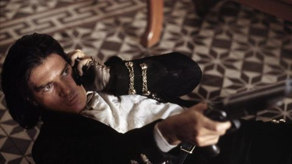 | Once Upon a Time in Mexico (2003) | 6.3 | 178.263 | Action, Crime, Thriller | 95 | Akcijski film. Progonjen i obilježen mnogim tragedijama, Desperado se povukao i počeo živjeti osamljenim životom. Sada živi daleko od svijeta, s Carolinom. | Zemlja: SAD
Redatelj: Robert Rodriguez
Scenarij: Robert Rodriguez
Glumci: Antonio Banderas, Salma Hayek, Johnny Depp, Mickey Rourke |
| sub 21.11. | 01:25 | CineStar Comedy | Phillip Morris, Volim te! | 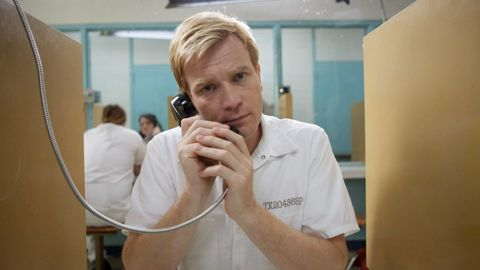 | I Love You Phillip Morris (2009) | 6.6 | 104.635 | Biography, Comedy, Crime | 100 | Phillip Morris, Volim te!. Steven Russell je u sretnom braku s Debbie i pripadnik je lokalne policije, ali teška prometna nesreća okreće njegov život naopako. | Zemlja: Francuska
Redatelj: Glenn Ficarra, John Requa
Scenarij: John Requa, Glenn Ficarra, Steve McVicker
Glumci: Jim Carrey, Ewan McGregor, Leslie Mann, Rodrigo Santoro |
| sub 21.11. | 02:00 | Kino TV | Blagoslov | | Benediction (2021) | 6.6 | 4.695 | Biography, Drama, History | 135 | "Blagoslov" istražuje buran život pjesnika iz Prvog svjetskog rata, Siegfrieda Sassoona, kroz oči cijenjenog redatelja Terencea Daviesa. | Zemlja: Ujedinjeno Kraljevstvo
Redatelj: Terence Davies
Scenarij: Terence Davies
Glumci: Jack Lowden, Peter Capaldi, Simon Russell Beale, Jeremy Irvine |
| sub 21.11. | 02:15 | CineStar Fantasy | [Rec]2 |  | (Rec)² (2009) | 6.5 | 86.386 | Horror, Thriller | 85 | Otkad su vlasti izgubile kontakt s ljudima zatočenima u zgradi pod karantenom prošlo je tek nekoliko minuta. Nitko točno ne zna što se unutra zbiva. | Zemlja: Španjolska
Redatelj: Jaume Balagueró, Paco Plaza
Scenarij: Jaume Balagueró, Manu Díaz, Paco Plaza, Amèlia Mora
Glumci: Jonathan D. Mellor, Óscar Zafra, Ariel Casas, Alejandro Casaseca |
| sub 21.11. | 02:20 | CineStar Action | Zakon jačeg | 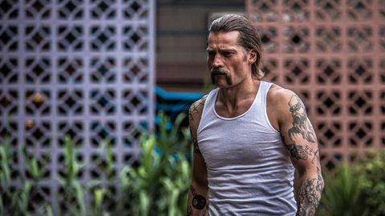 | Shot Caller (2017) | 7.3 | 116.564 | Crime, Drama, Thriller | 129 | Jacob Harlon je uspješan financijer, koji živi savršenim životom s obitelji i suprugom Kate (Lake Bell). | Zemlja: SAD
Redatelj: Ric Roman Waugh
Scenarij: Ric Roman Waugh
Glumci: Nikolaj Coster-Waldau, Omari Hardwick, Lake Bell, Jon Bernthal |
| sub 21.11. | 02:30 | Viasat Kino | Slomljeno cvijeće |  | Broken Flowers (2005) | 7.1 | 111.028 | Comedy, Drama, Mystery | 135 | Kada bivši Don Juan, s manjim bogatstvom, primi anonimno pismo u kojem piše da ima devetnaestogodišnjeg sina koji ga možda traži, kreće na putovanje po zemlji u potrazi za bivšim ljubavnicama. | Zemlja: SAD
Redatelj: Jim Jarmusch
Scenarij: Jim Jarmusch, Bill Raden, Sara Driver
Glumci: Bill Murray, Sharon Stone, Jessica Lange, Julie Delpy |
| sub 21.11. | 02:40 | CineStar 1 | Mid90s | 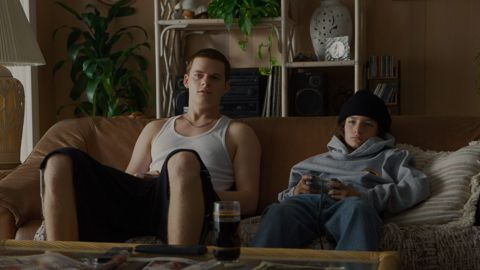 | Mid90s (2018) | 7.4 | 90.465 | Comedy, Drama | 95 | Ovaj film prati tinejdžera po imenu Stevie dok odrasta u Los Angelesu. | Zemlja: SAD
Redatelj: Jonah Hill
Scenarij: Jonah Hill
Glumci: Sunny Suljic, Katherine Waterston, Lucas Hedges, Gio Galicia |
| sub 21.11. | 04:20 | AMC | Lovina | 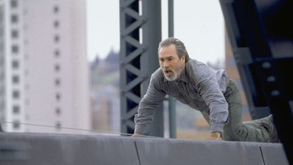 | The Hunted (2003) | 6.1 | 55.972 | Action, Crime, Drama | 85 | FBI-ev šumski tragač pokušava uhvatiti obučenog ubojicu, koji je lov na ljude pretvorio u sport. | Zemlja: SAD
Redatelj: William Friedkin
Scenarij: David Griffiths, Peter Griffiths, Art Monterastelli
Glumci: Tommy Lee Jones, Benicio del Toro, Connie Nielsen, Leslie Stefanson |
| sub 21.11. | 04:20 | STAR Movies | 10 života |  | 10 Lives (2024) | 6.0 | 2.745 | Animation, Comedy, Family | 100 | Razmaženi mačak uzima zdravo za gotovo svoju sreću nakon što ga spasi Rose, nježna i strastvena studentica. | Zemlja: Ujedinjeno Kraljevstvo
Redatelj: Christopher Jenkins
Scenarij: Christopher Jenkins, Karen Wengrod, Ken Cinnamon, Ken Cinnamon
Glumci: Mo Gilligan, Simone Ashley, Sophie Okonedo, Zayn Malik |
| sub 21.11. | 04:25 | STAR Movies | 10 života | | 10 Lives (2024) | 6.0 | 2.745 | Animation, Comedy, Family | 95 | Razmaženi mačak uzima zdravo za gotovo svoju sreću nakon što ga spasi Rose, nježna i strastvena studentica. | Zemlja: Ujedinjeno Kraljevstvo
Redatelj: Christopher Jenkins
Scenarij: Christopher Jenkins, Karen Wengrod, Ken Cinnamon, Ken Cinnamon
Glumci: Mo Gilligan, Simone Ashley, Sophie Okonedo, Zayn Malik |
| sub 21.11. | 04:45 | Viasat Kino | MaksimUm | 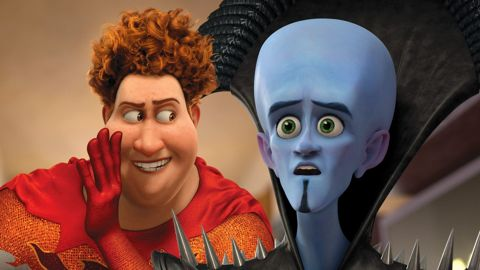 | Megamind (2010) | 7.3 | 333.003 | Action, Adventure, Animation | 120 | Zli genij konačno pobjeđuje svog dobrog neprijatelja, ali ostaje bez svrhe u svijetu bez superheroja. | Zemlja: SAD
Redatelj: Tom McGrath
Scenarij: Alan Schoolcraft, Brent Simons
Glumci: Will Ferrell, Brad Pitt, Tina Fey, Jonah Hill |
| sub 21.11. | 06:15 | CineStar 1 | 4 minute | | One Square Mile (2014) | 6.2 | 3.278 | Drama, Sport | 110 | Bivši atletski trener odluči trenirati darovitog studenta. Dogodi se tragedija baš prije najvažnije utrke njegovog života. To ga natjera da se suoči sa svime što ga je kočilo. | Zemlja: SAD
Redatelj: Charles-Olivier Michaud
Scenarij: Jeff Van Wie, Josh Campbell
Glumci: Kelly Blatz, Richard Jenkins, Cam Gigandet, Kim Basinger |
| sub 21.11. | 06:45 | CineStar Action | Prkos |  | Defiance (2008) | 7.1 | 162.240 | Action, Drama, History | 150 | Godine 1941, ubijene su tisuće Židova iz istočne Europe. Izbjegavši smrt, trojica braće bježe u šumu koju poznaju od djetinjstva. Tamo započinju svoju očajničku bitku sa nacistima. | Zemlja: SAD
Redatelj: Edward Zwick
Scenarij: Clayton Frohman, Edward Zwick, Nechama Tec
Glumci: Daniel Craig, Liev Schreiber, Jamie Bell, George MacKay |
| sub 21.11. | 06:45 | Viasat Kino | Dvije sestre za kralja |  | The Other Boleyn Girl (2008) | 6.7 | 128.688 | Biography, Drama, History | 150 | Ova povijesna drama prati oštru borbu sestara Mary (Scarlett Johansson) i Anne Boleyn (Natalie Portman), dok se trude steći naklonost kralja Henrika VIII. | Zemlja: Ujedinjeno Kraljevstvo
Redatelj: Justin Chadwick
Scenarij: Peter Morgan, Philippa Gregory
Glumci: Natalie Portman, Scarlett Johansson, Eric Bana, Jim Sturgess |
| sub 21.11. | 07:55 | HRT 1 | Ovčar | 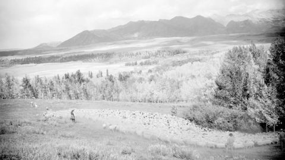 | The Sheepman (1958) | 6.8 | 3.514 | Western | 95 | Tvrdoglavi stočar Jason Sweet izazove opći bijes u gradiću uzgajivača goveda kada odluči ondje dovesti veliko stado ovaca. | Zemlja: SAD
Redatelj: George Marshall
Scenarij: William Bowers, James Edward Grant, William Roberts
Glumci: Glenn Ford, Shirley MacLaine, Leslie Nielsen, Mickey Shaughnessy |
| sub 21.11. | 08:00 | HRT 1 | Ovčar | | The Sheepman (1958) | 6.8 | 3.514 | Western | 90 | Tvrdoglavi stočar Jason Sweet izazove opći bijes u gradiću uzgajivača goveda kada odluči ondje dovesti veliko stado ovaca. | Zemlja: SAD
Redatelj: George Marshall
Scenarij: William Bowers, James Edward Grant, William Roberts
Glumci: Glenn Ford, Shirley MacLaine, Leslie Nielsen, Mickey Shaughnessy |
| sub 21.11. | 08:00 | STAR Movies | Matrix Reloaded | | The Matrix Reloaded (2003) | 7.2 | 680.159 | Action, Sci-Fi | 165 | Neo, Trinity i Morpheus pokušavaju spasiti Ključara kako bi se Neo mogao suočiti s Arhitektom Matrixa. | Redatelj: Lana Wachowski, Lilly Wachowski
Scenarij: Lilly Wachowski, Lana Wachowski
Glumci: Keanu Reeves, Laurence Fishburne, Carrie-Anne Moss, Hugo Weaving |
| sub 21.11. | 08:00 | Kino TV | Sve Je Prošlo Dobro |  | Tout s'est bien passé (2021) | 6.8 | 3.536 | Drama | 120 | Nakon što sazna da joj je otac s kojim je u nategnutim odnosima doživio moždani udar, Emmanuèle ga odluči posjetiti u bolnici. | Zemlja: Francuska
Redatelj: François Ozon
Scenarij: Emmanuèle Bernheim, François Ozon, Philippe Piazzo
Glumci: Sophie Marceau, André Dussollier, Géraldine Pailhas, Charlotte Rampling |
| sub 21.11. | 08:10 | STAR Movies | Matrix Reloaded | 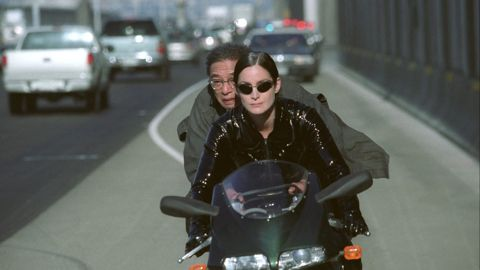 | The Matrix Reloaded (2003) | 7.2 | 680.159 | Action, Sci-Fi | 160 | Neo, Trinity i Morpheus pokušavaju spasiti Ključara kako bi se Neo mogao suočiti s Arhitektom Matrixa. | Zemlja: SAD
Redatelj: Lana Wachowski, Lilly Wachowski
Scenarij: Lilly Wachowski, Lana Wachowski
Glumci: Keanu Reeves, Laurence Fishburne, Carrie-Anne Moss, Hugo Weaving |
| sub 21.11. | 08:30 | AMC | Dvije sestre za kralja | | The Other Boleyn Girl (2008) | 6.7 | 128.688 | Biography, Drama, History | 110 | Anne i Mary Boleyn sestre su koje postaju suparnice zbog kralja Henrika VIII. | Zemlja: Ujedinjeno Kraljevstvo
Redatelj: Justin Chadwick
Scenarij: Peter Morgan, Philippa Gregory
Glumci: Natalie Portman, Scarlett Johansson, Eric Bana, Jim Sturgess |
| sub 21.11. | 08:40 | CineStar Fantasy | Ja sam majka | | I Am Mother (2019) | 6.7 | 107.978 | Drama, Mystery, Sci-Fi | 120 | Rođena iz probnih epruveta u nuklearnom skladištu, usamljena tinejdžerica prva je od novoga naraštaja ljudi koje je podigla "Majka" – dobronamjeran robot stvoren da ponovno nastani Zemlju nakon... | Zemlja: Australija
Redatelj: Grant Sputore
Scenarij: Michael Lloyd Green, Grant Sputore
Glumci: Luke Hawker, Rose Byrne, Maddie Lenton, Hazel Sandery |
| sub 21.11. | 09:00 | CineStar Comedy | Čovjek koji je ubio Don Quijotea | 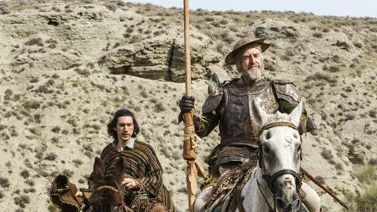 | The Man Who Killed Don Quixote (2018) | 6.3 | 24.215 | Adventure, Comedy, Drama | 135 | Avanturistička komedija redatelja Terryja Gilliama, poznatog po hitovima Leteći cirkus Monthyja Pythona i 12 majmuna. Priča se zbiva u današnjoj Španjolskoj. | Zemlja: Belgija
Redatelj: Terry Gilliam
Scenarij: Terry Gilliam, Tony Grisoni, Miguel de Cervantes y Saavedra
Glumci: Stellan Skarsgård, Joana Ribeiro, Óscar Jaenada, Jason Watkins |
| sub 21.11. | 09:15 | CineStar Action | Otkrila sam špijuna | 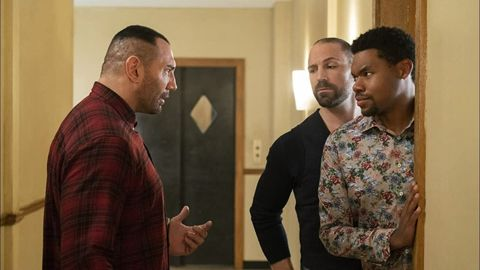 | My Spy (2020) | 6.4 | 43.045 | Action, Comedy | 115 | Film prati strogog CIA operativca JJ-a (Dave Bautista) koji je degradiran i poslan u tajnu misiju da zaštiti obitelj devetogodišnje djevojčice Sophie (Chloe Coleman), koja mi nikako taj posao ne... | Zemlja: SAD
Redatelj: Peter Segal
Scenarij: Erich Hoeber, Jon Hoeber
Glumci: Dave Bautista, Chloe Coleman, Parisa Fitz-Henley, Kristen Schaal |
| sub 21.11. | 09:15 | Viasat Kino | Rent-a-mama | 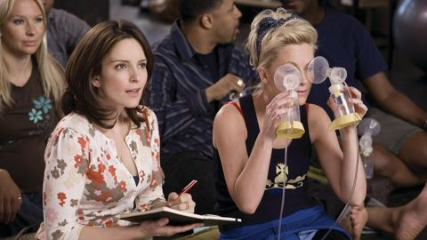 | Baby Mama (2008) | 6.0 | 50.394 | Comedy, Romance | 135 | Rent-a-mama. Uspješna, neudana poslovna žena koja silno želi imati dijete dozna da je neplodna te angažira ženu iz radničke klase da joj bude zamjenska majka. | Zemlja: SAD
Redatelj: Michael McCullers
Scenarij: Michael McCullers
Glumci: Amy Poehler, Tina Fey, Greg Kinnear, Dax Shepard |
| sub 21.11. | 10:00 | Kino TV | Divlji miš |  | Wilde Maus (2017) | 6.7 | 3.028 | Comedy, Crime, Drama | 120 | Kada pedesetogodišnji Georg izgubi posao glazbenog kritičara u bečkim novinama, on radi sve kako bi to sakrio od svoje mlađe supruge Johanne koja očajnički s njim želi imati dijete. | Zemlja: Austrija
Redatelj: Josef Hader
Scenarij: Josef Hader
Glumci: Josef Hader, Pia Hierzegger, Georg Friedrich, Jörg Hartmann |
| sub 21.11. | 10:15 | CineStar 2 | Nedodirljivi |  | Intouchables (2011) | 8.5 | 1.049.905 | Comedy, Drama | 125 | Ova topla emocionalna priča o prijateljstvu dvojice potpuno različitih muškaraca inspirirana je istinitim događajima i postala je najuspješniji francuski film svih vremena. | Zemlja: Francuska
Redatelj: Olivier Nakache, Éric Toledano
Scenarij: Olivier Nakache, Éric Toledano, Philippe Pozzo di Borgo
Glumci: François Cluzet, Omar Sy, Anne Le Ny, Audrey Fleurot |
| sub 21.11. | 10:20 | AMC | Pustolovina rabina Jacoba | 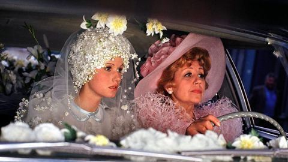 | Les aventures de Rabbi Jacob (1973) | 7.4 | 16.717 | Adventure, Comedy | 90 | Netrpeljivi Francuz prisiljen je glumiti popularnog rabina koji je u bijegu od skupine ubojica i policije. | Zemlja: Francuska
Redatelj: Gérard Oury
Scenarij: Gérard Oury, Danièle Thompson, Josy Eisenberg
Glumci: Louis de Funès, Claude Giraud, Henri Guybet, Renzo Montagnani |
| sub 21.11. | 11:10 | CineStar Action | Bitka za Midvej | | Midway (2019) | 6.7 | 107.727 | Action, Drama, History | 150 | Bitka kod Midwaya započela je 4. lipnja 1942. godine. Bila je to odlučujuća pobjeda SAD-a protiv Japana za vrijeme Drugog svjetskog rata. | Zemlja: Hong Kong
Redatelj: Roland Emmerich
Scenarij: Wes Tooke
Glumci: Ed Skrein, Patrick Wilson, Luke Evans, Woody Harrelson |
| sub 21.11. | 11:30 | Viasat Kino | Zatvorski krug |  | The Longest Yard (2005) | 6.4 | 215.426 | Comedy, Crime, Sport | 135 | Zatvorenici formiraju nogometni tim kako bi izazvali zatvorske čuvare. | Zemlja: SAD
Redatelj: Peter Segal
Scenarij: Albert S. Ruddy, Tracy Keenan Wynn, Sheldon Turner
Glumci: Adam Sandler, Chris Rock, Burt Reynolds, Nelly |
| sub 21.11. | 11:45 | CineStar 1 | Fabelmanovi | 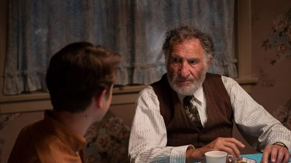 | The Fabelmans (2022) | 7.5 | 138.134 | Biography, Drama | 165 | U novoj uzbudljivoj filmskoj priči Spielberg donosi intimni pogled u svoje djetinjstvo u polu-autobiografskom filmu koji prati osjetljive godine mladića koji će otkriti potresnu obiteljsku tajnu... | Zemlja: SAD
Redatelj: Steven Spielberg
Scenarij: Steven Spielberg, Tony Kushner
Glumci: Gabriel LaBelle, Michelle Williams, Paul Dano, Seth Rogen |
| sub 21.11. | 11:50 | AMC | Knjižničar 2: Potraga za blagom kralja Solomona | 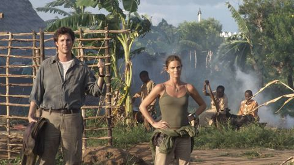 | The Librarian: Return to King Solomon's Mines (2006) | 6.2 | 17.678 | Action, Adventure, Comedy | 90 | U drugom nastavku pratimo Flynna Carsena, knjižničara avanturističkog duha, u potrazi za legendarnim rudnicima kralja Solomona. | Zemlja: SAD
Redatelj: Jonathan Frakes
Scenarij: Marco Schnabel, David N. Titcher
Glumci: Noah Wyle, Gabrielle Anwar, Bob Newhart, Jane Curtin |
| sub 21.11. | 12:15 | CineStar Fantasy | Duh u oklopu |  | Ghost in the Shell (2017) | 6.3 | 242.986 | Action, Crime, Drama | 115 | "Duh u oklopu" temeljen je na međunarodno priznatom SF naslijeđu, japanskom animiranom filmu iz 1995. godine, kojeg je režirao Mamoru Oshii prema istoimenoj mangi iz 1991. godine. | Zemlja: SAD
Redatelj: Rupert Sanders
Scenarij: Shirow Masamune, Jamie Moss, William Wheeler, Ehren Kruger
Glumci: Scarlett Johansson, Pilou Asbæk, Takeshi Kitano, Juliette Binoche |
| sub 21.11. | 12:20 | CineStar 2 | Slatka mala tajna |  | A Simple Favor (2018) | 6.7 | 193.062 | Comedy, Crime, Mystery | 125 | Napet a istovremeno glamurozan i duhoviti triler ispunjen prevratima i izdajama, tajnama i otkrivenjima, ljubavi i lojalnosti, ubojstvima i osveti, redatelja i scenarista Paula Feiga s Annom... | Zemlja: Kanada
Redatelj: Paul Feig
Scenarij: Darcey Bell, Jessica Sharzer
Glumci: Blake Lively, Anna Kendrick, Henry Golding, Ian Ho |
| sub 21.11. | 12:50 | RTL | King Kong |  | King Kong (2005) | 7.2 | 477.089 | Action, Adventure, Romance | 220 | Propali redatelj snima film na tajanstvenom otoku na kojem živi ogromna gorila. Stvari posve izmaknu kontroli kada se gorila zaljubi u glavnu glumicu, plavokosu Ann. | Zemlja: Njemačka
Redatelj: Peter Jackson
Scenarij: Fran Walsh, Philippa Boyens, Peter Jackson, Merian C. Cooper
Glumci: Naomi Watts, Jack Black, Adrien Brody, Thomas Kretschmann |
| sub 21.11. | 13:10 | RTL | King Kong | | King Kong (2005) | 7.2 | 477.089 | Action, Adventure, Romance | 200 | Propali redatelj snima film na tajanstvenom otoku na kojem živi ogromna gorila. Stvari posve izmaknu kontroli kada se gorila zaljubi u glavnu glumicu, plavokosu Ann. | Redatelj: Peter Jackson
Scenarij: Fran Walsh, Philippa Boyens, Peter Jackson, Merian C. Cooper
Glumci: Naomi Watts, Jack Black, Adrien Brody, Thomas Kretschmann |
| sub 21.11. | 13:20 | AMC | Šašavi robijaši |  | Stir Crazy (1980) | 6.7 | 33.139 | Comedy, Crime | 105 | Pogrešno optuženih dvoje najboljih prijatelja bit će poslani u zatvor zbog zločina koji nisu počinili. Međutim, nijedna zatvorska ćelija nije ih mogla držati zaključanima. | Zemlja: SAD
Redatelj: Sidney Poitier
Scenarij: Bruce Jay Friedman, Charles Blackwell
Glumci: Gene Wilder, Richard Pryor, Barry Corbin, Craig T. Nelson |
| sub 21.11. | 13:40 | CineStar Action | Na krilima časti | | Devotion (2022) | 6.6 | 33.595 | Action, Adventure, Biography | 150 | Film je inspiriran nevjerojatno potresnom istinitom pričom o dvojici elitnih borbenih pilota američke mornarice koji na kraju postanu najslavniji vojnici mornarice tijekom "zaboravljenog"... | Zemlja: SAD
Redatelj: J.D. Dillard
Scenarij: Jake Crane, Jonathan Stewart, Adam Makos
Glumci: Jonathan Majors, Glen Powell, Christina Jackson, Thomas Sadoski |
| sub 21.11. | 13:45 | Viasat Kino | Ponos i predrasude | | Pride & Prejudice (2005) | 7.8 | 386.414 | Drama, Romance | 165 | Životi pet sestara u georgijanskoj Engleskoj okrenu se naglavce kada se bogati mladić sa svojim prijateljem doseli u njihovo susjedstvo. Film je temeljen na romanu Jane Austen. | Zemlja: SAD
Redatelj: Joe Wright
Scenarij: Deborah Moggach, Jane Austen, Emma Thompson
Glumci: Keira Knightley, Matthew Macfadyen, Brenda Blethyn, Donald Sutherland |
| sub 21.11. | 14:00 | Kino TV | Ima neka tajna veza |  | The Only Living Boy in New York (2017) | 6.4 | 20.346 | Drama | 120 | Thomas Webb (Callum Turner), sin izdavača i njegove supruge umjetnice, upravo je dobio fakultetsku diplomu i pokušava pronaći svoje mjesto pod suncem New Yorka. | Zemlja: SAD
Redatelj: Marc Webb
Scenarij: Allan Loeb
Glumci: Callum Turner, Kate Beckinsale, Pierce Brosnan, Cynthia Nixon |
| sub 21.11. | 14:30 | CineStar 1 | 96 sati |  | Taken (2008) | 7.7 | 681.545 | Action, Crime, Thriller | 110 | Brian (Liam Neeson) je bivši tajni agent koji živi u Americi, rastavljen je i ima 17-godišnju kćer Kim (Maggie Grace) a ona je s majkom i njenim novim suprugom. | Zemlja: Francuska
Redatelj: Pierre Morel
Scenarij: Luc Besson, Robert Mark Kamen
Glumci: Liam Neeson, Maggie Grace, Famke Janssen, Xander Berkeley |
| sub 21.11. | 14:35 | CineStar Comedy | Paddington |  | Paddington (2014) | 7.3 | 160.457 | Adventure, Comedy, Family | 95 | Film Paddington prati komične avanture mladog peruanskog medvjeda koji putuje u London u potrazi za domom. | Zemlja: Ujedinjeno Kraljevstvo
Redatelj: Paul King
Scenarij: Paul King, Hamish McColl, Michael Bond
Glumci: Hugh Bonneville, Sally Hawkins, Samuel Joslin, Madeleine Harris |
| sub 21.11. | 15:05 | AMC | Zatvorski krug | | The Longest Yard (2005) | 6.4 | 215.426 | Comedy, Crime, Sport | 100 | Zatvorenici oforme nogometnu momčad kako bi izazvali zatvorske čuvare. | Zemlja: SAD
Redatelj: Peter Segal
Scenarij: Albert S. Ruddy, Tracy Keenan Wynn, Sheldon Turner
Glumci: Adam Sandler, Chris Rock, Burt Reynolds, Nelly |
| sub 21.11. | 15:10 | STAR Movies | Božić S Tobom | | A Christmas Together with You (2021) ? | 6.5 | 1.504 | Drama, Romance | 110 | Megan i njezin zamjenski otac Frank za Božić kreću na put kako bi on pronašao svoju davno izgubljenu ljubav. Hoće li i Megan na putu pronaći ljubav svog života? | Redatelj: Kevin Fair
Scenarij: Don Locke, Graham Locke
Glumci: Laura Vandervoort, Niall Matter, Harry Lennix, Liza Huget |
| sub 21.11. | 15:20 | STAR Movies | Božić s tobom | | A Christmas Together with You (2021) ? | 6.5 | 1.504 | Drama, Romance | 110 | Megan i njezin zamjenski otac Frank za Božić kreću na put kako bi on pronašao svoju davno izgubljenu ljubav. Hoće li i Megan na putu pronaći ljubav svog života? | Zemlja: Kanada
Redatelj: Kevin Fair
Scenarij: Don Locke, Graham Locke
Glumci: Laura Vandervoort, Niall Matter, Harry Lennix, Liza Huget |
| sub 21.11. | 15:55 | CineStar Fantasy | Veliko plavetnilo |  | Le grand bleu (1988) | 7.5 | 59.667 | Adventure, Drama, Sport | 145 | Enzo i Jacques već se dugo poznaju. Njihovo je prijateljsko započelo u njihovim dječačkim danima na Sredozemlju. | Zemlja: Francuska
Redatelj: Luc Besson
Scenarij: Luc Besson, Robert Garland, Marilyn Goldin, Jacques Mayol
Glumci: Jean-Marc Barr, Jean Reno, Rosanna Arquette, Sergio Castellitto |
| sub 21.11. | 16:10 | CineStar Action | Tajna jezera Devil's Den | 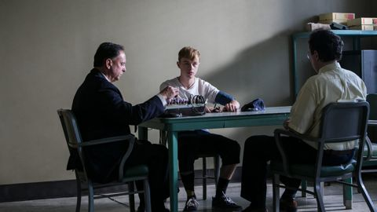 | Devil's Knot (2013) | 6.1 | 26.003 | Biography, Crime, Drama | 130 | Film Tajna jezera Devil's Den snimljen je prema istinitim događajima iz 1993. g. i istoimenoj knjizi Mare Leveritt. | Zemlja: SAD
Redatelj: Atom Egoyan
Scenarij: Paul Harris Boardman, Scott Derrickson, Mara Leveritt
Glumci: Colin Firth, Reese Witherspoon, Dane DeHaan, Mireille Enos |
| sub 21.11. | 16:10 | CineStar Comedy | Medvjedić Paddington 2 | | Paddington 2 (2017) | 7.8 | 117.644 | Adventure, Comedy, Family | 100 | Omiljeni lik kultne engleske serije slikovnica, medvjedić Paddington, vraća se na velika platna s novim avanturama. | Zemlja: SAD
Redatelj: Paul King
Scenarij: Paul King, Simon Farnaby, Michael Bond, Mark Burton
Glumci: Ben Whishaw, Hugh Bonneville, Sally Hawkins, Hugh Grant |
| sub 21.11. | 16:20 | CineStar 1 | 96 sati: Istanbul |  | Taken 2 (2012) | 6.2 | 340.535 | Action, Crime, Thriller | 110 | Liam Neeson vraća se kao Bryan Mills, umirovljeni agent CIA-e s posebnim vještinama kojega ništa nije moglo spriječiti da spasi svoju kćer Kim iz ruku albanskih otmičara. | Zemlja: SAD
Redatelj: Olivier Megaton
Scenarij: Luc Besson, Robert Mark Kamen
Glumci: Liam Neeson, Maggie Grace, Famke Janssen, Rade Šerbedžija |
| sub 21.11. | 17:00 | STAR Movies | Novi Svijet | | The New World (2005) | 6.7 | 94.539 | Biography, Drama, History | 180 | Priča o engleskom istraživanju Virginije, te o svijetu koji se mijenja i Pocahontasinim ljubavima. | Redatelj: Terrence Malick
Scenarij: Terrence Malick
Glumci: Colin Farrell, Q'orianka Kilcher, Christopher Plummer, Christian Bale |
| sub 21.11. | 17:10 | STAR Movies | Novi svijet |  | The New World (2005) | 6.7 | 94.539 | Biography, Drama, History | 170 | Priča o engleskom istraživanju Virginije, te o svijetu koji se mijenja i Pocahontasinim ljubavima. | Zemlja: SAD
Redatelj: Terrence Malick
Scenarij: Terrence Malick
Glumci: Colin Farrell, Q'orianka Kilcher, Christopher Plummer, Christian Bale |
| sub 21.11. | 17:50 | CineStar Comedy | Božićna pjesma |  | A Song for Christmas (2017) | 6.6 | 2.037 | Drama, Romance | 90 | Adelaide Kay, lijepa je i talentirana, i njezin se hit singl penje na ljestvicama. Čak su je i romantično povezivali s Coleom Wyattom. Skupa će nastupiti u The Palaceu. | Zemlja: SAD
Redatelj: Rich Newey
Scenarij: Betsy Morris, Joie Botkin
Glumci: Becca Tobin, Kevin McGarry, Kendra Leigh Timmins, Paula Boudreau |
| sub 21.11. | 18:00 | CineStar 2 | Utrka | 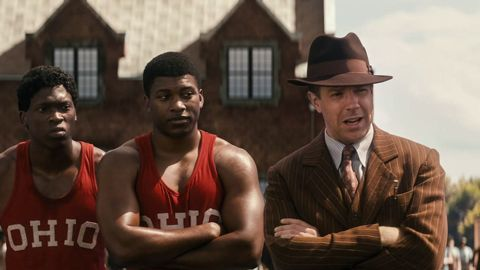 | Race (2016) | 7.1 | 44.503 | Biography, Drama, Sport | 140 | Temeljen na istinitim događajima i životu Jessea Owensa, slavnog američkog atletičara, legendarnog po svom četverostrukom trijumfu na Olimpijskim igrama u Berlinu, 1936. godine. | Zemlja: Kanada
Redatelj: Stephen Hopkins
Scenarij: Joe Shrapnel, Anna Waterhouse
Glumci: Stephan James, Jason Sudeikis, Jeremy Irons, Carice van Houten |
| sub 21.11. | 18:00 | Kino TV | Nigdje posebno | 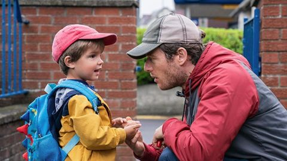 | Nowhere Special (2020) | 7.4 | 9.995 | Drama | 135 | Inspiriran istinitim događajima, u drami "Nigdje posebno" glavnu je ulogu ostvario James Norton kao 35-godišnji čistač prozora John koji je život u potpunosti posvetio odgoju vlastitog sina nakon... | Zemlja: Italija
Redatelj: Uberto Pasolini
Scenarij: Uberto Pasolini
Glumci: James Norton, Daniel Lamont, Eileen O'Higgins, Valerie O'Connor |
| sub 21.11. | 18:10 | CineStar 1 | 96 sati: U bijegu |  | Taken 3 (2014) | 6.0 | 217.635 | Action, Crime, Thriller | 125 | Miroljubivi obiteljski čovjek Bryan Mills (bivši agent zanimljive i bogate prošlosti) ne bježi više od najgorih zlikovaca današnjice, nego od ujedinjenih policijskih snaga Los Angelesa, CIA-je i... | Zemlja: SAD
Redatelj: Olivier Megaton
Scenarij: Luc Besson, Robert Mark Kamen
Glumci: Liam Neeson, Maggie Grace, Forest Whitaker, Dougray Scott |
| sub 21.11. | 18:16 | HRT 3 | Praznik u Rimu |  | Roman Holiday (1953) | 8.0 | 159.742 | Comedy, Drama, Romance | 114 | Mlada kraljevna Ann u službenom je posjetu Rimu. Nakon jedne dosadne i formalne večere, Ann se iskrade i krene u obilazak grada. | Zemlja: SAD
Redatelj: William Wyler
Scenarij: Dalton Trumbo, Ian McLellan Hunter, John Dighton
Glumci: Gregory Peck, Audrey Hepburn, Eddie Albert, Hartley Power |
| sub 21.11. | 18:17 | HRT 3 | Praznik u Rimu | | Roman Holiday (1953) | 8.0 | 159.742 | Comedy, Drama, Romance | 113 | Mlada kraljevna Ann u službenom je posjetu Rimu. Nakon jedne dosadne i formalne večere, Ann se iskrade i krene u obilazak grada. | Zemlja: SAD
Redatelj: William Wyler
Scenarij: Dalton Trumbo, Ian McLellan Hunter, John Dighton
Glumci: Gregory Peck, Audrey Hepburn, Eddie Albert, Hartley Power |
| sub 21.11. | 18:30 | Viasat Kino | Prevoditeljica | 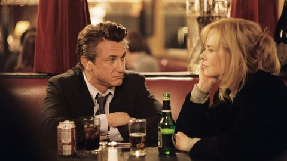 | The Interpreter (2005) | 6.4 | 117.414 | Crime, Mystery, Thriller | 150 | Političke spletke i obmane odvijaju se u Ujedinjenim narodima, gdje agent tajne službe istražuje prevoditeljicu koja tvrdi da je slučajno čula razgovor u kojem se planira atentat na predsjednika... | Zemlja: SAD
Redatelj: Sydney Pollack
Scenarij: Martin Stellman, Brian Ward, Charles Randolph, Scott Frank
Glumci: Nicole Kidman, Sean Penn, Catherine Keener, Jesper Christensen |
| sub 21.11. | 18:30 | AMC | 50 Poljubaca Za Pamćenje | 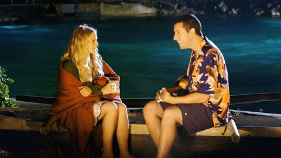 | 50 First Dates (2004) | 6.8 | 423.413 | Comedy, Drama, Romance | 90 | Henry je nepopravljivi zavodnik sve dok ne upozna simpatičnu Lucy. Konačno spreman obvezati se na ozbiljan odnos, Henry se sada suočava s novim problemom. | Zemlja: SAD
Redatelj: Peter Segal
Scenarij: George Wing
Glumci: Adam Sandler, Drew Barrymore, Rob Schneider, Sean Astin |
| sub 21.11. | 19:20 | CineStar Comedy | Kauboji | | Kauboji (2013) | 7.0 | 1.179 | Comedy, Drama | 110 | "Život smije biti dosadan, ali vestern nikada!" moto je skupine autsajdera koji radeći kazališnu predstavu, na suptilan način spajaju oporost provincije i univerzalnu poetiku vestern zvuka i... | Zemlja: Hrvatska
Redatelj: Tomislav Mrsic
Scenarij: Sasa Anocic, Tomislav Mrsic
Glumci: Saša Anočić, Živko Anočić, Matija Antolić, Hrvoje Barišić |
| sub 21.11. | 20:00 | AMC | Spajdermen 2 |  | Spider-Man 2 (2004) | 7.5 | 815.169 | Action, Adventure, Sci-Fi | 120 | Spider-Man 2. Učenik i fotograf Peter Parker želi se odreći svog postojanja kao superjunaka i konačno osvojiti svoju veliku ljubav Mary Jane. Ali ona se odmiče od njega. | Zemlja: SAD
Redatelj: Sam Raimi
Scenarij: Stan Lee, Steve Ditko, Alfred Gough, Miles Millar
Glumci: Tobey Maguire, Kirsten Dunst, James Franco, Alfred Molina |
| sub 21.11. | 20:15 | CineStar 1 | Ferrari | 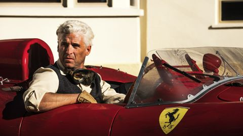 | Ferrari (2023) | 6.4 | 69.965 | Biography, Drama, History | 145 | Ljeto je 1957. Nakon spektakla Formule 1, bivši je vozač Enzo Ferrari u krizi. Bankrot prijeti tvornici koju su on i njegova supruga Laura od temelja izgradili prije deset godina. | Zemlja: SAD
Redatelj: Michael Mann
Scenarij: Troy Kennedy Martin, Brock Yates
Glumci: Adam Driver, Penélope Cruz, Shailene Woodley, Sarah Gadon |
| sub 21.11. | 20:15 | Kino TV | Izdajnik | 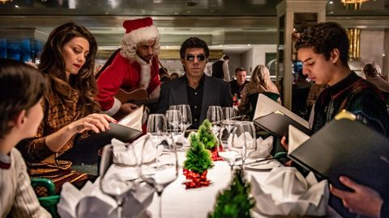 | Il traditore (2019) | 7.1 | 14.907 | Biography, Crime, Drama | 225 | Veteran talijanskog filma Marco Bellocchio, poznat po radikalnim filmovima kojima je desetljećima unosio pomutnju u talijansku kinematografiju nije nimalo usporio u svojim poznim godinama. | Zemlja: Italija
Redatelj: Marco Bellocchio
Scenarij: Marco Bellocchio, Valia Santella, Ludovica Rampoldi, Francesco Piccolo
Glumci: Pierfrancesco Favino, Maria Fernanda Cândido, Fabrizio Ferracane, Fausto Russo Alesi |
| sub 21.11. | 20:20 | CineStar 2 | Rambo 4 | 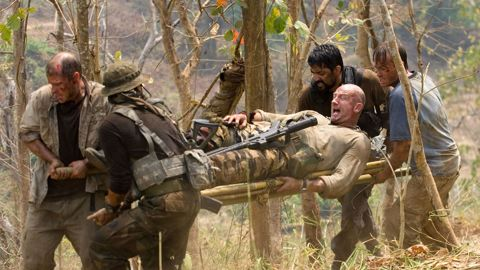 | Rambo (2008) | 7.0 | 259.693 | Action, Thriller | 95 | 20 g. nakon zadnjega filma u serijalu "John Rambo" (SYLVESTER STALLONE) vratio se na sjeverni Tajland gdje vozi brod na rijeci Salween. Na granici s Mjanmarom građanski rat traje već 60 g. | Zemlja: Tajland
Redatelj: Sylvester Stallone
Scenarij: Art Monterastelli, Sylvester Stallone, David Morrell
Glumci: Sylvester Stallone, Julie Benz, Paul Schulze, Graham McTavish |
| sub 21.11. | 20:28 | HRT 3 | Doručak kod Tiffanyja | | Breakfast at Tiffany's (1961) | 7.5 | 207.357 | Comedy, Drama, Romance | 110 | Paul Varjak (G. Peppard) mladi je pisac koji često ima problema s traganjem za inspiracijom, a i opterećen je svojom vezom s imućnom ženom. | Zemlja: SAD
Redatelj: Blake Edwards
Scenarij: Truman Capote, George Axelrod
Glumci: Audrey Hepburn, George Peppard, Patricia Neal, José Luis de Villalonga |
| sub 21.11. | 20:29 | HRT 3 | Doručak kod Tiffanyja | | Breakfast at Tiffany's (1961) | 7.5 | 207.357 | Comedy, Drama, Romance | 110 | Paul Varjak (G. Peppard) mladi je pisac koji često ima problema s traganjem za inspiracijom, a i opterećen je svojom vezom s imućnom ženom. | Zemlja: SAD
Redatelj: Blake Edwards
Scenarij: Truman Capote, George Axelrod
Glumci: Audrey Hepburn, George Peppard, Patricia Neal, José Luis de Villalonga |
| sub 21.11. | 20:30 | RTL | Twister 2 | 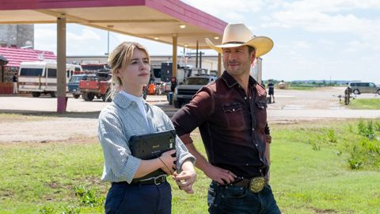 | Twisters (2024) | 6.5 | 202.634 | Action, Adventure, Thriller | 120 | Kate Carter (Daisy Edgar-Jones) radi u Oklahomi s timom lovaca na oluje među kojima je Javi (Anthony Ramos). | Zemlja: SAD
Redatelj: Lee Isaac Chung
Scenarij: Mark L. Smith, Joseph Kosinski, Michael Crichton, Anne-Marie Martin
Glumci: Daisy Edgar-Jones, Glen Powell, Anthony Ramos, Maura Tierney |
| sub 21.11. | 20:30 | CineStar Fantasy | Tri hiljade godina čežnje |  | Three Thousand Years of Longing (2022) | 6.7 | 74.559 | Drama, Fantasy, Romance | 115 | Uspješna, ali usamljena akademkinja, dr. Alithea Binnie zadovoljna je svojim životom i stvorenje je razuma. | Zemlja: SAD
Redatelj: George Miller
Scenarij: George Miller, Augusta Miller, A.S. Byatt
Glumci: Tilda Swinton, Idris Elba, Alyla Browne, Aamito Lagum |
| sub 21.11. | 20:35 | RTL | Twister 2 | | Twisters (2024) | 6.5 | 202.634 | Action, Adventure, Thriller | 145 | Kate Carter (Daisy Edgar-Jones) radi u Oklahomi s timom lovaca na oluje među kojima je Javi (Anthony Ramos). | Zemlja: SAD
Redatelj: Lee Isaac Chung
Scenarij: Mark L. Smith, Joseph Kosinski, Michael Crichton, Anne-Marie Martin
Glumci: Daisy Edgar-Jones, Glen Powell, Anthony Ramos, Maura Tierney |
| sub 21.11. | 21:00 | Viasat Kino | Izgubljeni u prijevodu | 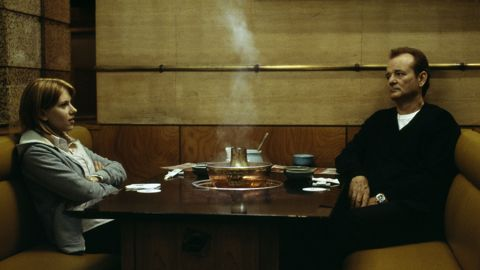 | Lost in Translation (2003) | 7.7 | 537.398 | Comedy, Drama | 135 | Blazirani sredovječni glumac (Bill Murray) i mlada žena (Scarlett Johansson) slučajno se susretnu i istražuju suvremeni Tokyo i zajedničko nezadovoljstvo životom u ovom filmu nagrađenom Oscarom. | Zemlja: Japan
Redatelj: Sofia Coppola
Scenarij: Sofia Coppola
Glumci: Scarlett Johansson, Bill Murray, Giovanni Ribisi, Anna Faris |
| sub 21.11. | 21:55 | CineStar Action | Bratstvo lopova | 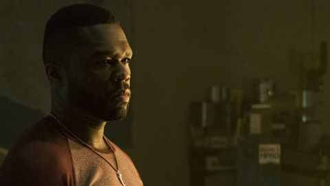 | Den of Thieves (2018) | 7.0 | 156.846 | Action, Crime, Drama | 155 | Grupa vrsnih pljačkaša odlučuje opljačkati Federalnu rezervu u Los Angelesu, a za njima kreće neumorni policijski agent. | Zemlja: SAD
Redatelj: Christian Gudegast
Scenarij: Christian Gudegast, Paul T. Scheuring
Glumci: Gerard Butler, Pablo Schreiber, O'Shea Jackson Jr., 50 Cent |
| sub 21.11. | 21:55 | CineStar 2 | Rambo: Do zadnje kapi krvi |  | Rambo: Last Blood (2019) | 6.1 | 122.145 | Action, Crime, Thriller | 110 | Unatoč ozbiljnim godinama legendarni Sylvester Stallone, jedan od najpopularnijih svjetskih filmskih akcijskih junaka koji je najpoznatije uloge ostvario upravo u seriji filmova o Rockyju i Rambu... | Zemlja: SAD
Redatelj: Adrian Grunberg
Scenarij: Matthew Cirulnick, Sylvester Stallone, Dan Gordon, David Morrell
Glumci: Sylvester Stallone, Paz Vega, Yvette Monreal, Sergio Peris-Mencheta |
| sub 21.11. | 22:00 | AMC | Ace Ventura: Šašavi detektiv |  | Ace Ventura: Pet Detective (1994) | 6.9 | 360.369 | Comedy | 80 | Luckasti detektiv koji se specijalizirao za životinje daje se u potragu za nestalom maskotom Miami Dolphinsa. | Zemlja: SAD
Redatelj: Tom Shadyac
Scenarij: Jack Bernstein, Tom Shadyac, Jim Carrey
Glumci: Jim Carrey, Courteney Cox, Sean Young, Tone Loc |
| sub 21.11. | 22:15 | Nova TV | Kong Ostrvo lobanja |  | Kong: Skull Island (2017) | 6.7 | 381.529 | Action, Adventure, Fantasy | 130 | Producenti "Godzille" donose svoju verziju izvora jednog od najmoćnijih mitova o čudovištu svih vremena. | Zemlja: Kina
Redatelj: Jordan Vogt-Roberts
Scenarij: Dan Gilroy, Max Borenstein, Derek Connolly, John Gatins
Glumci: Tom Hiddleston, Samuel L. Jackson, Brie Larson, John C. Reilly |
| sub 21.11. | 22:30 | RTL | Transformersi |  | Transformers (2007) | 7.1 | 730.842 | Action, Adventure, Sci-Fi | 130 | Prije mnogo godina, na udaljenom planetu Cybertron vodio se rat između plemenitih Autobota i prevrtljivih Decepticona, različitih vrsta robota koji se mogu transformirati, koji su se bili sukobili... | Zemlja: SAD
Redatelj: Michael Bay
Scenarij: Roberto Orci, Alex Kurtzman, John Rogers
Glumci: Shia LaBeouf, Megan Fox, Josh Duhamel, Tyrese Gibson |
| sub 21.11. | 22:40 | CineStar 1 | Pad Olimpa |  | Olympus Has Fallen (2013) | 6.5 | 310.238 | Action, Thriller | 130 | Kada Bijelu kuću (šifra Tajne službe: Olimp) zauzmu teroristi i zarobe predsjednika, osramoćeni bivši predsjednikov tjelohranitelj Mike Banning zatekne se zarobljen u zgradi. | Zemlja: SAD
Redatelj: Antoine Fuqua
Scenarij: Creighton Rothenberger, Katrin Benedikt
Glumci: Gerard Butler, Aaron Eckhart, Finley Jacobsen, Dylan McDermott |
| sub 21.11. | 22:50 | CineStar Comedy | Ljubavni jackpot |  | The Rebound (2009) | 6.3 | 52.927 | Comedy, Romance | 95 | Dobitnica Oscara Catherine Zeta-Jones ("Chicago") i zvijezda hit komedije "Mamurluk", Justin Bartha glume glavne uloge u ovoj romantičnoj komediji smještenoj u New Yorku. | Zemlja: SAD
Redatelj: Bart Freundlich
Scenarij: Bart Freundlich
Glumci: Catherine Zeta-Jones, Justin Bartha, Andrew Cherry, Kelly Gould |
| sub 21.11. | 23:00 | RTL | Transformersi | | Transformers (2007) | 7.1 | 730.842 | Action, Adventure, Sci-Fi | 165 | Prije mnogo godina, na udaljenom planetu Cybertron vodio se rat između plemenitih Autobota i prevrtljivih Decepticona, različitih vrsta robota koji se mogu transformirati, koji su se bili sukobili... | Zemlja: SAD
Redatelj: Michael Bay
Scenarij: Roberto Orci, Alex Kurtzman, John Rogers
Glumci: Shia LaBeouf, Megan Fox, Josh Duhamel, Tyrese Gibson |
| sub 21.11. | 23:15 | Viasat Kino | Djevojka s bisernom naušnicom |  | Girl with a Pearl Earring (2003) | 6.9 | 85.133 | Biography, Drama, Romance | 120 | Mlada sluškinja koja radi u kući slikara Johannesa Vermeera, postaje model za jedno od njegovih najpoznatijih djela. | Zemlja: Ujedinjeno Kraljevstvo
Redatelj: Peter Webber
Scenarij: Tracy Chevalier, Olivia Hetreed
Glumci: Scarlett Johansson, Colin Firth, Tom Wilkinson, Judy Parfitt |
| sub 21.11. | 23:30 | HRT 1 | Spoj sa serijskim ubojicom | 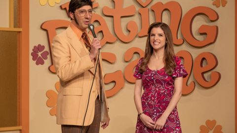 | Woman of the Hour (2023) | 6.6 | 77.803 | Crime, Drama, Mystery | 95 | Psihološki triler, temeljen na istinitoj priči o Rodneyju Alcali, serijskom ubojici koji je usred svog krvavog pohoda 1978. godine nastupio kao natjecatelj u popularnoj televizijskoj emisiji za... | Zemlja: SAD
Redatelj: Anna Kendrick
Scenarij: Ian McDonald
Glumci: Anna Kendrick, Daniel Zovatto, Nicolette Robinson, Tony Hale |
| sub 21.11. | 23:45 | CineStar 2 | Sjedinjene države protiv Billie Holiday |  | The United States vs. Billie Holiday (2021) | 6.3 | 15.915 | Biography, Drama, Music | 135 | Film za Oscara® nominiranog redatelja Leeja Danielsa govori o sukobu Federalnog ureda za narkotike i jazz pjevačice Billie Holiday protiv koje je pokrenuo istragu. | Zemlja: SAD
Redatelj: Lee Daniels
Scenarij: Suzan-Lori Parks, Johann Hari
Glumci: Andra Day, Trevante Rhodes, Garrett Hedlund, Leslie Jordan |
| sub 21.11. | 23:47 | HRT 1 | Spoj sa serijskim ubojicom | | Woman of the Hour (2023) | 6.6 | 77.803 | Crime, Drama, Mystery | 95 | Psihološki triler, temeljen na istinitoj priči o Rodneyju Alcali, serijskom ubojici koji je usred svog krvavog pohoda 1978. godine nastupio kao natjecatelj u popularnoj televizijskoj emisiji za... | Zemlja: SAD
Redatelj: Anna Kendrick
Scenarij: Ian McDonald
Glumci: Anna Kendrick, Daniel Zovatto, Nicolette Robinson, Tony Hale |
| ned 22.11. | 00:00 | STAR Movies | Neprijatelj pred vratima |  | Enemy at the Gates (2001) | 7.5 | 297.162 | Action, Drama, War | 165 | Ruski i njemački snajperist igraju se mačke i miša tijekom bitke za Staljingrad. | Zemlja: Irska
Redatelj: Jean-Jacques Annaud
Scenarij: Jean-Jacques Annaud, Alain Godard
Glumci: Jude Law, Ed Harris, Rachel Weisz, Joseph Fiennes |
| ned 22.11. | 00:00 | Kino TV | Sibyl | | Sibyl (2019) | 6.0 | 6.764 | Drama | 115 | Psihoterapeutkinja Sibyl odlučuje se vratiti svojoj prvoj velikoj ljubavi: pisanju. | Zemlja: Belgija
Redatelj: Justine Triet
Scenarij: Arthur Harari, David H. Pickering, Justine Triet
Glumci: Virginie Efira, Adèle Exarchopoulos, Gaspard Ulliel, Sandra Hüller |
| ned 22.11. | 00:10 | CineStar Fantasy | Opstanak | 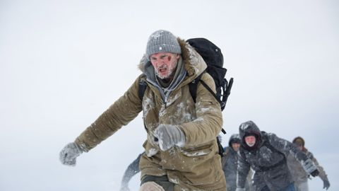 | The Grey (2011) | 6.7 | 277.078 | Action, Adventure, Drama | 115 | Liam Neeson iznenada mora postati junak i povesti skupinu otvrdnulih muškaraca u borbu za preživljavanje i povratak kući nakon što im se avion sruši u zabačenoj divljini na Aljasci. | Zemlja: SAD
Redatelj: Joe Carnahan
Scenarij: Joe Carnahan, Ian Mackenzie Jeffers
Glumci: Liam Neeson, Frank Grillo, Dermot Mulroney, Dallas Roberts |
| ned 22.11. | 00:25 | Nova TV | Elitni ubojice | 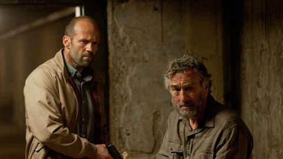 | Killer Elite (2011) | 6.4 | 142.622 | Action, Crime, Thriller | 125 | Godina je 1980. Profesionalni ubojice Danny Bryce (Jason Statham), Hunter (Robert De Niro), Davies (Dominic Purcell) i Meier (Aden Young) nalaze su u Meksiku na zadatku. | Zemlja: Australija
Redatelj: Gary McKendry
Scenarij: Matt Sherring, Ranulph Fiennes
Glumci: Jason Statham, Clive Owen, Robert De Niro, Dominic Purcell |
| ned 22.11. | 00:30 | Nova TV | Elitni ubojice | | Killer Elite (2011) | 6.4 | 142.622 | Action, Crime, Thriller | 140 | Godina je 1980. Profesionalni ubojice Danny Bryce (Jason Statham), Hunter (Robert De Niro), Davies (Dominic Purcell) i Meier (Aden Young) nalaze su u Meksiku na zadatku. | Zemlja: Australija
Redatelj: Gary McKendry
Scenarij: Matt Sherring, Ranulph Fiennes
Glumci: Jason Statham, Clive Owen, Robert De Niro, Dominic Purcell |
| ned 22.11. | 01:05 | HRT 1 | Detektiv Di i misterij fantomskog plemena |  | Di Renjie: Tongtian diguo (2010) | 6.6 | 12.538 | Action, Adventure, Drama | 125 | Kina 689. godine, u doba dinastije Tang a tijekom priprema za ustoličenje prve kineske carice Wu Zeitan (Carina Lau). | Zemlja: Kina
Redatelj: Hark Tsui
Scenarij: Chia-Lu Chang, Kuo-Fu Chen, Qianyu Lin
Glumci: Andy Lau, Carina Lau, Bingbing Li, Tony Ka Fai Leung |
| ned 22.11. | 01:10 | AMC | Blejd raner 2049 |  | Blade Runner 2049 (2017) | 8.0 | 777.753 | Action, Drama, Mystery | 150 | Godine 2049. u Los Angelesu novi istrebljivač vodi istragu koja ga vodi do traga prethodnog istrebljivača, koji je nestao prije trideset godina. | Zemlja: Meksiko
Redatelj: Denis Villeneuve
Scenarij: Hampton Fancher, Michael Green, Philip K. Dick
Glumci: Ryan Gosling, Harrison Ford, Ana de Armas, Jared Leto |
| ned 22.11. | 01:22 | HRT 1 | Detektiv Di i misterij fantomskog plemena | | Di Renjie: Tongtian diguo (2010) | 6.6 | 12.538 | Action, Adventure, Drama | 119 | Kina 689. godine, u doba dinastije Tang a tijekom priprema za ustoličenje prve kineske carice Wu Zeitan (Carina Lau). | Zemlja: Kina
Redatelj: Hark Tsui
Scenarij: Chia-Lu Chang, Kuo-Fu Chen, Qianyu Lin
Glumci: Andy Lau, Carina Lau, Bingbing Li, Tony Ka Fai Leung |
| ned 22.11. | 01:45 | CineStar Comedy | Večera u Americi | 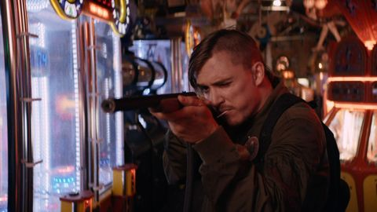 | Dinner in America (2020) | 7.5 | 18.016 | Comedy, Drama, Music | 111 | Punk roker u bijegu i mlada žena opsjednuta njegovom grupom krenu na neočekivano i epsko putovanje kroz propadajuća predgrađa američkog Srednjeg zapada. | Zemlja: SAD
Redatelj: Adam Rehmeier
Scenarij: Adam Rehmeier
Glumci: Kyle Gallner, Emily Skeggs, Griffin Gluck, Pat Healy |
| ned 22.11. | 01:55 | Kino TV | Izdajnik | | Il traditore (2019) | 7.1 | 14.907 | Biography, Crime, Drama | 150 | Veteran talijanskog filma Marco Bellocchio, poznat po radikalnim filmovima kojima je desetljećima unosio pomutnju u talijansku kinematografiju nije nimalo usporio u svojim poznim godinama. | Zemlja: Italija
Redatelj: Marco Bellocchio
Scenarij: Marco Bellocchio, Valia Santella, Ludovica Rampoldi, Francesco Piccolo
Glumci: Pierfrancesco Favino, Maria Fernanda Cândido, Fabrizio Ferracane, Fausto Russo Alesi |
| ned 22.11. | 02:00 | HRT 3 | Praznik u Rimu | | Roman Holiday (1953) | 8.0 | 159.742 | Comedy, Drama, Romance | 115 | Mlada kraljevna Ann u službenom je posjetu Rimu. Nakon jedne dosadne i formalne večere, Ann se iskrade i krene u obilazak grada. | Zemlja: SAD
Redatelj: William Wyler
Scenarij: Dalton Trumbo, Ian McLellan Hunter, John Dighton
Glumci: Gregory Peck, Audrey Hepburn, Eddie Albert, Hartley Power |
| ned 22.11. | 02:00 | CineStar 2 | Zeleni vitez | 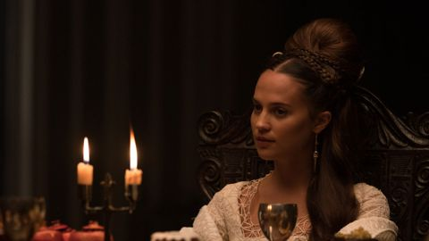 | The Green Knight (2021) | 6.5 | 135.262 | Adventure, Drama, Fantasy | 128 | The Green Knight je avantura utemeljena na bezvremenskoj legendi kralja Arthura, a govori o bezobzirnom i tvrdoglavom nećaku kralja Arthura, Gawainu, koji odlazi u potragu za divovskim zelenim... | Zemlja: SAD
Redatelj: David Lowery
Scenarij: David Lowery, The Gawain Poet
Glumci: Dev Patel, Alicia Vikander, Joel Edgerton, Sarita Choudhury |
| ned 22.11. | 02:20 | CineStar Action | Revolver | 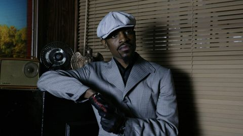 | Revolver (2005) | 6.3 | 110.505 | Action, Crime, Drama | 116 | Poslije sedam godina u zatvoru iskusni kockar Jake Green konačno izlazi na slobodu. U zatvoru je savladao nove prevarantske trikove kako bi se osvetio čovjeku koji ga je strpao iza rešetaka. | Zemlja: Ujedinjeno Kraljevstvo
Redatelj: Guy Ritchie
Scenarij: Luc Besson, Guy Ritchie
Glumci: Jason Statham, Ray Liotta, Vincent Pastore, André Benjamin |
| ned 22.11. | 02:45 | STAR Movies | Loši Momci Zauvijek | 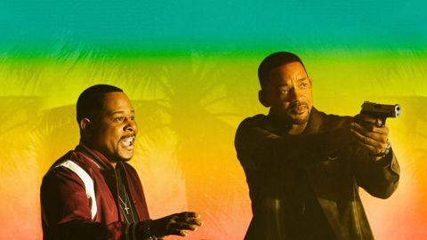 | Bad Boys for Life (2020) ? | 6.5 | 200.849 | Action, Comedy, Crime | 130 | Detektivi iz Miamija, Mike Lowrey i Marcus Burnett, moraju se suočiti s majkom i sinom, parom narkobosova koji osvetoljubivo pustoše njihov grad. | Zemlja: Meksiko
Redatelj: Adil El Arbi, Bilall Fallah
Scenarij: Peter Craig, Joe Carnahan, Chris Bremner, George Gallo
Glumci: Will Smith, Martin Lawrence, Vanessa Hudgens, Alexander Ludwig |
| ned 22.11. | 02:55 | STAR Movies | Zločesti Dečki Zauvijek | | Bad Boys for Life (2020) | 6.5 | 200.849 | Action, Comedy, Crime | 120 | Detektivi iz Miamija, Mike Lowrey i Marcus Burnett, moraju se suočiti s majkom i sinom, parom narkobosova koji osvetoljubivo pustoše njihov grad. | Redatelj: Adil El Arbi, Bilall Fallah
Scenarij: Peter Craig, Joe Carnahan, Chris Bremner, George Gallo
Glumci: Will Smith, Martin Lawrence, Vanessa Hudgens, Alexander Ludwig |
| ned 22.11. | 03:15 | Viasat Kino | Scott Pilgrim protiv svijeta |  | Scott Pilgrim vs. the World (2010) | 7.5 | 503.309 | Action, Comedy, Fantasy | 140 | Da bi osvojio srce svoje nove djevojke, Scott Pilgrim mora pobijediti njezinih sedam bivših momaka. | Zemlja: SAD
Redatelj: Edgar Wright
Scenarij: Michael Bacall, Edgar Wright, Bryan Lee O'Malley
Glumci: Michael Cera, Mary Elizabeth Winstead, Kieran Culkin, Chris Evans |
| ned 22.11. | 04:25 | Kino TV | Nigdje posebno | | Nowhere Special (2020) | 7.4 | 9.995 | Drama | 96 | Inspiriran istinitim događajima, u drami "Nigdje posebno" glavnu je ulogu ostvario James Norton kao 35-godišnji čistač prozora John koji je život u potpunosti posvetio odgoju vlastitog sina nakon... | Zemlja: Italija
Redatelj: Uberto Pasolini
Scenarij: Uberto Pasolini
Glumci: James Norton, Daniel Lamont, Eileen O'Higgins, Valerie O'Connor |
| ned 22.11. | 06:00 | CineStar 1 | Istakni se | 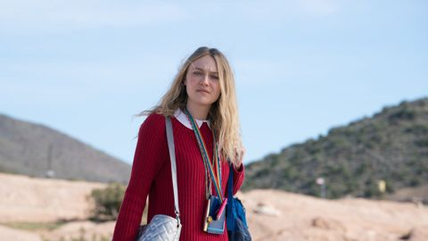 | Please Stand By (2017) | 6.7 | 17.549 | Comedy, Drama | 110 | Izvršni producent filma Juno i producent filma Ni na nebu, ni na zemlji donose uzbudljivu dramu s Dakotom Fanning, nominiranom za nagradu Oscar®, Toni Collette i Alice Eve u glavnim ulogama. | Zemlja: SAD
Redatelj: Ben Lewin
Scenarij: Michael Golamco
Glumci: Dakota Fanning, Alice Eve, Toni Collette, Lexi Aaron |
| ned 22.11. | 06:01 | Kino TV | Izdajnik | | Il traditore (2019) | 7.1 | 14.907 | Biography, Crime, Drama | 149 | Veteran talijanskog filma Marco Bellocchio, poznat po radikalnim filmovima kojima je desetljećima unosio pomutnju u talijansku kinematografiju nije nimalo usporio u svojim poznim godinama. | Zemlja: Italija
Redatelj: Marco Bellocchio
Scenarij: Marco Bellocchio, Valia Santella, Ludovica Rampoldi, Francesco Piccolo
Glumci: Pierfrancesco Favino, Maria Fernanda Cândido, Fabrizio Ferracane, Fausto Russo Alesi |
| ned 22.11. | 06:55 | AMC | Iluzionist | | The Illusionist (2006) | 7.5 | 408.276 | Drama, Fantasy, Mystery | 100 | Na početku 19. stoljeća u Beču, iluzionist Eisenheim ponovno susreće svoju davnu ljubav, Sophie. | Zemlja: SAD
Redatelj: Neil Burger
Scenarij: Neil Burger, Steven Millhauser
Glumci: Edward Norton, Paul Giamatti, Jessica Biel, Rufus Sewell |
| ned 22.11. | 07:17 | HRT 1 | Filmovi Ave Gardner: Vitezovi Okruglog stola |  | Knights of the Round Table (1953) ? | 6.2 | 4.598 | Action, Adventure, Drama | 123 | Film prati legendu o kralju Arthuru i njegovom najboljem vitezu Lancelotu koji zajednički ujedinjuju Britaniju. | Zemlja: SAD
Redatelj: Richard Thorpe
Scenarij: Talbot Jennings, Jan Lustig, Noel Langley, Thomas Malory
Glumci: Robert Taylor, Ava Gardner, Mel Ferrer, Anne Crawford |
| ned 22.11. | 07:35 | CineStar Action | Tajna jezera Devil's Den | | Devil's Knot (2013) | 6.1 | 26.003 | Biography, Crime, Drama | 130 | Film Tajna jezera Devil's Den snimljen je prema istinitim događajima iz 1993. g. i istoimenoj knjizi Mare Leveritt. | Zemlja: SAD
Redatelj: Atom Egoyan
Scenarij: Paul Harris Boardman, Scott Derrickson, Mara Leveritt
Glumci: Colin Firth, Reese Witherspoon, Dane DeHaan, Mireille Enos |
| ned 22.11. | 07:50 | STAR Movies | Matrix Revolutions | 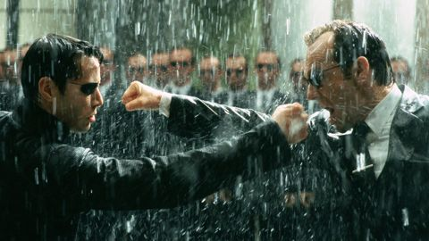 | The Matrix Revolutions (2003) | 6.8 | 582.999 | Action, Sci-Fi | 155 | Ljudska naseobina Zion brani se od masovne invazije strojeva dok se Neo bori za okončanje rata na drugom frontu, a istovremeno se suprotstavlja i odmetnutom agentu Smithu. | Zemlja: SAD
Redatelj: Lana Wachowski, Lilly Wachowski
Scenarij: Lilly Wachowski, Lana Wachowski
Glumci: Keanu Reeves, Laurence Fishburne, Carrie-Anne Moss, Hugo Weaving |
| ned 22.11. | 07:55 | Viasat Kino | Dvije sestre za kralja | | The Other Boleyn Girl (2008) | 6.7 | 128.688 | Biography, Drama, History | 145 | Ova povijesna drama prati oštru borbu sestara Mary (Scarlett Johansson) i Anne Boleyn (Natalie Portman), dok se trude steći naklonost kralja Henrika VIII. | Zemlja: Ujedinjeno Kraljevstvo
Redatelj: Justin Chadwick
Scenarij: Peter Morgan, Philippa Gregory
Glumci: Natalie Portman, Scarlett Johansson, Eric Bana, Jim Sturgess |
| ned 22.11. | 08:30 | Kino TV | Ima neka tajna veza | | The Only Living Boy in New York (2017) | 6.4 | 20.346 | Drama | 90 | Thomas Webb (Callum Turner), sin izdavača i njegove supruge umjetnice, upravo je dobio fakultetsku diplomu i pokušava pronaći svoje mjesto pod suncem New Yorka. | Zemlja: SAD
Redatelj: Marc Webb
Scenarij: Allan Loeb
Glumci: Callum Turner, Kate Beckinsale, Pierce Brosnan, Cynthia Nixon |
| ned 22.11. | 08:35 | AMC | Zmija u orlovoj sjeni |  | Se ying diu sau (1978) ? | 7.3 | 14.446 | Action, Comedy | 95 | Siročetu, koji je odrastao u školi kung fua gdje ga tretiraju kao potrčka i metu za vježbanje učenika, život se promijeni nakon što pomogne putujućem prosjaku. | Zemlja: Hong Kong
Redatelj: Yuen Woo-Ping
Scenarij: Chi Yuan Hsi, Huo An Hsi, Lung Hsiao, See-Yuen Ng
Glumci: Jackie Chan, Siu Tin Yuen, Dean Shek, Roy Horan |
| ned 22.11. | 09:00 | CineStar Fantasy | Veliko plavetnilo | | Le grand bleu (1988) | 7.5 | 59.667 | Adventure, Drama, Sport | 145 | Enzo i Jacques već se dugo poznaju. Njihovo je prijateljsko započelo u njihovim dječačkim danima na Sredozemlju. | Zemlja: Francuska
Redatelj: Luc Besson
Scenarij: Luc Besson, Robert Garland, Marilyn Goldin, Jacques Mayol
Glumci: Jean-Marc Barr, Jean Reno, Rosanna Arquette, Sergio Castellitto |
| ned 22.11. | 09:00 | CineStar Comedy | Ostvareni snovi |  | Dreamer: Inspired by a True Story (2005) | 6.9 | 14.965 | Drama, Family, Sport | 110 | Ben Crane (K. Russell) nekada sjajni jahač a danas njegov trenerski talent donosi bogatstvo drugima. | Zemlja: SAD
Redatelj: John Gatins
Scenarij: John Gatins
Glumci: Kurt Russell, Dakota Fanning, Kris Kristofferson, Elisabeth Shue |
| ned 22.11. | 09:35 | CineStar 1 | Navijačice | | Poms (2019) | 6.2 | 8.364 | Comedy, Drama, Sport | 110 | Od tvoraca filmskih uspješnica Zločeste mame i Klub zadovoljnih žena. Komedija koja govori o tome da nikada nije kasno da ostvarite svoj san. | Zemlja: SAD
Redatelj: Zara Hayes
Scenarij: Zara Hayes, Shane Atkinson
Glumci: Diane Keaton, Jacki Weaver, Pam Grier, Charlie Tahan |
| ned 22.11. | 09:45 | CineStar Action | G.I. Jane |  | G.I. Jane (1997) | 6.1 | 93.379 | Action, Drama, War | 140 | Usprkos statusu vojnog veterana Jordan O'Neil (Demi Moore) nema pravo sudjelovanja u Zaljevskom ratu. | Zemlja: SAD
Redatelj: Ridley Scott
Scenarij: Danielle Alexandra, David Twohy
Glumci: Demi Moore, Viggo Mortensen, Anne Bancroft, Jason Beghe |
| ned 22.11. | 10:25 | STAR Movies | Ona je prava | 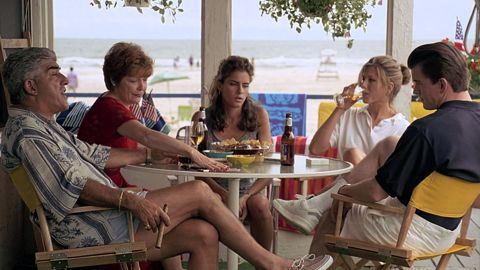 | She's the One (1996) | 6.0 | 20.340 | Comedy, Drama, Romance | 130 | Ljubavni životi dva brata, Mickeyja i Francisca, međusobno se povezuju dok Francis vara svoju suprugu s Mickeyjevom bivšom djevojkom, dok se Mickey impulzivno udaje za nepoznatu ženu. | Zemlja: SAD
Redatelj: Edward Burns
Scenarij: Edward Burns
Glumci: Edward Burns, Michael McGlone, Jennifer Aniston, Cameron Diaz |
| ned 22.11. | 11:25 | CineStar 1 | 96 sati: U bijegu | | Taken 3 (2014) | 6.0 | 217.635 | Action, Crime, Thriller | 125 | Miroljubivi obiteljski čovjek Bryan Mills (bivši agent zanimljive i bogate prošlosti) ne bježi više od najgorih zlikovaca današnjice, nego od ujedinjenih policijskih snaga Los Angelesa, CIA-je i... | Zemlja: SAD
Redatelj: Olivier Megaton
Scenarij: Luc Besson, Robert Mark Kamen
Glumci: Liam Neeson, Maggie Grace, Forest Whitaker, Dougray Scott |
| ned 22.11. | 11:27 | HRT 2 | Krimi matineja: Povijesti slučajeva | 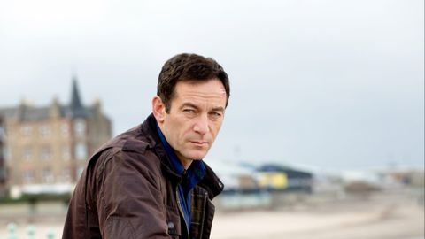 | Hattie (2011) | 6.8 | 767 | Drama | 118 | When Will There Be Good News? Part 1+2. Jackson istražuje nestanak mlade žene, što ga vodi u mrežu prijevara i izdaja. Njegova neumoljiva potraga dovodi ga licem u lice s opasnim osobama, ali i neočekivanim saveznicima. | Zemlja: Ujedinjeno Kraljevstvo
Redatelj: Dan Zeff
Scenarij: Stephen Russell, Andy Merriman
Glumci: Jason Isaacs, Amanda Abbington, Zawe Ashton, Millie Innes |
| ned 22.11. | 11:29 | HRT 2 | Krimi matineja: Povijesti slučajeva | | Hattie (2011) | 6.8 | 767 | Drama | 116 | When Will There Be Good News? Part 1+2. Jackson istražuje nestanak mlade žene, što ga vodi u mrežu prijevara i izdaja. Njegova neumoljiva potraga dovodi ga licem u lice s opasnim osobama, ali i neočekivanim saveznicima. | Zemlja: Ujedinjeno Kraljevstvo
Redatelj: Dan Zeff
Scenarij: Stephen Russell, Andy Merriman
Glumci: Jason Isaacs, Amanda Abbington, Zawe Ashton, Millie Innes |
| ned 22.11. | 11:50 | AMC | Spajdermen 2 | | Spider-Man 2 (2004) | 7.5 | 815.169 | Action, Adventure, Sci-Fi | 120 | Spider-Man 2. Učenik i fotograf Peter Parker želi se odreći svog postojanja kao superjunaka i konačno osvojiti svoju veliku ljubav Mary Jane. Ali ona se odmiče od njega. | Zemlja: SAD
Redatelj: Sam Raimi
Scenarij: Stan Lee, Steve Ditko, Alfred Gough, Miles Millar
Glumci: Tobey Maguire, Kirsten Dunst, James Franco, Alfred Molina |
| ned 22.11. | 12:00 | Kino TV | Stroj |  | The Machine (2013) | 6.0 | 33.108 | Action, Drama, Sci-Fi | 120 | Dva inženjera umjetne inteligencije žele stvoriti prvo samosvjesno biće umjetne inteligencije.Inženjer veteran smatra da tako može pomoći svojoj bolesnoj kćeri čak i ako to znači financiranje iz... | Zemlja: Ujedinjeno Kraljevstvo
Redatelj: Caradog W. James
Scenarij: Caradog W. James
Glumci: Caity Lotz, Toby Stephens, Sam Hazeldine, Denis Lawson |
| ned 22.11. | 12:15 | CineStar Comedy | 25 km/h |  | 25 km/h (2018) | 7.2 | 6.640 | Adventure, Comedy, Drama | 115 | Razdvojena braća ponovno se ujedinjuju na sprovodu svog oca. Ponovni susret obradovat će ih i natjerati da promisle o svom životu i djetinjstvu. | Zemlja: Njemačka
Redatelj: Markus Goller
Scenarij: Oliver Ziegenbalg
Glumci: Lars Eidinger, Bjarne Mädel, Sandra Hüller, Franka Potente |
| ned 22.11. | 12:25 | CineStar 2 | Utrka | | Race (2016) | 7.1 | 44.503 | Biography, Drama, Sport | 140 | Temeljen na istinitim događajima i životu Jessea Owensa, slavnog američkog atletičara, legendarnog po svom četverostrukom trijumfu na Olimpijskim igrama u Berlinu, 1936. godine. | Zemlja: Kanada
Redatelj: Stephen Hopkins
Scenarij: Joe Shrapnel, Anna Waterhouse
Glumci: Stephan James, Jason Sudeikis, Jeremy Irons, Carice van Houten |
| ned 22.11. | 12:45 | Viasat Kino | Sjećanja jedne gejše |  | Memoirs of a Geisha (2005) | 7.3 | 174.878 | Drama, Romance | 180 | Žena otkriva kako je nadvladala svoje korijene iz ribarskog sela i postala jedna od najslavnijih gejši u Japanu. | Zemlja: SAD
Redatelj: Rob Marshall
Scenarij: Robin Swicord, Arthur Golden
Glumci: Ken Watanabe, Ziyi Zhang, Michelle Yeoh, Gong Li |
| ned 22.11. | 13:30 | CineStar 1 | Ferrari | | Ferrari (2023) | 6.4 | 69.965 | Biography, Drama, History | 145 | Ljeto je 1957. Nakon spektakla Formule 1, bivši je vozač Enzo Ferrari u krizi. Bankrot prijeti tvornici koju su on i njegova supruga Laura od temelja izgradili prije deset godina. | Zemlja: SAD
Redatelj: Michael Mann
Scenarij: Troy Kennedy Martin, Brock Yates
Glumci: Adam Driver, Penélope Cruz, Shailene Woodley, Sarah Gadon |
| ned 22.11. | 14:10 | CineStar Comedy | Kauboji | | Kauboji (2013) | 7.0 | 1.179 | Comedy, Drama | 110 | "Život smije biti dosadan, ali vestern nikada!" moto je skupine autsajdera koji radeći kazališnu predstavu, na suptilan način spajaju oporost provincije i univerzalnu poetiku vestern zvuka i... | Zemlja: Hrvatska
Redatelj: Tomislav Mrsic
Scenarij: Sasa Anocic, Tomislav Mrsic
Glumci: Saša Anočić, Živko Anočić, Matija Antolić, Hrvoje Barišić |
| ned 22.11. | 14:30 | Nova TV | Nanny McPhee: Povratak čudesne dadilje | 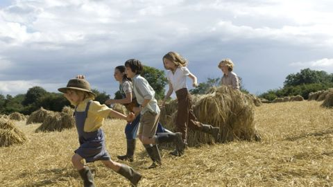 | Nanny McPhee and the Big Bang (2010) | 6.1 | 40.819 | Comedy, Family, Fantasy | 130 | U najnovijoj avanturi, Nanny McPhee dolazi pred vrata mlade majke Isabel Green (Maggie Gyllenhaal) koja pokušava voditi obiteljsku farmu dok je njezin muž (Ewan McGregor) na ratištu. | Zemlja: Francuska
Redatelj: Susanna White
Scenarij: Emma Thompson, Christianna Brand
Glumci: Emma Thompson, Maggie Gyllenhaal, Oscar Steer, Ralph Fiennes |
| ned 22.11. | 14:30 | STAR Movies | Priča o rođenju Isusovom | | The Nativity Story (2006) | 6.8 | 12.319 | Adventure, Drama, Family | 125 | Drama prati Mariju i Josipa na njihovu putovanju u Betlehem, gdje će se roditi Isus. | Zemlja: SAD
Redatelj: Catherine Hardwicke
Scenarij: Mike Rich
Glumci: Keisha Castle-Hughes, Oscar Isaac, Hiam Abbass, Shaun Toub |
| ned 22.11. | 14:35 | Nova TV | Nanny McPhee: Povratak čudesne dadilje | | Nanny McPhee and the Big Bang (2010) | 6.1 | 40.819 | Comedy, Family, Fantasy | 125 | U najnovijoj avanturi, Nanny McPhee dolazi pred vrata mlade majke Isabel Green (Maggie Gyllenhaal) koja pokušava voditi obiteljsku farmu dok je njezin muž (Ewan McGregor) na ratištu. | Zemlja: Francuska
Redatelj: Susanna White
Scenarij: Emma Thompson, Christianna Brand
Glumci: Emma Thompson, Maggie Gyllenhaal, Oscar Steer, Ralph Fiennes |
| ned 22.11. | 14:35 | STAR Movies | Priča o rođenju Isusovom | | The Nativity Story (2006) | 6.8 | 12.319 | Adventure, Drama, Family | 130 | Drama prati Mariju i Josipa na njihovu putovanju u Betlehem, gdje će se roditi Isus. | Zemlja: SAD
Redatelj: Catherine Hardwicke
Scenarij: Mike Rich
Glumci: Keisha Castle-Hughes, Oscar Isaac, Hiam Abbass, Shaun Toub |
| ned 22.11. | 15:45 | Viasat Kino | Mali vojnici | 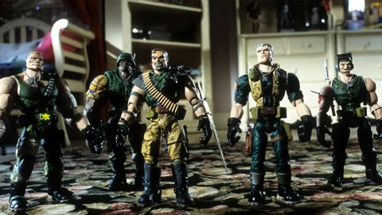 | Small Soldiers (1998) | 6.3 | 111.970 | Action, Adventure, Comedy | 145 | Govorne tehnološke igračke poboljšane vojnim mikročipovima ubrzo počinju preozbiljno shvaćati svoje borbeno programiranje u ovoj satiričnoj akcijskoj komediji redatelja "Gremlina" Joea Dantea. | Zemlja: SAD
Redatelj: Joe Dante
Scenarij: Gavin Scott, Adam Rifkin, Ted Elliott, Terry Rossio
Glumci: Kirsten Dunst, Gregory Smith, Jay Mohr, Phil Hartman |
| ned 22.11. | 16:00 | CineStar Comedy | Ljubavni jackpot | | The Rebound (2009) | 6.3 | 52.927 | Comedy, Romance | 95 | Dobitnica Oscara Catherine Zeta-Jones ("Chicago") i zvijezda hit komedije "Mamurluk", Justin Bartha glume glavne uloge u ovoj romantičnoj komediji smještenoj u New Yorku. | Zemlja: SAD
Redatelj: Bart Freundlich
Scenarij: Bart Freundlich
Glumci: Catherine Zeta-Jones, Justin Bartha, Andrew Cherry, Kelly Gould |
| ned 22.11. | 16:10 | CineStar Action | Transporter 3 |  | Transporter 3 (2008) | 6.1 | 187.980 | Action, Thriller | 120 | Frank Martin navlači rukavice za vožnju kako bi odvezao Valentinu, otetu kćer ukrajinskog vladinog dužnosnika, iz Marseillesa u Odessu na Crnom moru. | Zemlja: Francuska
Redatelj: Olivier Megaton
Scenarij: Luc Besson, Robert Mark Kamen
Glumci: Jason Statham, Robert Knepper, François Berléand, Natalya Rudakova |
| ned 22.11. | 16:35 | HRT 3 | Svi za Eldorado |  | Paint Your Wagon (1969) | 6.6 | 16.486 | Comedy, Musical, Western | 151 | Negdje u Kaliforniji, oko 1840. godine. Pustolov Ben Rumson (L. Marvin) krene u potragu za zlatom s partnerom Pardnerom (C. Eastwood), romantičnim farmerom kojemu spasi život. | Zemlja: SAD
Redatelj: Joshua Logan
Scenarij: Alan Jay Lerner, Paddy Chayefsky
Glumci: Lee Marvin, Clint Eastwood, Jean Seberg, Harve Presnell |
| ned 22.11. | 16:35 | STAR Movies | Superman: Povratak | | Superman Returns (2006) | 6.1 | 305.778 | Action, Adventure, Sci-Fi | 205 | Superman se ponovno pojavljuje nakon dugog izbivanja, ali ga izaziva stari neprijatelj koji koristi kriptonsku tehnologiju da bi zavladao svijetom. | Redatelj: Bryan Singer
Scenarij: Michael Dougherty, Dan Harris, Bryan Singer, Jerry Siegel
Glumci: Brandon Routh, Kate Bosworth, Kevin Spacey, James Marsden |
| ned 22.11. | 16:45 | STAR Movies | Superman: Povratak | 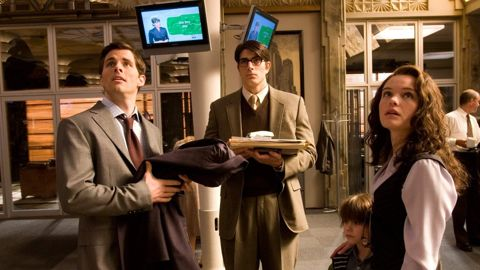 | Superman Returns (2006) | 6.1 | 305.778 | Action, Adventure, Sci-Fi | 195 | Superman se ponovno pojavljuje nakon dugog izbivanja, ali ga izaziva stari neprijatelj koji koristi kriptonsku tehnologiju da bi zavladao svijetom. | Zemlja: SAD
Redatelj: Bryan Singer
Scenarij: Michael Dougherty, Dan Harris, Bryan Singer, Jerry Siegel
Glumci: Brandon Routh, Kate Bosworth, Kevin Spacey, James Marsden |
| ned 22.11. | 16:45 | RTL | Twister 2 | | Twisters (2024) | 6.5 | 202.634 | Action, Adventure, Thriller | 135 | Kate Carter (Daisy Edgar-Jones) radi u Oklahomi s timom lovaca na oluje među kojima je Javi (Anthony Ramos). | Zemlja: SAD
Redatelj: Lee Isaac Chung
Scenarij: Mark L. Smith, Joseph Kosinski, Michael Crichton, Anne-Marie Martin
Glumci: Daisy Edgar-Jones, Glen Powell, Anthony Ramos, Maura Tierney |
| ned 22.11. | 17:00 | RTL | Twister 2 | | Twisters (2024) | 6.5 | 202.634 | Action, Adventure, Thriller | 120 | Kate Carter (Daisy Edgar-Jones) radi u Oklahomi s timom lovaca na oluje među kojima je Javi (Anthony Ramos). | Zemlja: SAD
Redatelj: Lee Isaac Chung
Scenarij: Mark L. Smith, Joseph Kosinski, Michael Crichton, Anne-Marie Martin
Glumci: Daisy Edgar-Jones, Glen Powell, Anthony Ramos, Maura Tierney |
| ned 22.11. | 17:00 | AMC | Totalni opoziv | 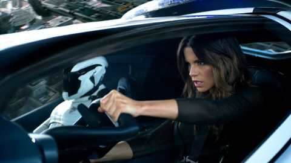 | Total Recall (2012) | 6.2 | 278.799 | Action, Adventure, Sci-Fi | 105 | Kako bi pobjegao od kolotečine, tvornički radnik Douglas Quaid poželi imati sjećanja špijuna. | Zemlja: SAD
Redatelj: Len Wiseman
Scenarij: Kurt Wimmer, Mark Bomback, Ronald Shusett, Dan O'Bannon
Glumci: Colin Farrell, Kate Beckinsale, Jessica Biel, Bryan Cranston |
| ned 22.11. | 17:35 | CineStar Comedy | Obitelj za Božić | | Family for Christmas (2015) | 6.3 | 2.993 | Drama, Family, Fantasy | 90 | Nakon razgovora s muškarcem koji je glumio Djeda Mraza na domjenku u njezinom uredu, žena se probudi i shvati da se udala za svoju ljubav iz djetinjstva i da imaju dvoje djece te počinje... | Zemlja: Kanada
Redatelj: Amanda Tapping
Scenarij: Bryar Freed
Glumci: Lacey Chabert, Tyron Leitso, Milli Wilkinson, Audrey Smallman |
| ned 22.11. | 17:55 | CineStar 1 | Prijatelji |  | Our Friend (2019) | 7.3 | 18.654 | Drama, Romance | 140 | Pravi prijatelj je uvijek tu, kako u dobru, tako i u zlu. | Zemlja: SAD
Redatelj: Gabriela Cowperthwaite
Scenarij: Brad Ingelsby, Matthew Teague
Glumci: Jason Segel, Isabella Kai, Violet McGraw, Dakota Johnson |
| ned 22.11. | 18:10 | Viasat Kino | Dečki mog života | 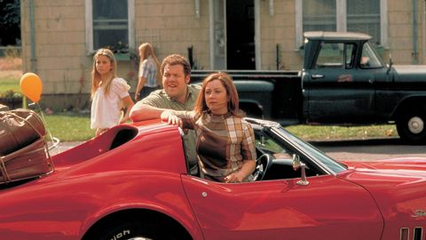 | Riding in Cars with Boys (2001) | 6.5 | 32.342 | Biography, Comedy, Drama | 170 | Snovi Drew Barrymore o tome da postane spisateljica nikad se nisu ostvarili zbog neplanirane trudnoće. No, dok podiže sina, smogne hrabrosti da se iznova posveti svojim snovima. | Zemlja: SAD
Redatelj: Penny Marshall
Scenarij: Beverly Donofrio, Morgan Ward
Glumci: Drew Barrymore, Steve Zahn, Brittany Murphy, James Woods |
| ned 22.11. | 18:20 | CineStar 2 | Radioaktivna | | Radioactive (2019) | 6.3 | 24.741 | Biography, Drama, Romance | 120 | Roadioaktivna donosi istinitu priču o znanstvenici rođenoj 1867. u Varšavi koja je u Francusku došla studirati i ondje upoznala budućeg supruga. | Zemlja: Ujedinjeno Kraljevstvo
Redatelj: Marjane Satrapi
Scenarij: Jack Thorne, Lauren Redniss
Glumci: Rosamund Pike, Sam Riley, Simon Russell Beale, Katherine Parkinson |
| ned 22.11. | 20:00 | CineStar Action | Plaćenica | | The Protégé (2021) | 6.1 | 43.571 | Action, Crime, Thriller | 125 | Anna (Maggie Q) je najvještiji plaćeni ubojica na svijetu – kao dijete ju je spasio legendarni Moody (Samuel L. Jackson) i polako učio "obiteljskom poslu". | Zemlja: SAD
Redatelj: Martin Campbell
Scenarij: Richard Wenk
Glumci: Maggie Q, Michael Keaton, Samuel L. Jackson, David Rintoul |
| ned 22.11. | 20:00 | STAR Movies | Troje za tango |  | Three to Tango (1999) | 6.1 | 21.036 | Comedy, Romance | 125 | Zvijezda Prijatelja Matthew Perry glumi homoseksualca kako bi dobio priliku za životnu karijeru – ali zbog te bi prevare mogao izgubiti ženu svojih snova u neobičnoj romantičnoj komediji. | Zemlja: Australija
Redatelj: Damon Santostefano
Scenarij: Rodney Patrick Vaccaro, Aline Brosh McKenna
Glumci: Matthew Perry, Neve Campbell, Dylan McDermott, Oliver Platt |
| ned 22.11. | 20:15 | Kino TV | Berlin Alexanderplatz |  | Berlin Alexanderplatz (2020) | 6.9 | 4.401 | Crime, Drama, Thriller | 225 | Francis je preživio svoj bijeg iz zapadne Afrike. Kada se probudi na plaži na samom jugu Europe odlučan je u nakani da od sada živi normalnim, skromnim životom. | Zemlja: Njemačka
Redatelj: Burhan Qurbani
Scenarij: Martin Behnke, Burhan Qurbani, Alfred Döblin
Glumci: Welket Bungué, Jella Haase, Albrecht Schuch, Joachim Król |
| ned 22.11. | 20:30 | CineStar Fantasy | Riddick: Vladar tame |  | Riddick (2013) | 6.4 | 188.754 | Action, Adventure, Sci-Fi | 130 | Nakon što ga Nekrozori izdaju i ostave da umre na zabačenom planetu, Riddick se bori za svoj život s izvanzemaljskim grabežljivcima te postaje snažniji i opasniji nego ikad prije. | Zemlja: Kanada
Redatelj: David Twohy
Scenarij: David Twohy, Jim Wheat, Ken Wheat
Glumci: Vin Diesel, Jordi Mollà, Matt Nable, Katee Sackhoff |
| ned 22.11. | 20:45 | CineStar Comedy | Zavedi me ako možeš |  | Long Shot (2019) | 6.8 | 130.304 | Comedy, Romance | 120 | Od kreatora urnebesnih komedija: Susjedi iz pakla i Zalomilo se! Dobitnica nagrade Oscar® Charlize Theron i Seth Rogen zajedno u netipičnoj romantičnoj komediji koja unosi romansu u svijet politike. | Zemlja: SAD
Redatelj: Jonathan Levine
Scenarij: Dan Sterling, Liz Hannah
Glumci: Charlize Theron, Seth Rogen, O'Shea Jackson Jr., Andy Serkis |
| ned 22.11. | 21:00 | Viasat Kino | Čovjek kojeg nije bilo | 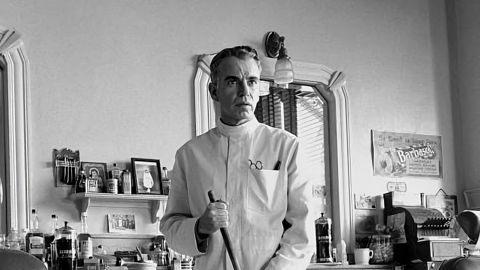 | The Man Who Wasn't There (2001) | 7.5 | 121.690 | Crime, Drama | 165 | Postavljena u tihi gradić 40-tih godina filmska zvijezda braće Coen, Billy Bob Thornton, glumi skromnog brijača koji sumnja da ga supruga Doris (Frances McDormand) vara sa šefom. | Zemlja: SAD
Redatelj: Joel Coen, Ethan Coen
Scenarij: Joel Coen, Ethan Coen
Glumci: Billy Bob Thornton, Frances McDormand, James Gandolfini, Michael Badalucco |
| ned 22.11. | 21:09 | HRT 1 | Dan Obuke | | Training Day (2001) | 7.8 | 530.385 | Crime, Drama, Thriller | 128 | Jake Hoyt (E. Hawke) mladi je policijski detektiv kojemu se smiješi uspješna karijera u losanđeleskom Odjelu za narkotike. | Redatelj: Antoine Fuqua
Scenarij: David Ayer
Glumci: Denzel Washington, Ethan Hawke, Scott Glenn, Tom Berenger |
| ned 22.11. | 21:16 | HRT 1 | Dan obuke | 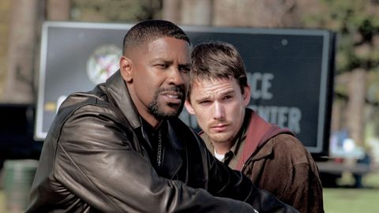 | Training Day (2001) | 7.8 | 530.385 | Crime, Drama, Thriller | 129 | Jake Hoyt (E. Hawke) mladi je policijski detektiv kojemu se smiješi uspješna karijera u losanđeleskom Odjelu za narkotike. | Zemlja: SAD
Redatelj: Antoine Fuqua
Scenarij: David Ayer
Glumci: Denzel Washington, Ethan Hawke, Scott Glenn, Tom Berenger |
| ned 22.11. | 22:00 | AMC | Terminator: Spasenje | | Terminator Salvation (2009) | 6.5 | 396.959 | Action, Adventure, Sci-Fi | 100 | John Connor (Christian Bale) pokušava pokrenuti otpor protiv mehanizacije i strojeva. | Zemlja: SAD
Redatelj: McG
Scenarij: John Brancato, Michael Ferris
Glumci: Christian Bale, Sam Worthington, Anton Yelchin, Moon Bloodgood |
| ned 22.11. | 22:05 | CineStar Action | Građani opasnih razmjera |  | Law Abiding Citizen (2009) | 7.4 | 351.576 | Action, Crime, Drama | 120 | Proslavljeni redatelj F.Gary Gray ("Pregovarač") vraća se u punoj snazi s novim akcijskim trilerom – Pravda za sve – u kojoj napetost ne prestaje niti jednog trenutka. | Zemlja: SAD
Redatelj: F. Gary Gray
Scenarij: Kurt Wimmer
Glumci: Jamie Foxx, Gerard Butler, Colm Meaney, Bruce McGill |
| ned 22.11. | 22:10 | CineStar 1 | Pad Anđela |  | Angel Has Fallen (2019) | 6.4 | 125.349 | Action, Thriller | 135 | U ovom je nastavku agentu Banningu namješten pokušaj atentata na predsjednika iz čega će morati izvući vlastitu agenciju i FBI dok pokušava otkriti stvarnu prijetnju. | Zemlja: SAD
Redatelj: Ric Roman Waugh
Scenarij: Robert Mark Kamen, Matt Cook, Ric Roman Waugh, Creighton Rothenberger
Glumci: Gerard Butler, Morgan Freeman, Nick Nolte, Danny Huston |
| ned 22.11. | 22:15 | RTL | Čuvari zakona |  | U.S. Marshals (1998) | 6.6 | 121.899 | Action, Crime, Thriller | 135 | Zrakoplov koji je prevozio zatvorenike sruši se u divljini Illinoisa. | Zemlja: SAD
Redatelj: Stuart Baird
Scenarij: Roy Huggins, John Pogue
Glumci: Tommy Lee Jones, Wesley Snipes, Joe Pantoliano, Robert Downey Jr. |
| ned 22.11. | 22:20 | RTL | Čuvari zakona | | U.S. Marshals (1998) | 6.6 | 121.899 | Action, Crime, Thriller | 175 | Zrakoplov koji je prevozio zatvorenike sruši se u divljini Illinoisa. | Zemlja: SAD
Redatelj: Stuart Baird
Scenarij: Roy Huggins, John Pogue
Glumci: Tommy Lee Jones, Wesley Snipes, Joe Pantoliano, Robert Downey Jr. |
| ned 22.11. | 22:35 | Nova TV | James Bond 007: Casino Royale |  | Casino Royale (2006) | 8.0 | 760.704 | Action, Adventure, Thriller | 160 | James Bond (Daniel Craig) novi je agent u timu MI 6. Nakon što je stekao status 00 agenta i dobio dozvolu za ubojstvo, kreće u svoju prvu misiju na Bahame gdje se u kockarskoj igri mora... | Zemlja: Češka
Redatelj: Martin Campbell
Scenarij: Neal Purvis, Robert Wade, Paul Haggis, Ian Fleming
Glumci: Daniel Craig, Eva Green, Mads Mikkelsen, Judi Dench |
| ned 22.11. | 22:40 | CineStar Fantasy | Slagalica strave X |  | Saw X (2023) | 6.6 | 101.849 | Crime, Drama, Horror | 130 | John Kramer se vratio. | Zemlja: SAD
Redatelj: Kevin Greutert
Scenarij: Pete Goldfinger, Josh Stolberg
Glumci: Tobin Bell, Shawnee Smith, Synnøve Macody Lund, Steven Brand |
| ned 22.11. | 22:45 | CineStar Comedy | Danny Collins |  | Danny Collins (2015) | 7.0 | 35.326 | Comedy, Drama, Music | 110 | Danny Collins (Al Pacino) ostarjeli je rocker koji ni u sedmom desetljeću ne odustaje od svog specifičnog načina života. | Zemlja: SAD
Redatelj: Dan Fogelman
Scenarij: Dan Fogelman
Glumci: Al Pacino, Annette Bening, Jennifer Garner, Bobby Cannavale |
| ned 22.11. | 22:45 | Nova TV | James Bond 007: Casino Royale | | Casino Royale (2006) | 8.0 | 760.704 | Action, Adventure, Thriller | 155 | James Bond (Daniel Craig) novi je agent u timu MI 6. Nakon što je stekao status 00 agenta i dobio dozvolu za ubojstvo, kreće u svoju prvu misiju na Bahame gdje se u kockarskoj igri mora... | Zemlja: Češka
Redatelj: Martin Campbell
Scenarij: Neal Purvis, Robert Wade, Paul Haggis, Ian Fleming
Glumci: Daniel Craig, Eva Green, Mads Mikkelsen, Judi Dench |
| ned 22.11. | 23:07 | HRT 2 | Povijesti slučajeva | | Hattie (2011) | 6.8 | 767 | Drama | 110 | When Will There Be Good News? Part 1+2. Jackson istražuje nestanak mlade žene, što ga vodi u mrežu prijevara i izdaja. Njegova neumoljiva potraga dovodi ga licem u lice s opasnim osobama, ali i neočekivanim saveznicima. | Zemlja: Ujedinjeno Kraljevstvo
Redatelj: Dan Zeff
Scenarij: Stephen Russell, Andy Merriman
Glumci: Jason Isaacs, Amanda Abbington, Zawe Ashton, Millie Innes |
| ned 22.11. | 23:40 | AMC | Brže | 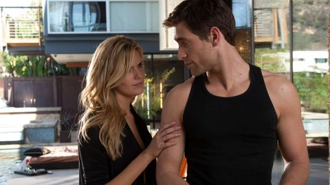 | Faster (2010) | 6.4 | 118.213 | Action, Crime, Drama | 95 | Američki akcijski triler Brži od pravde predstavlja priču o bivšem zatvoreniku (D. Johnson) koji pokušava osvetiti bratovu smrt. | Zemlja: SAD
Redatelj: George Tillman Jr.
Scenarij: Tony Gayton, Joe Gayton
Glumci: Dwayne Johnson, Billy Bob Thornton, Oliver Jackson-Cohen, Carla Gugino |
| ned 22.11. | 23:45 | Viasat Kino | Dvije sestre za kralja | | The Other Boleyn Girl (2008) | 6.7 | 128.688 | Biography, Drama, History | 150 | Ova povijesna drama prati oštru borbu sestara Mary (Scarlett Johansson) i Anne Boleyn (Natalie Portman), dok se trude steći naklonost kralja Henrika VIII. | Zemlja: Ujedinjeno Kraljevstvo
Redatelj: Justin Chadwick
Scenarij: Peter Morgan, Philippa Gregory
Glumci: Natalie Portman, Scarlett Johansson, Eric Bana, Jim Sturgess |
| ned 22.11. | 23:49 | HRT 1 | Novac | | Money (2017) | 6.5 | 519 | Thriller | 92 | Trojica mladića iz Le Havrea, koji žive u radničkoj četvrti i bore se s financijskim problemima, iskoriste priliku i ukradu aktovku punu novca. | Redatelj: Géla Babluani
Scenarij: Géla Babluani, Jonathan Mason
Glumci: George Babluani, Vincent Rottiers, Charlotte Van Bervesselès, Louis-Do de Lencquesaing |
| ned 22.11. | 23:57 | HRT 1 | Novac | 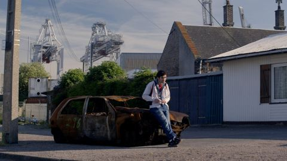 | Money (2017) | 6.5 | 519 | Thriller | 93 | Trojica mladića iz Le Havrea, koji žive u radničkoj četvrti i bore se s financijskim problemima, iskoriste priliku i ukradu aktovku punu novca. | Zemlja: Francuska
Redatelj: Géla Babluani
Scenarij: Géla Babluani, Jonathan Mason
Glumci: George Babluani, Vincent Rottiers, Charlotte Van Bervesselès, Louis-Do de Lencquesaing |
| pon 23.11. | 00:00 | CineStar 2 | Sav Novac Svijeta | | All the Money in the World (2017) | 6.8 | 97.751 | Biography, Crime, Drama | 135 | Priča prati mladog 16-godišnjeg Johna Paula Gettyja III (Charlie Plummer) koji je otet, a njegova majka Gail (Michelle Williams) pokušava uvjeriti njegovog djeda, milijardera Gettyja (Christopher... | Redatelj: Ridley Scott
Scenarij: David Scarpa, John Pearson
Glumci: Michelle Williams, Christopher Plummer, Mark Wahlberg, Romain Duris |
| pon 23.11. | 00:00 | Kino TV | Izranjanje | | Breaking Surface (2020) | 6.1 | 7.148 | Adventure, Drama, Horror | 120 | Ronilačko putovanje za vrijeme zime u Norveškoj pretvara se u očajničku utrku s vremenom za dvije sestre kada jedna od njih ostane zarobljena na dnu oceana zbog odrona kamenja. | Redatelj: Joachim Hedén
Scenarij: Joachim Hedén
Glumci: Moa Gammel, Madeleine Martin, Trine Wiggen, Jitse Jonathan Buitink |
| pon 23.11. | 00:25 | CineStar 1 | Sretno, Leo Grande | | Good Luck to You, Leo Grande (2022) ? | 7.2 | 45.777 | Comedy, Drama | 105 | Nancy Stokes je umirovljena učiteljica vjeronauka koja napokon želi začiniti svoj život. Nancy je do tada živjela povučeno. | Redatelj: Sophie Hyde
Scenarij: Katy Brand
Glumci: Emma Thompson, Daryl McCormack, Les Mabaleka, Lennie Beare |
| pon 23.11. | 00:40 | RTL | Naša kampanja je kriza |  | Our Brand Is Crisis (2015) | 6.1 | 24.282 | Comedy, Drama | 140 | Bolivijski političar Castillo (Joaquim de Almeida) angažira američku savjetodavnu tvrtku da mu pomogne pobijediti na predsjedničkim izborima pa Amerikanci šalju Jane Bodine (Sandra Bullock) da mu... | Zemlja: SAD
Redatelj: David Gordon Green
Scenarij: Rachel Boynton, Peter Straughan
Glumci: Sandra Bullock, Billy Bob Thornton, Anthony Mackie, Joaquim de Almeida |
| pon 23.11. | 01:11 | HRT 3 | Svi za Eldorado | | Paint Your Wagon (1969) | 6.6 | 16.486 | Comedy, Musical, Western | 148 | Negdje u Kaliforniji, oko 1840. godine. Pustolov Ben Rumson (L. Marvin) krene u potragu za zlatom s partnerom Pardnerom (C. Eastwood), romantičnim farmerom kojemu spasi život. | Zemlja: SAD
Redatelj: Joshua Logan
Scenarij: Alan Jay Lerner, Paddy Chayefsky
Glumci: Lee Marvin, Clint Eastwood, Jean Seberg, Harve Presnell |
| pon 23.11. | 01:25 | RTL | Naša kampanja je kriza | | Our Brand Is Crisis (2015) | 6.1 | 24.282 | Comedy, Drama | 135 | Bolivijski političar Castillo (Joaquim de Almeida) angažira američku savjetodavnu tvrtku da mu pomogne pobijediti na predsjedničkim izborima pa Amerikanci šalju Jane Bodine (Sandra Bullock) da mu... | Zemlja: SAD
Redatelj: David Gordon Green
Scenarij: Rachel Boynton, Peter Straughan
Glumci: Sandra Bullock, Billy Bob Thornton, Anthony Mackie, Joaquim de Almeida |
| pon 23.11. | 02:00 | CineStar Action | Bez zakona |  | Lawless (2012) | 7.2 | 265.271 | Biography, Crime, Drama | 125 | Trojica braće Bondurant bave se proizvodnjom i krijumčarenjem alkohola za vrijeme prohibicije u doba Velike depresije u brdima okruga Franklin u Virginiji. | Zemlja: SAD
Redatelj: John Hillcoat
Scenarij: Nick Cave, Matt Bondurant
Glumci: Shia LaBeouf, Tom Hardy, Jason Clarke, Guy Pearce |
| pon 23.11. | 02:00 | CineStar Comedy | 100 metara |  | 100 metros (2016) | 7.5 | 7.610 | Biography, Comedy, Drama | 112 | Ramónu je dijagnosticirana multipla skleroza (MS) u tridesetima. Liječnik mu kaže da će jedva moći hodati, a kamoli trčati. | Zemlja: Španjolska
Redatelj: Marcel Barrena
Scenarij: Marcel Barrena
Glumci: Dani Rovira, Karra Elejalde, Alexandra Jiménez, David Verdaguer |
| pon 23.11. | 02:00 | Kino TV | Berlin Alexanderplatz | | Berlin Alexanderplatz (2020) | 6.9 | 4.401 | Crime, Drama, Thriller | 241 | Francis je preživio svoj bijeg iz zapadne Afrike. Kada se probudi na plaži na samom jugu Europe odlučan je u nakani da od sada živi normalnim, skromnim životom. | Zemlja: Njemačka
Redatelj: Burhan Qurbani
Scenarij: Martin Behnke, Burhan Qurbani, Alfred Döblin
Glumci: Welket Bungué, Jella Haase, Albrecht Schuch, Joachim Król |
| pon 23.11. | 02:10 | CineStar 1 | Tajna broja sedam | | What Happened to Monday (2017) | 6.8 | 147.148 | Action, Crime, Fantasy | 133 | Distopijski znanstveno fantastični film Maxa Botkina i Kerry Williamson, u režiji Tommyja Wirkole u kojem glavne uloge imaju Noomi Rapace, Glenn Close i Willem Dafoe. | Zemlja: SAD
Redatelj: Tommy Wirkola
Scenarij: Max Botkin, Kerry Williamson
Glumci: Noomi Rapace, Glenn Close, Willem Dafoe, Robert Wagner |
| pon 23.11. | 02:15 | Viasat Kino | Najbolji tim |  | Friday Night Lights (2004) | 7.2 | 71.881 | Action, Drama, Sport | 155 | Film se temelji na istinitoj priči o siromašnom teksaškom gradu Odessi, američkom nogometu i srednjoškolskoj momčadi koja se junački bori da bi došla do pobjede. | Zemlja: SAD
Redatelj: Peter Berg
Scenarij: Buzz Bissinger, David Aaron Cohen, Peter Berg
Glumci: Billy Bob Thornton, Lucas Black, Garrett Hedlund, Derek Luke |
| pon 23.11. | 02:15 | CineStar 2 | Ponovno o JFK-u: Kroza zrcalo |  | JFK Revisited: Through the Looking Glass (2021) | 7.5 | 5.010 | Documentary, History | 119 | Ponovno o JFK-u: Kroza zrcalo. Nakon što je Warner Bros. u prosincu 1991. g. prikazao film JFK Olivera Stonea o atentatu na predsjednika Johna F. Kennedyja s Kevinom Costnerom u glavnoj ulozi, u ovom dokumentarnom filmu pratimo... | Zemlja: SAD
Redatelj: Oliver Stone
Scenarij: James DiEugenio
Glumci: Richard Russell, Richard Schweiker, Gary Hart, Geraldo Rivera |
| pon 23.11. | 03:00 | Nova TV | Kong Ostrvo lobanja | | Kong: Skull Island (2017) | 6.7 | 381.529 | Action, Adventure, Fantasy | 110 | Producenti "Godzille" donose svoju verziju izvora jednog od najmoćnijih mitova o čudovištu svih vremena. | Zemlja: Kina
Redatelj: Jordan Vogt-Roberts
Scenarij: Dan Gilroy, Max Borenstein, Derek Connolly, John Gatins
Glumci: Tom Hiddleston, Samuel L. Jackson, Brie Larson, John C. Reilly |
| pon 23.11. | 03:05 | STAR Movies | Elizijum |  | Elysium (2013) | 6.6 | 497.253 | Action, Drama, Sci-Fi | 105 | U dalekoj budućnosti vrlo bogati žive na luksuznoj svemirskoj stanici, a ostali su prisiljeni živjeti na prenaseljenoj Zemlji. | Zemlja: SAD
Redatelj: Neill Blomkamp
Scenarij: Neill Blomkamp
Glumci: Matt Damon, Jodie Foster, Sharlto Copley, Alice Braga |
| pon 23.11. | 04:50 | Viasat Kino | Ponos i predrasude | | Pride & Prejudice (2005) | 7.8 | 386.414 | Drama, Romance | 160 | Životi pet sestara u georgijanskoj Engleskoj okrenu se naglavce kada se bogati mladić sa svojim prijateljem doseli u njihovo susjedstvo. Film je temeljen na romanu Jane Austen. | Zemlja: SAD
Redatelj: Joe Wright
Scenarij: Deborah Moggach, Jane Austen, Emma Thompson
Glumci: Keira Knightley, Matthew Macfadyen, Brenda Blethyn, Donald Sutherland |
| pon 23.11. | 06:10 | CineStar 1 | Aleluja! | 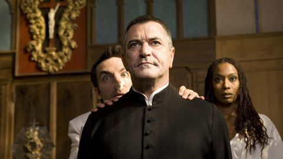 | Le missionnaire (2009) | 6.5 | 1.774 | Comedy | 105 | Aleluja!. Ova urnebesna, dirljiva komedija bez imalo poštovanja koju je režirao Roger Delattre prati život Marija Diccara, kriminalca koji je upravo odslužio sedmogodišnju zatvorsku kaznu. | Zemlja: Francuska
Redatelj: Roger Delattre
Scenarij: Jean-Marie Bigard, Philippe Giangreco
Glumci: Jean-Marie Bigard, David Strajmayster, Jean Dell, Michel Chesneau |
| pon 23.11. | 06:30 | RTL | San snova |  | Cvrcak i mravica (2023) | 6.2 | 442 | Adventure, Animation, Comedy | 120 | Nakon susreta sa Sonjom na skvoš-terenima Alen se za romantični savjet obraća Maji. Komplikacije s Leovim diplomskim ispitom dovest će Mirka u niz problema, a čitava situacija Sonji ide u korist. | Zemlja: Hrvatska
Redatelj: Luka Rukavina, Kristijan Milić, Dino Krpan
Scenarij: Luka Rukavina, Rona Zulj
Glumci: Marko Braić, Tea Šimić, Emir Hadžihafizbegović, Ivana Krizmanić |
| pon 23.11. | 06:45 | AMC | Smrtonosni val |  | The Tracey Fragments (2007) | 6.0 | 7.812 | Drama | 90 | Nakon razornog tsunamija na istočnoj obali SAD-a, znanstvenik John McAdams pokušava otkriti krije li se iza katastrofe ljudska ruka. | Zemlja: Kanada
Redatelj: Bruce McDonald
Scenarij: Maureen Medved
Glumci: Angus MacFadyen, Karine Vanasse, Louis Philippe Dandenault, Ellen David |
| pon 23.11. | 07:30 | CineStar Action | Moj anđeo | | Angel of Mine (2019) | 6.4 | 13.323 | Drama, Mystery, Thriller | 115 | Lizzie Manning je razvedena i emocionalno nestabilna žena koja se bori za skrbništvo nad svojim 11-g. sinom Thomasom. Teško joj se uskladiti posao i samohrano roditeljstvo. | Zemlja: Australija
Redatelj: Kim Farrant
Scenarij: Luke Davies, David Regal, Safy Nebbou, Cyril Gomez-Mathieu
Glumci: Noomi Rapace, Yvonne Strahovski, Luke Evans, Rebecca Bower |
| pon 23.11. | 07:30 | Viasat Kino | Pet legendi |  | Rise of the Guardians (2012) | 7.2 | 212.988 | Action, Adventure, Animation | 125 | Kad zli duh Pitch pokrene napad na Zemlju, Besmrtni Čuvari udružuju se da zaštite nevinost djece diljem svijeta. | Zemlja: SAD
Redatelj: Peter Ramsey
Scenarij: David Lindsay-Abaire, William Joyce, Chris Appelhans
Glumci: Chris Pine, Alec Baldwin, Jude Law, Isla Fisher |
| pon 23.11. | 07:35 | STAR Movies | Superman: Povratak | | Superman Returns (2006) | 6.1 | 305.778 | Action, Adventure, Sci-Fi | 175 | Superman se ponovno pojavljuje nakon dugog izbivanja, ali ga izaziva stari neprijatelj koji koristi kriptonsku tehnologiju da bi zavladao svijetom. | Zemlja: SAD
Redatelj: Bryan Singer
Scenarij: Michael Dougherty, Dan Harris, Bryan Singer, Jerry Siegel
Glumci: Brandon Routh, Kate Bosworth, Kevin Spacey, James Marsden |
| pon 23.11. | 08:00 | Kino TV | Izranjanje |  | Breaking Surface (2020) | 6.1 | 7.148 | Adventure, Drama, Horror | 120 | Ronilačko putovanje za vrijeme zime u Norveškoj pretvara se u očajničku utrku s vremenom za dvije sestre kada jedna od njih ostane zarobljena na dnu oceana zbog odrona kamenja. | Zemlja: Belgija
Redatelj: Joachim Hedén
Scenarij: Joachim Hedén
Glumci: Moa Gammel, Madeleine Martin, Trine Wiggen, Jitse Jonathan Buitink |
| pon 23.11. | 08:15 | AMC | Smrtonosni val | | The Tracey Fragments (2007) | 6.0 | 7.812 | Drama | 90 | Nakon razornog tsunamija na istočnoj obali SAD-a, znanstvenik John McAdams pokušava otkriti krije li se iza katastrofe ljudska ruka. | Zemlja: Kanada
Redatelj: Bruce McDonald
Scenarij: Maureen Medved
Glumci: Angus MacFadyen, Karine Vanasse, Louis Philippe Dandenault, Ellen David |
| pon 23.11. | 09:00 | CineStar Comedy | Dokazana krivica |  | Find Me Guilty (2006) | 7.0 | 38.436 | Biography, Comedy, Crime | 125 | Mafijaša Jackie DiNorscia upuca njegov rođak dok je na uvjetnoj, ali ipak preživi. Kasnije ga uhite u raspačavanju droge i osude na 30 g. kaznu zatvora. | Zemlja: Njemačka
Redatelj: Sidney Lumet
Scenarij: Sidney Lumet, T.J. Mancini, Robert J. McCrea
Glumci: Vin Diesel, Peter Dinklage, Linus Roache, Ron Silver |
| pon 23.11. | 09:25 | CineStar Action | Transporter 3 | | Transporter 3 (2008) | 6.1 | 187.980 | Action, Thriller | 120 | Frank Martin navlači rukavice za vožnju kako bi odvezao Valentinu, otetu kćer ukrajinskog vladinog dužnosnika, iz Marseillesa u Odessu na Crnom moru. | Zemlja: Francuska
Redatelj: Olivier Megaton
Scenarij: Luc Besson, Robert Mark Kamen
Glumci: Jason Statham, Robert Knepper, François Berléand, Natalya Rudakova |
| pon 23.11. | 09:35 | Viasat Kino | Zatvorski krug | | The Longest Yard (2005) | 6.4 | 215.426 | Comedy, Crime, Sport | 130 | Zatvorenici formiraju nogometni tim kako bi izazvali zatvorske čuvare. | Zemlja: SAD
Redatelj: Peter Segal
Scenarij: Albert S. Ruddy, Tracy Keenan Wynn, Sheldon Turner
Glumci: Adam Sandler, Chris Rock, Burt Reynolds, Nelly |
| pon 23.11. | 09:45 | AMC | Mletački trgovac | 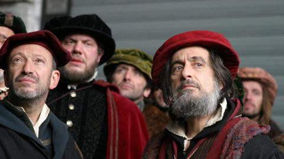 | The Merchant of Venice (2004) | 7.0 | 40.413 | Drama, Romance | 130 | U Veneciji 16. stoljeća trgovac Antonio jamči za zajam prijatelju Bassaniju vlastitim mesom, ne sluteći da će se zbog neplaćenog duga naći pred nemilosrdnim Shylockom. | Zemlja: SAD
Redatelj: Michael Radford
Scenarij: William Shakespeare, Michael Radford
Glumci: Al Pacino, Jeremy Irons, Joseph Fiennes, Lynn Collins |
| pon 23.11. | 09:55 | CineStar 1 | Božićni prsten | | The Christmas Ring (2020) | 6.4 | 1.483 | Drama, Romance | 105 | Istražujući podrijetlo antiknog prstena, novinarka Kendra otkriva priču o jednoj davnoj ljubavi. Hoće li putem i ona pronaći ljubav? | Zemlja: SAD
Redatelj: Troy Scott
Scenarij: Anna White
Glumci: Nazneen Contractor, David Alpay, Chelsey Reist, Kazumi Evans |
| pon 23.11. | 10:00 | Kino TV | Izgubljen pod suncem | 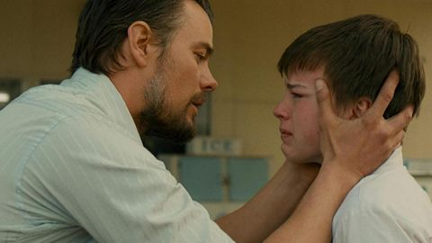 | Lost in the Sun (2015) | 6.0 | 4.657 | Action, Drama, Thriller | 120 | John (Josh Duhamel) surovi je sitni lopov koji bježi od grešne prošlosti. | Zemlja: SAD
Redatelj: Trey Nelson
Scenarij: Trey Nelson
Glumci: Josh Duhamel, Josh Wiggins, Lynn Collins, Emma Fuhrmann |
| pon 23.11. | 10:45 | CineStar Fantasy | Solomon Kane | 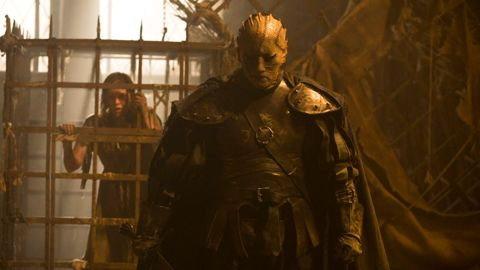 | Solomon Kane (2009) | 6.1 | 81.393 | Action, Adventure, Fantasy | 110 | Solomon Kane je brutalno učinkovit stroj za ubijanje iz 16. stoljeća. | Zemlja: Ujedinjeno Kraljevstvo
Redatelj: MJ Bassett
Scenarij: MJ Bassett, Robert E. Howard
Glumci: James Purefoy, Rachel Hurd-Wood, Pete Postlethwaite, Alice Krige |
| pon 23.11. | 10:55 | CineStar 2 | Vozeći gospođicu Daisy | 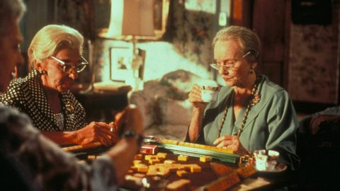 | Driving Miss Daisy (1989) | 7.3 | 125.325 | Comedy, Drama | 110 | Nakon što skrivi automobilsku nesreću, umirovljena učiteljica Daisy prisiljena je prepustiti vozačko mjesto Afroamerikancu Hokeu. | Zemlja: SAD
Redatelj: Bruce Beresford
Scenarij: Alfred Uhry
Glumci: Morgan Freeman, Jessica Tandy, Dan Aykroyd, Patti LuPone |
| pon 23.11. | 11:05 | CineStar Comedy | Savršen plan |  | Un plan parfait (2012) | 6.3 | 10.573 | Adventure, Comedy, Romance | 110 | Isabelle (Diane Kruger) je lijepa mlada žena zaljubljena u svog dečka s kojim ima stabilnu vezu i uskoro ide pred oltar. | Zemlja: Francuska
Redatelj: Pascal Chaumeil
Scenarij: Laurent Zeitoun, Yoann Gromb, Béatrice Fournera, Philippe Mechelen
Glumci: Diane Kruger, Dany Boon, Etienne Chicot, Alice Pol |
| pon 23.11. | 11:40 | CineStar 1 | Prijatelji | | Our Friend (2019) | 7.3 | 18.654 | Drama, Romance | 140 | Pravi prijatelj je uvijek tu, kako u dobru, tako i u zlu. | Zemlja: SAD
Redatelj: Gabriela Cowperthwaite
Scenarij: Brad Ingelsby, Matthew Teague
Glumci: Jason Segel, Isabella Kai, Violet McGraw, Dakota Johnson |
| pon 23.11. | 12:00 | Kino TV | Guns Akimbo |  | Guns Akimbo (2019) | 6.3 | 79.734 | Action, Comedy, Crime | 120 | Miles je zaglavio na poslu kojeg ne voli, još uvijek zaljubljen u svoju bivšu djevojku Novu. | Zemlja: Njemačka
Redatelj: Jason Lei Howden
Scenarij: Jason Lei Howden
Glumci: Daniel Radcliffe, Samara Weaving, Ned Dennehy, Natasha Liu Bordizzo |
| pon 23.11. | 12:45 | CineStar 2 | Radioaktivna | | Radioactive (2019) | 6.3 | 24.741 | Biography, Drama, Romance | 120 | Roadioaktivna donosi istinitu priču o znanstvenici rođenoj 1867. u Varšavi koja je u Francusku došla studirati i ondje upoznala budućeg supruga. | Zemlja: Ujedinjeno Kraljevstvo
Redatelj: Marjane Satrapi
Scenarij: Jack Thorne, Lauren Redniss
Glumci: Rosamund Pike, Sam Riley, Simon Russell Beale, Katherine Parkinson |
| pon 23.11. | 13:40 | Viasat Kino | Ponos i predrasude | | Pride & Prejudice (2005) | 7.8 | 386.414 | Drama, Romance | 155 | Životi pet sestara u georgijanskoj Engleskoj okrenu se naglavce kada se bogati mladić sa svojim prijateljem doseli u njihovo susjedstvo. Film je temeljen na romanu Jane Austen. | Zemlja: SAD
Redatelj: Joe Wright
Scenarij: Deborah Moggach, Jane Austen, Emma Thompson
Glumci: Keira Knightley, Matthew Macfadyen, Brenda Blethyn, Donald Sutherland |
| pon 23.11. | 14:00 | HRT 3 | Moj otac junak | | Mon père, ce héros. (1991) | 6.1 | 3.138 | Comedy, Drama, Romance | 102 | Veronique je djevojka čiji su roditelji razvedeni. Ona živi s majkom, a svoje praznike provodi s ocem... | Zemlja: Francuska
Redatelj: Gérard Lauzier
Scenarij: Gérard Lauzier
Glumci: Gérard Depardieu, Marie Gillain, Catherine Jacob, Charlotte de Turckheim |
| pon 23.11. | 14:00 | Kino TV | Posljednji portret | | Final Portrait (2017) | 6.3 | 6.470 | Biography, Comedy, Drama | 120 | Godine 1964., na kratkom putovanju u Pariz, američkog pisca i ljubitelja umjetnosti Jamesa Lorda njegov prijatelj, svjetski poznati umjetnik Alberto Giacometti, zamoli da mu pozira za portret. | Zemlja: Ujedinjeno Kraljevstvo
Redatelj: Stanley Tucci
Scenarij: Stanley Tucci, James Lord
Glumci: Geoffrey Rush, Armie Hammer, Clémence Poésy, Tony Shalhoub |
| pon 23.11. | 14:35 | STAR Movies | Komičari | | Funny People (2009) | 6.3 | 128.204 | Comedy, Drama | 180 | George je uspješan komičar koji dozna da boluje od neizlječive bolesti i ima manje od godine života. | Zemlja: SAD
Redatelj: Judd Apatow
Scenarij: Judd Apatow
Glumci: Adam Sandler, Seth Rogen, Leslie Mann, Eric Bana |
| pon 23.11. | 14:45 | CineStar 2 | Cijena istine | | The Lincoln Lawyer (2011) | 7.3 | 274.342 | Crime, Drama, Mystery | 130 | Mickey Haller je odvjetnik koji brani kriminalce, a ured je smjestio na zadnje sjedište Lincoln Continental limuzine kojom kruži ulicama Los Angelesa. | Zemlja: SAD
Redatelj: Brad Furman
Scenarij: John Romano, Michael Connelly
Glumci: Matthew McConaughey, Marisa Tomei, Ryan Phillippe, William H. Macy |
| pon 23.11. | 15:10 | AMC | Pustolovina rabina Jacoba | | Les aventures de Rabbi Jacob (1973) | 7.4 | 16.717 | Adventure, Comedy | 90 | Netrpeljivi Francuz prisiljen je glumiti popularnog rabina koji je u bijegu od skupine ubojica i policije. | Zemlja: Francuska
Redatelj: Gérard Oury
Scenarij: Gérard Oury, Danièle Thompson, Josy Eisenberg
Glumci: Louis de Funès, Claude Giraud, Henri Guybet, Renzo Montagnani |
| pon 23.11. | 15:20 | CineStar Action | Dopunska nastava | | Dopunska nastava (2019) | 6.1 | 306 | Comedy, Crime, Thriller | 120 | Četiri godine nakon Narodnog heroja Ljiljana Vidića redatelj Ivan-Goran Vitez predstavlja satirični triler o talačkoj krizi u jednoj osnovnoj školi. | Zemlja: Hrvatska
Redatelj: Ivan-Goran Vitez
Scenarij: Ivan-Goran Vitez
Glumci: Milivoj Beader, Željko Königsknecht, Anita Matić Delić, Marko Cindrić |
| pon 23.11. | 15:55 | CineStar Comedy | Danny Collins | | Danny Collins (2015) | 7.0 | 35.326 | Comedy, Drama, Music | 110 | Danny Collins (Al Pacino) ostarjeli je rocker koji ni u sedmom desetljeću ne odustaje od svog specifičnog načina života. | Zemlja: SAD
Redatelj: Dan Fogelman
Scenarij: Dan Fogelman
Glumci: Al Pacino, Annette Bening, Jennifer Garner, Bobby Cannavale |
| pon 23.11. | 16:00 | CineStar 1 | Klub zadovoljnih žena | | Book Club (2018) | 6.1 | 35.392 | Comedy, Drama, Romance | 120 | Slavne Oscarovke Jane Fonda, Diane Keaton, Candice Bergen i Mary Steenburgen će nam u novoj urnebesno zabavnoj komediji pokazati kako život u trećoj životnoj dobi može biti itekako interesantan. | Zemlja: SAD
Redatelj: Bill Holderman
Scenarij: Bill Holderman, Erin Simms
Glumci: Diane Keaton, Jane Fonda, Candice Bergen, Mary Steenburgen |
| pon 23.11. | 16:15 | Viasat Kino | Izvorni kod | | Source Code (2011) | 7.5 | 591.242 | Action, Drama, Mystery | 120 | Vojnik se budi u tuđem tijelu i otkriva da je dio eksperimentalnog vladina programa za pronalaženje terorista iz prigradskog vlaka, u roku od osam minuta. | Zemlja: Kanada
Redatelj: Duncan Jones
Scenarij: Ben Ripley
Glumci: Jake Gyllenhaal, Jeffrey Wright, Michelle Monaghan, Vera Farmiga |
| pon 23.11. | 17:45 | CineStar Comedy | Božićna srca | | Hearts of Christmas (2016) | 6.9 | 2.245 | Drama, Romance | 90 | Romantična drama čija se radnja odvija u svijetu intenzivne neonatalne njege. Tijekom priprema za zabavu povodom božićnih blagdana i umirovljenja cijenjene kolegice, rad marljive Jenny ometa Matt. | Zemlja: SAD
Redatelj: Monika Mitchell
Scenarij: J.B. White
Glumci: Emilie Ullerup, Kristoffer Polaha, Sharon Lawrence, Nicholas Carella |
| pon 23.11. | 18:00 | Kino TV | Dio mog srca | | Piece of My Heart (2022) | 6.8 | 327 | Drama, Music | 135 | Mlade plesačice Irma i Olga pokušavaju se probiti u zahtjevnom svijetu baleta 70ih godina u Amsterdamu. | Zemlja: Nizozemska
Redatelj: Dana Nechushtan
Scenarij: Roos Ouwehand
Glumci: Peter Paul Muller, Elaine Meijerink, Roos Englebert, Gijs Blom |
| pon 23.11. | 18:05 | CineStar Fantasy | Igre gladi | | The Hunger Games (2012) | 7.2 | 1.107.116 | Action, Adventure, Sci-Fi | 145 | Katniss ima 16 godina i živi s majkom i mlađom sestrom u najsiromašnijem okrugu Panema, ostatku bivših Sjedinjenih Američkih Država. Nekoć davno okruzi su ratovali s Kapitolom koji ih je porazio. | Zemlja: SAD
Redatelj: Gary Ross
Scenarij: Gary Ross, Suzanne Collins, Billy Ray
Glumci: Jennifer Lawrence, Josh Hutcherson, Elizabeth Banks, Liam Hemsworth |
| pon 23.11. | 18:10 | CineStar Action | Pokajnik | | Honest Thief (2020) | 6.0 | 64.562 | Action, Crime, Drama | 110 | Tom Carter je pljačkaš koji je tijekom karijere ukrao 9 milijuna dolara iz nekoliko manjih banaka diljem SAD-a. Bez uhićenja, bez otkrivanja identiteta. | Zemlja: SAD
Redatelj: Mark Williams
Scenarij: Steve Allrich, Mark Williams, Louis Per Bruno
Glumci: Liam Neeson, Kate Walsh, Robert Patrick, Anthony Ramos |
| pon 23.11. | 18:15 | Viasat Kino | Sedam godina u Tibetu | | Seven Years in Tibet (1997) | 7.1 | 171.511 | Adventure, Biography, Drama | 165 | Heinrich Harrer putuje na Himalaju kako bi planinario. No, izbija rat pa bježi u Tibet gdje se sprijatelji s mladim Dalaj Lamom. | Zemlja: SAD
Redatelj: Jean-Jacques Annaud
Scenarij: Heinrich Harrer, Becky Johnston
Glumci: Brad Pitt, David Thewlis, BD Wong, Danny Denzongpa |
| pon 23.11. | 18:15 | AMC | Zatvorski krug | | The Longest Yard (2005) | 6.4 | 215.426 | Comedy, Crime, Sport | 105 | Zatvorenici oforme nogometnu momčad kako bi izazvali zatvorske čuvare. | Zemlja: SAD
Redatelj: Peter Segal
Scenarij: Albert S. Ruddy, Tracy Keenan Wynn, Sheldon Turner
Glumci: Adam Sandler, Chris Rock, Burt Reynolds, Nelly |
| pon 23.11. | 18:40 | CineStar 2 | Opasan poziv | | Locke (2013) ? | 7.1 | 171.705 | Drama | 100 | Priča o čovjeku u napetoj utrci s vremenom. Ivan Locke (Tom Hardy) ima savršenu obitelj, posao iz snova i sutrašnji dan trebao bi biti vrhunac njegove karijere. | Zemlja: SAD
Redatelj: Steven Knight
Scenarij: Steven Knight
Glumci: Tom Hardy, Olivia Colman, Ruth Wilson, Andrew Scott |
| pon 23.11. | 19:15 | CineStar Comedy | Veliko zavođenje | | The Grand Seduction (2013) | 7.0 | 21.423 | Comedy | 115 | Mala ispostava bakalara u Tickle Headu određuje se za financijsku pomoć ako mogu osigurati bazu usluga naftne platforme. | Zemlja: Kanada
Redatelj: Don McKellar
Scenarij: Ken Scott, Michael Dowse
Glumci: Percy Hynes White, Sean Panting, Crystal Dawn Parsons, Brendan Gleeson |
| pon 23.11. | 20:00 | AMC | Atlas Neba | | Cloud Atlas (2012) | 7.3 | 389.581 | Drama, Mystery, Sci-Fi | 155 | Film istražuje kako postupci iz pojedinačnih života utječu jedni na druge u prošlosti, sadašnjosti i budućnosti. | Zemlja: Kina
Redatelj: Tom Tykwer, Lana Wachowski, Lilly Wachowski
Scenarij: David Mitchell, Lana Wachowski, Tom Tykwer, Lilly Wachowski
Glumci: Tom Hanks, Halle Berry, Jim Broadbent, Hugo Weaving |
| pon 23.11. | 20:05 | STAR Movies | Prestiž | | The Prestige (2006) | 8.5 | 1.643.423 | Drama, Mystery, Sci-Fi | 165 | Nakon tragične nesreće dva mađioničara upuštaju se u bitku za stvaranje vrhunske iluzije žrtvujući sve što imaju kako bi nadmudrili onog drugog. | Zemlja: SAD
Redatelj: Christopher Nolan
Scenarij: Jonathan Nolan, Christopher Nolan, Christopher Priest
Glumci: Christian Bale, Hugh Jackman, Scarlett Johansson, Michael Caine |
| pon 23.11. | 20:15 | CineStar 1 | ZG 80 | | ZG80 (2016) | 7.0 | 3.599 | Action, Comedy, Sport | 110 | Grupa prijatelja iz istog kvarta u Zagrebu, članova navijačke skupine BBB (Dinamo), krajemo '80-ih godina prošlog stoljeća kreće na gostujuću utakmicu s najvećim rivalima, Crvenom Zvezdom, u Beograd. | Zemlja: Hrvatska
Redatelj: Igor Seregi
Scenarij: Ivo Balenovic, Robert Cukina, Ljubo Zdjelarevic
Glumci: Rene Bitorajac, Matija Kačan, Marko Cindrić, Filip Detelić |
| pon 23.11. | 20:15 | Kino TV | Sudbino, ljubavi moja | | Mektoub, My Love: Canto Uno (2017) | 6.5 | 4.826 | Comedy, Romance | 225 | Amin, scenarist i fotograf u usponu, vraća se u svoj rodni gradić na jugu Francuske nakon što je godinu dana živio u Parizu. | Zemlja: Francuska
Redatelj: Abdellatif Kechiche
Scenarij: François Bégaudeau, Abdellatif Kechiche, Ghalya Lacroix
Glumci: Shaïn Boumedine, Ophélie Bau, Salim Kechiouche, Lou Luttiau |
| pon 23.11. | 20:30 | CineStar Fantasy | Priča o Djedu Mrazu | | Rare Exports (2010) | 6.6 | 35.824 | Adventure, Fantasy, Horror | 90 | Bio je to tjedan prije Božića kad je mlad i pustolovan Pietari otkrio istinu o Djedu Mrazu. Prema legendi, radosni starčić više je neprijatelj negoli prijatelj. | Zemlja: Finska
Redatelj: Jalmari Helander
Scenarij: Jalmari Helander, Juuso Helander, Petri Jokiranta, Sami Parkkinen
Glumci: Onni Tommila, Jorma Tommila, Tommi Korpela, Rauno Juvonen |
| pon 23.11. | 21:00 | Viasat Kino | 2 pištolja | | 2 Guns (2013) | 6.7 | 240.275 | Action, Comedy, Crime | 140 | Dvojica nepopravljivih kriminalaca upadaju u nevolje s američkom graničnom patrolom nakon susreta s meksičkim narkobosom, a zatim počinju otkrivati nešto novo. | Zemlja: SAD
Redatelj: Baltasar Kormákur
Scenarij: Blake Masters, Steven Grant
Glumci: Denzel Washington, Mark Wahlberg, Paula Patton, Edward James Olmos |
| pon 23.11. | 21:10 | CineStar Comedy | Samba | | Samba (2014) | 6.7 | 18.138 | Comedy, Drama, Romance | 120 | Šarmantna komedija o prijateljstvu i ljubavi koji ne biraju ni vrijeme ni mjesto. | Zemlja: Francuska
Redatelj: Olivier Nakache, Éric Toledano
Scenarij: Éric Toledano, Olivier Nakache, Delphine Coulin, Muriel Coulin
Glumci: Omar Sy, Charlotte Gainsbourg, Tahar Rahim, Izïa Higelin |
| pon 23.11. | 22:05 | CineStar 1 | Bostonski heroji | | Patriots Day (2016) | 7.3 | 124.098 | Action, Crime, Drama | 145 | Tommy Saunders zaslužen je za sigurnost na Bostonskom maratonu 14. travnja 2013. godine. Iako se čini kao da će sve proći u najboljem redu, u blizini odjeknu dvije bombe. | Zemlja: Hong Kong
Redatelj: Peter Berg
Scenarij: Peter Berg, Matt Cook, Joshua Zetumer, Paul Tamasy
Glumci: Mark Wahlberg, Kevin Bacon, Michelle Monaghan, J.K. Simmons |
| pon 23.11. | 22:05 | CineStar 2 | Prevarantice s Wall Streeta | | Hustlers (2019) | 6.3 | 114.409 | Comedy, Crime, Drama | 115 | Priča prati plan za osvetu dviju zaposlenica striptiz kluba koje udružuju snage protiv muškaraca s Wall Streeta koji su njihovi klijenti. | Zemlja: SAD
Redatelj: Lorene Scafaria
Scenarij: Lorene Scafaria, Jessica Pressler
Glumci: Constance Wu, Jennifer Lopez, Julia Stiles, Keke Palmer |
| pon 23.11. | 22:06 | HRT 3 | Mama Roma | | Mamma Roma (1962) | 7.7 | 11.651 | Drama | 102 | Mama Roma srednjovječna je prostitutka koja pronađe novi posao kako bi mogla pomoći svom sinu Ettoru i bolje ga usmjeriti. | Zemlja: Italija
Redatelj: Pier Paolo Pasolini
Scenarij: Pier Paolo Pasolini
Glumci: Anna Magnani, Ettore Garofolo, Franco Citti, Silvana Corsini |
| pon 23.11. | 22:50 | STAR Movies | Sakupljač kostiju | | The Bone Collector (1999) | 6.7 | 204.037 | Crime, Drama, Mystery | 145 | Kvadriplegičar i bivši detektiv Odjela za ubojstva i njegova partnerica u lovu su na serijskog ubojicu koji terorizira New York. | Zemlja: SAD
Redatelj: Phillip Noyce
Scenarij: Jeffery Deaver, Jeremy Iacone
Glumci: Angelina Jolie, Denzel Washington, Queen Latifah, Michael Rooker |
| pon 23.11. | 23:20 | Viasat Kino | Dobrodošli u džunglu | | The Rundown (2003) | 6.6 | 149.579 | Action, Adventure, Comedy | 135 | Detektiv je poslan u Amazon da pronađe nestalog sina svog šefa. | Zemlja: SAD
Redatelj: Peter Berg
Scenarij: R.J. Stewart, James Vanderbilt
Glumci: Dwayne Johnson, Seann William Scott, Christopher Walken, Rosario Dawson |
| pon 23.11. | 23:35 | RTL | Ultimativna playlista buke | | The Ultimate Playlist of Noise (2021) | 6.6 | 1.192 | Comedy, Drama, Music | 125 | Maturant Marcus Lund (Keean Johnson) obožava glazbu. Njegov stariji brat Alex (Gordon Winarick) nestao je nakon što je Marcusa kao dijete spasio iz doma koji je gutao požar. | Zemlja: SAD
Redatelj: Bennett Lasseter
Scenarij: Mitchell Winkie
Glumci: Keean Johnson, Madeline Brewer, Rya Kihlstedt, Ian Gomez |
| pon 23.11. | 23:40 | RTL | Ultimativna playlista buke | | The Ultimate Playlist of Noise (2021) | 6.6 | 1.192 | Comedy, Drama, Music | 125 | Maturant Marcus Lund (Keean Johnson) obožava glazbu. Njegov stariji brat Alex (Gordon Winarick) nestao je nakon što je Marcusa kao dijete spasio iz doma koji je gutao požar. | Zemlja: SAD
Redatelj: Bennett Lasseter
Scenarij: Mitchell Winkie
Glumci: Keean Johnson, Madeline Brewer, Rya Kihlstedt, Ian Gomez |
| pon 23.11. | 23:45 | CineStar Action | Državni neprijatelj br.1 | | L'instinct de mort (2008) | 7.5 | 37.015 | Action, Biography, Crime | 130 | Nakon sudjelovanja u Alžirskom ratu, Jacques Mesrine vraća se u roditeljski dom u Clichyju. Uskoro se upušta u svoje prve pljačkaške pohode koji će s vremenom prerasti u ozbiljne zločinačke poduhvate. | Zemlja: Francuska
Redatelj: Jean-François Richet
Scenarij: Jacques Mesrine, Abdel Raouf Dafri, Jean-François Richet
Glumci: Vincent Cassel, Gérard Depardieu, Vincent Piant, Gilles Lellouche |
| pon 23.11. | 23:55 | AMC | Podzemni svijet: Pobuna likana |  | Underworld: Rise of the Lycans (2009) | 6.5 | 177.212 | Action, Fantasy, Thriller | 80 | Stoljećima su barbarski Likani bili podčinjeni i zlostavljani kao robovska rasa. Mladi Likanac po imenu Lucian želi potlačeni narod izvesti na slobodu i pokrenuti željenu promjenu... | Zemlja: Novi Zeland
Redatelj: Patrick Tatopoulos
Scenarij: Danny McBride, Dirk Blackman, Howard McCain, Len Wiseman
Glumci: Rhona Mitra, Michael Sheen, Bill Nighy, Shane Brolly |
| uto 24.11. | 00:00 | Kino TV | Tajna Dvorišne Rasprodaje: Sve Što Sja | | Garage Sale Mystery: All That Glitters (2014) | 6.9 | 1.689 | Crime, Drama, Mystery | 120 | Krimić u kojemu Jennifer Shannon (L. | Redatelj: Peter DeLuise
Scenarij: Walter Klenhard, Suzi Weinert
Glumci: Lori Loughlin, Sarah Strange, Steve Bacic, Kavan Smith |
| uto 24.11. | 01:15 | STAR Movies | Buntovnica u internatu | | Wild Child (2008) | 6.1 | 69.791 | Comedy | 115 | Otkako je umrla majka derišta iz Malibua, Poppy Moore, ona besramno gura svog bogatog, obično odsutnog tatu Gerryja. | Zemlja: SAD
Redatelj: Nick Moore
Scenarij: Lucy Dahl
Glumci: Emma Roberts, Alex Pettyfer, Juno Temple, Natasha Richardson |
| uto 24.11. | 01:35 | Viasat Kino | Ray |  | Ray (2004) | 7.7 | 168.024 | Biography, Drama, Music | 185 | Biografski film o životu legendarnog glazbenika Raya Charlesa, čovjeka koji je dosegnuo više nego što je itko smatrao mogućim i postao svjetski fenomen. | Zemlja: SAD
Redatelj: Taylor Hackford
Scenarij: Taylor Hackford, James L. White
Glumci: Jamie Foxx, Kerry Washington, Regina King, Clifton Powell |
| uto 24.11. | 01:55 | CineStar Action | Državni neprijatelj br.1 (Drugi dio) | | L'instinct de mort (2008) | 7.5 | 37.015 | Action, Biography, Crime | 142 | Nastavak biografskog trilera o najvećem gangsteru svih vremena. Tijekom cijeloga života Jacques Mesrine bio je proglašen državnim neprijateljem br. | Zemlja: Francuska
Redatelj: Jean-François Richet
Scenarij: Jacques Mesrine, Abdel Raouf Dafri, Jean-François Richet
Glumci: Vincent Cassel, Ludivine Sagnier, Mathieu Amalric, Samuel Le Bihan |
| uto 24.11. | 02:00 | Kino TV | Sudbino, ljubavi moja | | Mektoub, My Love: Canto Uno (2017) | 6.5 | 4.826 | Comedy, Romance | 241 | Amin, scenarist i fotograf u usponu, vraća se u svoj rodni gradić na jugu Francuske nakon što je godinu dana živio u Parizu. | Zemlja: Francuska
Redatelj: Abdellatif Kechiche
Scenarij: François Bégaudeau, Abdellatif Kechiche, Ghalya Lacroix
Glumci: Shaïn Boumedine, Ophélie Bau, Salim Kechiouche, Lou Luttiau |
| uto 24.11. | 02:05 | CineStar 1 | Skrivena poruka | | Under the Silver Lake (2018) | 6.5 | 63.701 | Crime, Mystery, Thriller | 149 | Sam (Andrew Garfield) je usamljen i razočaran 33-godišnjak koji upoznaje misterioznu ženu Sarah (Riley Keough), koja se zabavlja u bazenu ispred svog stana. | Zemlja: SAD
Redatelj: David Robert Mitchell
Scenarij: David Robert Mitchell
Glumci: Andrew Garfield, Riley Keough, Topher Grace, Jimmi Simpson |
| uto 24.11. | 02:25 | Nova TV | James Bond 007: Casino Royale | | Casino Royale (2006) | 8.0 | 760.704 | Action, Adventure, Thriller | 140 | James Bond (Daniel Craig) novi je agent u timu MI 6. Nakon što je stekao status 00 agenta i dobio dozvolu za ubojstvo, kreće u svoju prvu misiju na Bahame gdje se u kockarskoj igri mora... | Zemlja: Češka
Redatelj: Martin Campbell
Scenarij: Neal Purvis, Robert Wade, Paul Haggis, Ian Fleming
Glumci: Daniel Craig, Eva Green, Mads Mikkelsen, Judi Dench |
| uto 24.11. | 02:25 | CineStar Fantasy | Galveston | | Galveston (2018) | 6.2 | 17.587 | Action, Crime, Drama | 93 | Roy je opasan utjerivač dugova koji sazna da ima smrtonosnu bolest. Isti dan on upozna mladu Rocky, escort djevojku, koju spasi iz zatočeništva. | Zemlja: SAD
Redatelj: Mélanie Laurent
Scenarij: Nic Pizzolatto
Glumci: Ben Foster, Elle Fanning, Lili Reinhart, Jeffrey Grover |
| uto 24.11. | 02:25 | CineStar Comedy | Cvijet moje tajne | | La flor de mi secreto (1995) | 7.0 | 13.944 | Comedy, Drama | 108 | Leo Macias piše uspješne sentimentalne romane, ali pod pseudonimom Amanda Gris. | Zemlja: Španjolska
Redatelj: Pedro Almodóvar
Scenarij: Pedro Almodóvar, Dorothy Parker
Glumci: Marisa Paredes, Juan Echanove, Imanol Arias, Carme Elias |
| uto 24.11. | 02:35 | Nova TV | James Bond 007: Casino Royale | | Casino Royale (2006) | 8.0 | 760.704 | Action, Adventure, Thriller | 80 | James Bond (Daniel Craig) novi je agent u timu MI 6. Nakon što je stekao status 00 agenta i dobio dozvolu za ubojstvo, kreće u svoju prvu misiju na Bahame gdje se u kockarskoj igri mora... | Redatelj: Martin Campbell
Scenarij: Neal Purvis, Robert Wade, Paul Haggis, Ian Fleming
Glumci: Daniel Craig, Eva Green, Mads Mikkelsen, Judi Dench |
| uto 24.11. | 02:50 | AMC | Terminator: Spasenje | | Terminator Salvation (2009) | 6.5 | 396.959 | Action, Adventure, Sci-Fi | 105 | John Connor (Christian Bale) pokušava pokrenuti otpor protiv mehanizacije i strojeva. | Zemlja: SAD
Redatelj: McG
Scenarij: John Brancato, Michael Ferris
Glumci: Christian Bale, Sam Worthington, Anton Yelchin, Moon Bloodgood |
| uto 24.11. | 03:10 | STAR Movies | Neprijatelj pred vratima | | Enemy at the Gates (2001) | 7.5 | 297.162 | Action, Drama, War | 130 | Ruski i njemački snajperist igraju se mačke i miša tijekom bitke za Staljingrad. | Zemlja: Irska
Redatelj: Jean-Jacques Annaud
Scenarij: Jean-Jacques Annaud, Alain Godard
Glumci: Jude Law, Ed Harris, Rachel Weisz, Joseph Fiennes |
| uto 24.11. | 04:40 | Viasat Kino | Dvije sestre za kralja | | The Other Boleyn Girl (2008) | 6.7 | 128.688 | Biography, Drama, History | 145 | Ova povijesna drama prati oštru borbu sestara Mary (Scarlett Johansson) i Anne Boleyn (Natalie Portman), dok se trude steći naklonost kralja Henrika VIII. | Zemlja: Ujedinjeno Kraljevstvo
Redatelj: Justin Chadwick
Scenarij: Peter Morgan, Philippa Gregory
Glumci: Natalie Portman, Scarlett Johansson, Eric Bana, Jim Sturgess |
| uto 24.11. | 06:01 | Kino TV | Dio mog srca | | Piece of My Heart (2022) | 6.8 | 327 | Drama, Music | 119 | Mlade plesačice Irma i Olga pokušavaju se probiti u zahtjevnom svijetu baleta 70ih godina u Amsterdamu. | Zemlja: Nizozemska
Redatelj: Dana Nechushtan
Scenarij: Roos Ouwehand
Glumci: Peter Paul Muller, Elaine Meijerink, Roos Englebert, Gijs Blom |
| uto 24.11. | 06:20 | CineStar 1 | Martovske ide | | The Ides of March (2011) | 7.1 | 242.082 | Drama, Thriller | 115 | Stephen Meyers je ambiciozni vođa političke kampanje guvernera Mikea Morrisa. Kada primi poziv iz suparničkog političkog tabora, odazove se sastanku iza šefovih leđa. | Zemlja: SAD
Redatelj: George Clooney
Scenarij: George Clooney, Grant Heslov, Beau Willimon
Glumci: Ryan Gosling, George Clooney, Philip Seymour Hoffman, Paul Giamatti |
| uto 24.11. | 07:00 | STAR Movies | Nikad Se Nisam Poljubila | | Never Been Kissed (1999) | 6.0 | 104.433 | Comedy, Drama, Romance | 135 | Nesretni dvadesetpetogodišnji novinar mora tajno otići u srednju školu, ponovno proživljavajući svoju užasnu adolescenciju, ali i prvi put pronalazi pravu ljubav. | Redatelj: Raja Gosnell
Scenarij: Abby Kohn, Marc Silverstein
Glumci: Drew Barrymore, David Arquette, Michael Vartan, Leelee Sobieski |
| uto 24.11. | 07:10 | STAR Movies | Nikad se nisam poljubila |  | Never Been Kissed (1999) | 6.0 | 104.433 | Comedy, Drama, Romance | 125 | Nesretni dvadesetpetogodišnji novinar mora tajno otići u srednju školu, ponovno proživljavajući svoju užasnu adolescenciju, ali i prvi put pronalazi pravu ljubav. | Zemlja: SAD
Redatelj: Raja Gosnell
Scenarij: Abby Kohn, Marc Silverstein
Glumci: Drew Barrymore, David Arquette, Michael Vartan, Leelee Sobieski |
| uto 24.11. | 07:15 | CineStar Action | Dopunska nastava | | Dopunska nastava (2019) | 6.1 | 306 | Comedy, Crime, Thriller | 120 | Četiri godine nakon Narodnog heroja Ljiljana Vidića redatelj Ivan-Goran Vitez predstavlja satirični triler o talačkoj krizi u jednoj osnovnoj školi. | Zemlja: Hrvatska
Redatelj: Ivan-Goran Vitez
Scenarij: Ivan-Goran Vitez
Glumci: Milivoj Beader, Željko Königsknecht, Anita Matić Delić, Marko Cindrić |
| uto 24.11. | 08:00 | Kino TV | Tajna dvorišne rasprodaje: Sve što sja | | Garage Sale Mystery: All That Glitters (2014) | 6.9 | 1.689 | Crime, Drama, Mystery | 120 | Krimić u kojemu Jennifer Shannon (L. | Zemlja: Kanada
Redatelj: Peter DeLuise
Scenarij: Walter Klenhard, Suzi Weinert
Glumci: Lori Loughlin, Sarah Strange, Steve Bacic, Kavan Smith |
| uto 24.11. | 08:15 | CineStar 1 | Klub zadovoljnih žena | | Book Club (2018) | 6.1 | 35.392 | Comedy, Drama, Romance | 120 | Slavne Oscarovke Jane Fonda, Diane Keaton, Candice Bergen i Mary Steenburgen će nam u novoj urnebesno zabavnoj komediji pokazati kako život u trećoj životnoj dobi može biti itekako interesantan. | Zemlja: SAD
Redatelj: Bill Holderman
Scenarij: Bill Holderman, Erin Simms
Glumci: Diane Keaton, Jane Fonda, Candice Bergen, Mary Steenburgen |
| uto 24.11. | 09:00 | CineStar Comedy | Ispunjenje želje | | Wish Man (2019) | 7.0 | 2.682 | Biography, Drama, Family | 110 | Temeljen na istinitoj priči Franka Shankwitza, osnivača Zaklade Zaželi želju. | Zemlja: SAD
Redatelj: Theo Davies
Scenarij: Theo Davies
Glumci: Andrew Steel, Kirby Bliss Blanton, Tom Sizemore, Danny Trejo |
| uto 24.11. | 09:15 | CineStar Action | Churchill | | Churchill (2017) | 6.0 | 16.403 | Biography, Drama, History | 120 | Kako savezničke snage stoje na južnoj obali Velike Britanije, spremne na invaziju nacistički okupirane Europe, oni čekaju Churchillovu konačnu odluku hoće li se invazija uopće dogoditi. | Zemlja: Ujedinjeno Kraljevstvo
Redatelj: Jonathan Teplitzky
Scenarij: Alex von Tunzelmann
Glumci: Brian Cox, Miranda Richardson, John Slattery, Ella Purnell |
| uto 24.11. | 09:25 | AMC | Brianov život | | Monty Python's Life of Brian (1979) | 8.0 | 437.105 | Comedy | 90 | Komedija "Brianov život" donosi priču o Isusovom suvremeniku Brianu. | Zemlja: Ujedinjeno Kraljevstvo
Redatelj: Terry Jones
Scenarij: Graham Chapman, John Cleese, Terry Gilliam, Eric Idle
Glumci: Graham Chapman, John Cleese, Terry Gilliam, Eric Idle |
| uto 24.11. | 10:00 | Kino TV | Prikazanje | | L'apparition (2018) | 6.3 | 2.060 | Drama, Mystery | 140 | Detektivi i najbolji prijatelji Andreas i Simon vode različite živote. Andreas se smirio s lijepom ženom i sinom dok se Simon, nedavno razveden, uglavnom opija u lokalnom strip klubu. | Zemlja: Belgija
Redatelj: Xavier Giannoli
Scenarij: Xavier Giannoli, Jacques Fieschi, Marcia Romano
Glumci: Vincent Lindon, Galatea Bellugi, Patrick d'Assumçao, Anatole Taubman |
| uto 24.11. | 10:15 | CineStar 1 | Božić na pameti | | Christmas on My Mind (2019) | 6.5 | 2.200 | Comedy, Drama, Romance | 110 | Lucy Lovett budi se držeći u rukama vjenčanicu i pomisli da se treba udati za ljubav svog života, Zacha Callahana, no otkriva da su prekinuli prije dvije godine i da njezin zaručnik nije Zach. | Zemlja: SAD
Redatelj: Maclain Nelson
Scenarij: Denise Hunter, Kirsten Hansen
Glumci: Ashley Greene, Andrew W. Walker, Jackee Harry, Donna Benedicto |
| uto 24.11. | 10:15 | CineStar 2 | Oslikani veo | | The Painted Veil (2006) | 7.4 | 101.078 | Drama, Romance | 135 | Nekad je najveće putovanje udaljenost između dvoje ljudi. | Zemlja: Kanada
Redatelj: John Curran
Scenarij: Ron Nyswaner, W. Somerset Maugham
Glumci: Naomi Watts, Edward Norton, Liev Schreiber, Toby Jones |
| uto 24.11. | 10:50 | CineStar Comedy | Netko, negdje | | Deux moi (2019) | 6.6 | 6.185 | Comedy, Drama, Romance | 110 | Remy i Melanie su 30-godišnjaci i žive veoma blizu jedno drugom, u istom pariškom kvartu. Dok Melanie gubi vjeru u Tinder veze za jednu noć, Remy jedva da uopće može ugovoriti spoj. | Zemlja: Belgija
Redatelj: Cédric Klapisch
Scenarij: Santiago Amigorena, Cédric Klapisch
Glumci: François Civil, Ana Girardot, Camille Cottin, François Berléand |
| uto 24.11. | 11:15 | CineStar Action | Pokajnik | | Honest Thief (2020) | 6.0 | 64.562 | Action, Crime, Drama | 110 | Tom Carter je pljačkaš koji je tijekom karijere ukrao 9 milijuna dolara iz nekoliko manjih banaka diljem SAD-a. Bez uhićenja, bez otkrivanja identiteta. | Zemlja: SAD
Redatelj: Mark Williams
Scenarij: Steve Allrich, Mark Williams, Louis Per Bruno
Glumci: Liam Neeson, Kate Walsh, Robert Patrick, Anthony Ramos |
| uto 24.11. | 11:45 | Viasat Kino | Mali vojnici | | Small Soldiers (1998) | 6.3 | 111.970 | Action, Adventure, Comedy | 130 | Govorne tehnološke igračke poboljšane vojnim mikročipovima ubrzo počinju preozbiljno shvaćati svoje borbeno programiranje u ovoj satiričnoj akcijskoj komediji redatelja "Gremlina" Joea Dantea. | Zemlja: SAD
Redatelj: Joe Dante
Scenarij: Gavin Scott, Adam Rifkin, Ted Elliott, Terry Rossio
Glumci: Kirsten Dunst, Gregory Smith, Jay Mohr, Phil Hartman |
| uto 24.11. | 12:15 | CineStar Fantasy | Igre gladi | | The Hunger Games (2012) | 7.2 | 1.107.116 | Action, Adventure, Sci-Fi | 145 | Katniss ima 16 godina i živi s majkom i mlađom sestrom u najsiromašnijem okrugu Panema, ostatku bivših Sjedinjenih Američkih Država. Nekoć davno okruzi su ratovali s Kapitolom koji ih je porazio. | Zemlja: SAD
Redatelj: Gary Ross
Scenarij: Gary Ross, Suzanne Collins, Billy Ray
Glumci: Jennifer Lawrence, Josh Hutcherson, Elizabeth Banks, Liam Hemsworth |
| uto 24.11. | 12:25 | AMC | Iluzionist | | The Illusionist (2006) | 7.5 | 408.276 | Drama, Fantasy, Mystery | 100 | Na početku 19. stoljeća u Beču, iluzionist Eisenheim ponovno susreće svoju davnu ljubav, Sophie. | Zemlja: SAD
Redatelj: Neil Burger
Scenarij: Neil Burger, Steven Millhauser
Glumci: Edward Norton, Paul Giamatti, Jessica Biel, Rufus Sewell |
| uto 24.11. | 12:30 | CineStar 2 | Opasan poziv | | Locke (2013) ? | 7.1 | 171.705 | Drama | 100 | Priča o čovjeku u napetoj utrci s vremenom. Ivan Locke (Tom Hardy) ima savršenu obitelj, posao iz snova i sutrašnji dan trebao bi biti vrhunac njegove karijere. | Zemlja: SAD
Redatelj: Steven Knight
Scenarij: Steven Knight
Glumci: Tom Hardy, Olivia Colman, Ruth Wilson, Andrew Scott |
| uto 24.11. | 13:15 | STAR Movies | Mičelovi protiv mašina | | The Mitchells vs the Machines (2021) | 7.6 | 146.242 | Adventure, Animation, Comedy | 140 | Putovanje neobične, disfunkcionalne obitelji preokreće se kada se nađu usred robotske apokalipse i iznenada postanu najnevjerojatnija posljednja nada čovječanstva. | Zemlja: SAD
Redatelj: Michael Rianda, Jeff Rowe
Scenarij: Michael Rianda, Jeff Rowe, Peter Szilagyi, Alex Hirsch
Glumci: Abbi Jacobson, Danny McBride, Maya Rudolph, Michael Rianda |
| uto 24.11. | 13:55 | Viasat Kino | Prevoditeljica | | The Interpreter (2005) | 6.4 | 117.414 | Crime, Mystery, Thriller | 165 | Političke spletke i obmane odvijaju se u Ujedinjenim narodima, gdje agent tajne službe istražuje prevoditeljicu koja tvrdi da je slučajno čula razgovor u kojem se planira atentat na predsjednika... | Zemlja: SAD
Redatelj: Sydney Pollack
Scenarij: Martin Stellman, Brian Ward, Charles Randolph, Scott Frank
Glumci: Nicole Kidman, Sean Penn, Catherine Keener, Jesper Christensen |
| uto 24.11. | 13:55 | CineStar Comedy | Veliko zavođenje | | The Grand Seduction (2013) | 7.0 | 21.423 | Comedy | 115 | Mala ispostava bakalara u Tickle Headu određuje se za financijsku pomoć ako mogu osigurati bazu usluga naftne platforme. | Zemlja: Kanada
Redatelj: Don McKellar
Scenarij: Ken Scott, Michael Dowse
Glumci: Percy Hynes White, Sean Panting, Crystal Dawn Parsons, Brendan Gleeson |
| uto 24.11. | 14:00 | HRT 3 | Škola za nitkove | | School for Scoundrels (1960) | 7.3 | 4.387 | Comedy | 93 | Temelji se na seriji humorističnih knjiga s psihološkim savjetima "Gamesmanship" Stephena Pottera. | Zemlja: Ujedinjeno Kraljevstvo
Redatelj: Robert Hamer, Hal E. Chester, Cyril Frankel
Scenarij: Stephen Potter, Patricia Moyes, Hal E. Chester, Peter Ustinov
Glumci: Ian Carmichael, Alastair Sim, Terry-Thomas, Janette Scott |
| uto 24.11. | 14:01 | HRT 3 | Škola za nitkove | | School for Scoundrels (1960) | 7.3 | 4.387 | Comedy | 93 | Temelji se na seriji humorističnih knjiga s psihološkim savjetima "Gamesmanship" Stephena Pottera. | Zemlja: Ujedinjeno Kraljevstvo
Redatelj: Robert Hamer, Hal E. Chester, Cyril Frankel
Scenarij: Stephen Potter, Patricia Moyes, Hal E. Chester, Peter Ustinov
Glumci: Ian Carmichael, Alastair Sim, Terry-Thomas, Janette Scott |
| uto 24.11. | 14:30 | HRT 2 | Vera | | Vera (2022) ? | 6.8 | 457 | Drama | 90 | Recovery. Viša inspektorica Vera Stanhope (B. Blethyn) pozvana je na mjesto ubojstva asistentice Angele Konan koja je nađena u mračnoj šumi Northumberlandskog nacionalnog parka. | Redatelj: Tizza Covi, Rainer Frimmel
Scenarij: Tizza Covi
Glumci: Brenda Blethyn, Kenny Doughty, Jon Morrison, Riley Jones |
| uto 24.11. | 14:31 | HRT 2 | Vera | | Vera (2022) ? | 6.8 | 457 | Drama | 90 | Recovery. Viša inspektorica Vera Stanhope (B. Blethyn) pozvana je na mjesto ubojstva asistentice Angele Konan koja je nađena u mračnoj šumi Northumberlandskog nacionalnog parka. | Zemlja: Ujedinjeno Kraljevstvo
Redatelj: Tizza Covi, Rainer Frimmel
Scenarij: Tizza Covi
Glumci: Brenda Blethyn, Kenny Doughty, Jon Morrison, Riley Jones |
| uto 24.11. | 15:00 | CineStar Action | Clara | | Clara (2018) | 6.7 | 6.752 | Drama, Sci-Fi | 120 | CLARA priča priču o Isaacu Brunu (Patrick J. Adams), astronomu koji je potrošen zbog potrage za životom izvan Zemlje. | Zemlja: Kanada
Redatelj: Akash Sherman
Scenarij: Akash Sherman, James Ewasiuk
Glumci: Patrick J. Adams, Troian Bellisario, Ennis Esmer, Kristen Hager |
| uto 24.11. | 15:50 | CineStar Comedy | Samba | | Samba (2014) | 6.7 | 18.138 | Comedy, Drama, Romance | 120 | Šarmantna komedija o prijateljstvu i ljubavi koji ne biraju ni vrijeme ni mjesto. | Zemlja: Francuska
Redatelj: Olivier Nakache, Éric Toledano
Scenarij: Éric Toledano, Olivier Nakache, Delphine Coulin, Muriel Coulin
Glumci: Omar Sy, Charlotte Gainsbourg, Tahar Rahim, Izïa Higelin |
| uto 24.11. | 16:00 | Kino TV | Tri sprata | | Tre piani (2021) | 6.4 | 3.624 | Drama | 120 | Serija događaja radikalno će promijeniti živote stanovnika u rimskoj stambenoj zgradi te otkriti njihove poteškoće s roditeljstvom, rodbinom ili susjedima u svijetu gdje je koegzistencija s... | Zemlja: Italija
Redatelj: Nanni Moretti
Scenarij: Eshkol Nevo, Nanni Moretti, Federica Pontremoli, Valia Santella
Glumci: Margherita Buy, Riccardo Scamarcio, Alba Rohrwacher, Nanni Moretti |
| uto 24.11. | 16:10 | CineStar 2 | Arthur u zemlji Minimoya | | Arthur et les Minimoys (2006) | 6.0 | 45.441 | Adventure, Animation, Comedy | 115 | Arthur (Freddie Highmore), živahni desetogodišnjak, čiji su roditelji otišli na put u potrazi za poslom, a ekscentrični djed nestao prije nekoliko godina, živi s bakom (Mia Farrow) u kući na selu,... | Zemlja: Francuska
Redatelj: Luc Besson
Scenarij: Céline Garcia, Luc Besson, Patrice Garcia, Georges Bouchelaghem
Glumci: Freddie Highmore, Mia Farrow, Penny Balfour, Doug Rand |
| uto 24.11. | 16:40 | Viasat Kino | Željezna dama |  | The Iron Lady (2011) | 6.4 | 117.769 | Biography, Drama | 125 | Starija Margaret Thatcher zamišlja da razgovara sa svojim nedavno preminulim suprugom pokušavajući se pomiriti s njegovom smrću. | Zemlja: Ujedinjeno Kraljevstvo
Redatelj: Phyllida Lloyd
Scenarij: Abi Morgan
Glumci: Meryl Streep, Jim Broadbent, Olivia Colman, Richard E. Grant |
| uto 24.11. | 17:15 | AMC | 50 Poljubaca Za Pamćenje | | 50 First Dates (2004) | 6.8 | 423.413 | Comedy, Drama, Romance | 90 | Henry je nepopravljivi zavodnik sve dok ne upozna simpatičnu Lucy. Konačno spreman obvezati se na ozbiljan odnos, Henry se sada suočava s novim problemom. | Zemlja: SAD
Redatelj: Peter Segal
Scenarij: George Wing
Glumci: Adam Sandler, Drew Barrymore, Rob Schneider, Sean Astin |
| uto 24.11. | 17:35 | STAR Movies | Imaš poruku | | You've Got Mail (1998) | 6.8 | 250.762 | Comedy, Drama, Romance | 155 | Dvoje poslovnih rivala koji se u stvarnom životu ne podnose, nesvjesno se zaljubljuju jedno u drugo preko interneta. | Zemlja: SAD
Redatelj: Nora Ephron
Scenarij: Miklós László, Nora Ephron, Delia Ephron
Glumci: Tom Hanks, Meg Ryan, Greg Kinnear, Parker Posey |
| uto 24.11. | 17:50 | CineStar Comedy | Snježna mladenka | | Snow Bride (2013) | 6.8 | 4.194 | Comedy, Family, Romance | 90 | Koliko ste daleko spremni ići da dobijete priču? Greta Kaine (Katrina Law) uvijek je u potrazi za dobrim tračem. | Zemlja: SAD
Redatelj: Bert Kish
Scenarij: Tracy Andreen
Glumci: Katrina Law, Jordan Belfi, Patricia Richardson, Susie Abromeit |
| uto 24.11. | 18:00 | CineStar Fantasy | Igre gladi: Plamen | | The Hunger Games: Catching Fire (2013) | 7.5 | 792.035 | Action, Adventure, Romance | 150 | Drugi nastavak trilogije o mladoj junakinji koja se u totalitarnom društvu opet mora boriti na život i smrt. | Zemlja: SAD
Redatelj: Francis Lawrence
Scenarij: Simon Beaufoy, Michael Arndt, Suzanne Collins
Glumci: Jennifer Lawrence, Liam Hemsworth, Josh Hutcherson, Woody Harrelson |
| uto 24.11. | 18:05 | CineStar 2 | Dvorac od stakla | | The Glass Castle (2017) | 7.1 | 41.879 | Biography, Drama | 135 | Kronika avantura ekscentrične, čvrsto povezane obitelji, film DVORAC OD STAKLA, nevjerojatna je priča o bezuvjetnoj ljubavi. | Zemlja: SAD
Redatelj: Destin Daniel Cretton
Scenarij: Destin Daniel Cretton, Andrew Lanham, Jeannette Walls
Glumci: Brie Larson, Woody Harrelson, Naomi Watts, Max Greenfield |
| uto 24.11. | 18:20 | CineStar 1 | 16 blokova | | 16 Blocks (2006) | 6.6 | 139.631 | Action, Drama, Thriller | 115 | Sve što je želio bilo je otići kući i popiti piće. Ali u 8:02 h, mamurnom detektivu njujorške policije Jacku Mosleyju (Bruce Willis) dodijeljen je naizgled jednostavan zadatak. | Zemlja: SAD
Redatelj: Richard Donner
Scenarij: Richard Wenk
Glumci: Bruce Willis, Mos Def, David Morse, Jenna Stern |
| uto 24.11. | 18:45 | Viasat Kino | Dolazak | | Arrival (2016) | 7.9 | 887.912 | Drama, Mystery, Sci-Fi | 135 | Lingvist surađuje s vojskom kako bi komunicirao s izvanzemaljskim oblicima života nakon što se dvanaest misterioznih svemirskih letjelica pojavi u svijetu. | Zemlja: SAD
Redatelj: Denis Villeneuve
Scenarij: Eric Heisserer, Ted Chiang
Glumci: Amy Adams, Jeremy Renner, Forest Whitaker, Michael Stuhlbarg |
| uto 24.11. | 18:45 | AMC | Totalni opoziv | | Total Recall (2012) | 6.2 | 278.799 | Action, Adventure, Sci-Fi | 105 | Kako bi pobjegao od kolotečine, tvornički radnik Douglas Quaid poželi imati sjećanja špijuna. | Zemlja: SAD
Redatelj: Len Wiseman
Scenarij: Kurt Wimmer, Mark Bomback, Ronald Shusett, Dan O'Bannon
Glumci: Colin Farrell, Kate Beckinsale, Jessica Biel, Bryan Cranston |
| uto 24.11. | 19:20 | CineStar Comedy | Belle: Zmaj i pjegava princeza | | Ryû to sobakasu no hime (2021) | 7.0 | 21.196 | Adventure, Animation, Drama | 120 | Suzu je sramežljiva srednjoškolka koja živi u ruralnom selu. Godinama je samo sjena same sebe. | Zemlja: Japan
Redatelj: Mamoru Hosoda
Scenarij: Mamoru Hosoda
Glumci: Kaho Nakamura, Ryô Narita, Shôta Sometani, Tina Tamashiro |
| uto 24.11. | 20:00 | CineStar Action | Američki plaćenik | | American Assassin (2017) | 6.2 | 102.576 | Action, Thriller | 125 | Temeljeno na bestseleru New York Timesa, prodanog u više od 25 milijuna primjeraka. | Zemlja: SAD
Redatelj: Michael Cuesta
Scenarij: Stephen Schiff, Michael Finch, Edward Zwick, Marshall Herskovitz
Glumci: Dylan O'Brien, Michael Keaton, Taylor Kitsch, Scott Adkins |
| uto 24.11. | 20:00 | STAR Movies | Veliki Gatsby | | The Great Gatsby (2013) | 7.2 | 653.126 | Drama, Romance | 175 | Roman F. Scotta Fitzgeralda postaje filmski blockbuster s Leonardom DiCapriom u glavnoj ulozi. | Redatelj: Baz Luhrmann
Scenarij: Baz Luhrmann, Craig Pearce, F. Scott Fitzgerald
Glumci: Leonardo DiCaprio, Tobey Maguire, Carey Mulligan, Joel Edgerton |
| uto 24.11. | 20:10 | STAR Movies | Veliki Gatsby | | The Great Gatsby (2013) | 7.2 | 653.126 | Drama, Romance | 170 | Roman F. Scotta Fitzgeralda postaje filmski blockbuster s Leonardom DiCapriom u glavnoj ulozi. | Zemlja: Australija
Redatelj: Baz Luhrmann
Scenarij: Baz Luhrmann, Craig Pearce, F. Scott Fitzgerald
Glumci: Leonardo DiCaprio, Tobey Maguire, Carey Mulligan, Joel Edgerton |
| uto 24.11. | 20:15 | CineStar 1 | Majka Cabrini | | Cabrini (2024) | 7.3 | 10.472 | Biography, Drama, History | 155 | Od redatelja film "Zvuk slobode" (Sound of Freedom) dolazi biografski film o jednoj od najutjecajnijih osoba na prijelazu u 20. stoljeće: Sv. Franciski Cabrini. | Zemlja: SAD
Redatelj: Alejandro Monteverde
Scenarij: Rod Barr, Alejandro Monteverde
Glumci: Cristiana Dell'Anna, John Lithgow, David Morse, Romana Maggiora Vergano |
| uto 24.11. | 20:15 | Kino TV | Baka dila maricu | | Paulette (2012) | 6.6 | 8.212 | Comedy, Crime | 105 | Paulette živi u pariškom predgrađu. Njezina mala penzija joj nije dostatna za normalan život. Jednog dana dotakne ju prst sudbine. Odluči da je vrijeme za pokret, te smisli novi način kako da preživi. | Zemlja: Francuska
Redatelj: Jérôme Enrico
Scenarij: Laurie Aubanel, Jérôme Enrico, Bianca Olsen, Cyril Rambour
Glumci: Bernadette Lafont, Carmen Maura, Dominique Lavanant, Françoise Bertin |
| uto 24.11. | 20:20 | CineStar 2 | Borba ili bijeg | | Fight or Flight (2024) | 6.4 | 29.490 | Action, Comedy | 110 | Lucas Reyes (Josh Hartnett), bivši agent i plaćenik, ulazi u smrtonosnu igru kad otkrije da se na redovnom letu nalazi i njegov glavni cilj – tajanstvena teroristica zvana "The Ghost". | Zemlja: SAD
Redatelj: James Madigan
Scenarij: Brooks McLaren, D.J. Cotrona
Glumci: Josh Hartnett, Charithra Chandran, Marko Zaror, Juju Chan |
| uto 24.11. | 20:30 | AMC | Knjižničar 3: Prokletstvo Judina kaleža | | The Librarian: The Curse of the Judas Chalice (2008) | 6.4 | 15.727 | Action, Adventure, Comedy | 90 | Flynn Carsen prolazi kroz težak period nakon što ga je ostavila djevojka. Iako je odmor sve što želi i što mu treba, Flynn ponovno mora spasiti svijet. | Zemlja: SAD
Redatelj: Jonathan Frakes
Scenarij: Marco Schnabel, David N. Titcher
Glumci: Noah Wyle, Bruce Davison, Stana Katic, Bob Newhart |
| uto 24.11. | 20:30 | CineStar Fantasy | Dar | | The Gift (2000) | 6.7 | 83.052 | Drama, Fantasy, Horror | 125 | Radnja filma odvija se u izmišljenom gradiću Brixton, u povijesnoj Savannah, Georgia. | Zemlja: SAD
Redatelj: Sam Raimi
Scenarij: Billy Bob Thornton, Tom Epperson
Glumci: Cate Blanchett, Giovanni Ribisi, Keanu Reeves, Katie Holmes |
| uto 24.11. | 21:00 | Viasat Kino | Vozač | | Baby Driver (2017) | 7.5 | 700.442 | Action, Crime, Drama | 140 | Nakon što je prisiljen raditi za šefa mafije, mladi vozač sudjeluje u pljački koja je osuđena na propast. | Zemlja: SAD
Redatelj: Edgar Wright
Scenarij: Edgar Wright
Glumci: Ansel Elgort, Kevin Spacey, Lily James, Eiza González |
| uto 24.11. | 21:20 | CineStar Comedy | Igra ljubavi i mržnje | | The Hating Game (2021) | 6.2 | 37.249 | Comedy, Romance | 105 | Lucy Hutton oduvijek je vjerovala da srdačna djevojčica može steći menadžersku poziciju. Ponosi se time što je na poslu svi vole − osim dojmljivog i savršeno odjevenog Joshue Templemana. | Zemlja: SAD
Redatelj: Peter Hutchings
Scenarij: Christina Mengert, Sally Thorne
Glumci: Lucy Hale, Austin Stowell, Damon Daunno, Nicholas Baroudi |
| uto 24.11. | 22:00 | HRT 3 | Vječni ciklus komedije: Kolačić sudbine | | The Fortune Cookie (1966) | 7.2 | 17.633 | Comedy, Romance | 123 | Za vrijeme televizijskog prijenosa utakmice rugbyja, igrač Luther "Boom Boom" Jackson (R. Rich) nenamjerno se sudari sa snimateljem Harryjem Hinkleom (J. Lemmon) i onesvijesti ga. | Zemlja: SAD
Redatelj: Billy Wilder
Scenarij: Billy Wilder, I.A.L. Diamond
Glumci: Jack Lemmon, Walter Matthau, Ron Rich, Judi West |
| uto 24.11. | 22:00 | Kino TV | Ovo mora biti raj | | It Must Be Heaven (2019) | 6.9 | 6.267 | Comedy, Drama | 120 | Glavni lik filma zove se ES koji bježi iz svoje rodne Palestine kako bi pronašao drugu domovinu, ali koji ubrzo shvaća da ga Palestina prati gdjegod otišao. | Zemlja: Francuska
Redatelj: Elia Suleiman
Scenarij: Elia Suleiman
Glumci: Elia Suleiman, Ali Suliman, Grégoire Colin, Gael García Bernal |
| uto 24.11. | 22:50 | CineStar 1 | Gospoda | | The Gentlemen (2019) | 7.8 | 473.231 | Action, Comedy, Crime | 130 | Mickey Pearson američki je iseljenik koji je u Londonu izgradio veoma unosno carstvo marihuane... | Zemlja: Ujedinjeno Kraljevstvo
Redatelj: Guy Ritchie
Scenarij: Guy Ritchie, Ivan Atkinson, Marn Davies, Lauren Bond
Glumci: Matthew McConaughey, Charlie Hunnam, Henry Golding, Michelle Dockery |
| uto 24.11. | 22:55 | STAR Movies | Oči širom zatvorene | | Eyes Wide Shut (1999) | 7.5 | 446.099 | Drama, Mystery, Thriller | 200 | Na božićnom domjenku bogatog i nekovencionalnog Victora Zieglera, provokativni i bezazleni flert postaje sumnjiv kad se dr. William Harford i njegova seksi supruga Alice promatraju s udaljenosti. | Zemlja: Ujedinjeno Kraljevstvo
Redatelj: Stanley Kubrick
Scenarij: Stanley Kubrick, Frederic Raphael, Arthur Schnitzler
Glumci: Tom Cruise, Nicole Kidman, Sydney Pollack, Marie Richardson |
| uto 24.11. | 23:00 | RTL | Transformersi | | Transformers (2007) | 7.1 | 730.842 | Action, Adventure, Sci-Fi | 140 | Prije mnogo godina, na udaljenom planetu Cybertron vodio se rat između plemenitih Autobota i prevrtljivih Decepticona, različitih vrsta robota koji se mogu transformirati, koji su se bili sukobili... | Zemlja: SAD
Redatelj: Michael Bay
Scenarij: Roberto Orci, Alex Kurtzman, John Rogers
Glumci: Shia LaBeouf, Megan Fox, Josh Duhamel, Tyrese Gibson |
| uto 24.11. | 23:00 | STAR Movies | Oči širom zatvorene | | Eyes Wide Shut (1999) | 7.5 | 446.099 | Drama, Mystery, Thriller | 200 | Na božićnom domjenku bogatog i nekovencionalnog Victora Zieglera, provokativni i bezazleni flert postaje sumnjiv kad se dr. William Harford i njegova seksi supruga Alice promatraju s udaljenosti. | Zemlja: Ujedinjeno Kraljevstvo
Redatelj: Stanley Kubrick
Scenarij: Stanley Kubrick, Frederic Raphael, Arthur Schnitzler
Glumci: Tom Cruise, Nicole Kidman, Sydney Pollack, Marie Richardson |
| uto 24.11. | 23:05 | CineStar Comedy | Prijatelji | | Friends with Kids (2011) | 6.1 | 44.307 | Comedy, Drama, Romance | 105 | Odvažna i žestoka komedija o krugu bliskih prijatelja u trenutku života kada dolaze djeca i sve se mijenja. | Zemlja: SAD
Redatelj: Jennifer Westfeldt
Scenarij: Jennifer Westfeldt
Glumci: Adam Scott, Jennifer Westfeldt, Kristen Wiig, Jon Hamm |
| uto 24.11. | 23:20 | Viasat Kino | Elizijum | | Elysium (2013) | 6.6 | 497.253 | Action, Drama, Sci-Fi | 145 | U godini 2154., bogati žive na svemirskoj postaji dok ostatak stanovništva boravi na razorenoj Zemlji. Čovjek preuzima misiju koja bi mogla donijeti jednakost. | Zemlja: SAD
Redatelj: Neill Blomkamp
Scenarij: Neill Blomkamp
Glumci: Matt Damon, Jodie Foster, Sharlto Copley, Alice Braga |
| uto 24.11. | 23:25 | HRT 2 | Vera | | Vera (2022) ? | 6.8 | 457 | Drama | 90 | Recovery. Viša inspektorica Vera Stanhope (B. Blethyn) pozvana je na mjesto ubojstva asistentice Angele Konan koja je nađena u mračnoj šumi Northumberlandskog nacionalnog parka. | Redatelj: Tizza Covi, Rainer Frimmel
Scenarij: Tizza Covi
Glumci: Brenda Blethyn, Kenny Doughty, Jon Morrison, Riley Jones |
| uto 24.11. | 23:25 | RTL | Transformersi | | Transformers (2007) | 7.1 | 730.842 | Action, Adventure, Sci-Fi | 175 | Prije mnogo godina, na udaljenom planetu Cybertron vodio se rat između plemenitih Autobota i prevrtljivih Decepticona, različitih vrsta robota koji se mogu transformirati, koji su se bili sukobili... | Zemlja: SAD
Redatelj: Michael Bay
Scenarij: Roberto Orci, Alex Kurtzman, John Rogers
Glumci: Shia LaBeouf, Megan Fox, Josh Duhamel, Tyrese Gibson |
| uto 24.11. | 23:26 | HRT 2 | Vera | | Vera (2022) ? | 6.8 | 457 | Drama | 90 | Recovery. Viša inspektorica Vera Stanhope (B. Blethyn) pozvana je na mjesto ubojstva asistentice Angele Konan koja je nađena u mračnoj šumi Northumberlandskog nacionalnog parka. | Zemlja: Ujedinjeno Kraljevstvo
Redatelj: Tizza Covi, Rainer Frimmel
Scenarij: Tizza Covi
Glumci: Brenda Blethyn, Kenny Doughty, Jon Morrison, Riley Jones |
| uto 24.11. | 23:27 | HRT 2 | Vera | | Vera (2022) ? | 6.8 | 457 | Drama | 89 | Recovery. Viša inspektorica Vera Stanhope (B. Blethyn) pozvana je na mjesto ubojstva asistentice Angele Konan koja je nađena u mračnoj šumi Northumberlandskog nacionalnog parka. | Zemlja: Ujedinjeno Kraljevstvo
Redatelj: Tizza Covi, Rainer Frimmel
Scenarij: Tizza Covi
Glumci: Brenda Blethyn, Kenny Doughty, Jon Morrison, Riley Jones |
| sri 25.11. | 00:00 | Kino TV | Hladni Rat | | Zimna wojna (2018) | 7.5 | 66.491 | Drama, Music, Romance | 120 | Dobitnik čak pet nagrada Europske filmske akademije, uključujući one za najbolji film, redatelja, scenarij i glavnu glumicu te dobitnik nagrade za najboljeg redatelja na filmskom festivalu u Cannesu. | Redatelj: Paweł Pawlikowski
Scenarij: Paweł Pawlikowski, Janusz Glowacki, Piotr Borkowski
Glumci: Joanna Kulig, Tomasz Kot, Borys Szyc, Agata Kulesza |
| sri 25.11. | 00:34 | HRT 3 | Škola Za Nitkove | | School for Scoundrels (1960) | 7.3 | 4.387 | Comedy | 93 | Temelji se na seriji humorističnih knjiga s psihološkim savjetima "Gamesmanship" Stephena Pottera. | Redatelj: Robert Hamer, Hal E. Chester, Cyril Frankel
Scenarij: Stephen Potter, Patricia Moyes, Hal E. Chester, Peter Ustinov
Glumci: Ian Carmichael, Alastair Sim, Terry-Thomas, Janette Scott |
| sri 25.11. | 01:00 | AMC | Brže | | Faster (2010) | 6.4 | 118.213 | Action, Crime, Drama | 90 | Američki akcijski triler Brži od pravde predstavlja priču o bivšem zatvoreniku (D. Johnson) koji pokušava osvetiti bratovu smrt. | Zemlja: SAD
Redatelj: George Tillman Jr.
Scenarij: Tony Gayton, Joe Gayton
Glumci: Dwayne Johnson, Billy Bob Thornton, Oliver Jackson-Cohen, Carla Gugino |
| sri 25.11. | 01:30 | CineStar Fantasy | Opsesija | | Swallow (2019) | 6.5 | 33.202 | Drama, Mystery, Thriller | 100 | Hunter (Haley Bennett) je tek zatrudnjela no njezin život krene u drukčijem smjeru kad razvije opsesiju gutanja opasnih predmeta. | Zemlja: Francuska
Redatelj: Carlo Mirabella-Davis
Scenarij: Carlo Mirabella-Davis
Glumci: Haley Bennett, Austin Stowell, Denis O'Hare, Elizabeth Marvel |
| sri 25.11. | 01:45 | Viasat Kino | Djeveruše | | Bridesmaids (2011) | 6.8 | 329.857 | Comedy | 165 | Natjecanje kume i djeveruše oko toga tko je mladenkina najbolja prijateljica, prijeti prekretnici života nezaposlenog slastičara. | Zemlja: SAD
Redatelj: Paul Feig
Scenarij: Kristen Wiig, Annie Mumolo
Glumci: Kristen Wiig, Maya Rudolph, Rose Byrne, Wendi McLendon-Covey |
| sri 25.11. | 02:15 | STAR Movies | Majka i dijete | | Mother and Child (2009) | 7.2 | 13.472 | Drama, Romance | 140 | Drama koja prati tri dame: pedesetogodišnju ženu, kćer koju je dala na posvojenje prije trideset pet godina i ženu koja želi posvojiti vlastito dijete. | Zemlja: SAD
Redatelj: Rodrigo García
Scenarij: Rodrigo García
Glumci: Naomi Watts, Annette Bening, Samuel L. Jackson, Kerry Washington |
| sri 25.11. | 02:15 | CineStar Comedy | Daleko od raja | | Far from Heaven (2002) | 7.3 | 52.201 | Drama, Romance | 109 | "Daleko od raja" je priča o privilegiranoj kućanici u Americi '50-ih godina i nadahnuta je sjajnim holivudskim dramama toga doba uz sjajan prikaz prigradskog obiteljskog života i otkrivanje... | Zemlja: Francuska
Redatelj: Todd Haynes
Scenarij: Todd Haynes
Glumci: Julianne Moore, Dennis Quaid, Dennis Haysbert, Patricia Clarkson |
| sri 25.11. | 02:20 | STAR Movies | Majka i dijete | | Mother and Child (2009) | 7.2 | 13.472 | Drama, Romance | 135 | Drama koja prati tri dame: pedesetogodišnju ženu, kćer koju je dala na posvojenje prije trideset pet godina i ženu koja želi posvojiti vlastito dijete. | Zemlja: SAD
Redatelj: Rodrigo García
Scenarij: Rodrigo García
Glumci: Naomi Watts, Annette Bening, Samuel L. Jackson, Kerry Washington |
| sri 25.11. | 02:40 | CineStar 1 | Vremenski zločini | | Los cronocrímenes (2007) | 7.1 | 77.297 | Horror, Mystery, Sci-Fi | 104 | Hector (Karra Elejalde) opušta se ispred svoje nove seoske kuće i gleda obližnja brda kroz dalekozor kad ugleda nagu ženu između stabala. | Zemlja: Španjolska
Redatelj: Nacho Vigalondo
Scenarij: Nacho Vigalondo
Glumci: Karra Elejalde, Candela Fernández, Bárbara Goenaga, Nacho Vigalondo |
| sri 25.11. | 03:50 | AMC | Zmaj: Priča o Bruceu Leeju | | Dragon: The Bruce Lee Story (1993) | 7.0 | 34.321 | Action, Biography, Drama | 120 | Biografski film o životu Brucea Leeja, majstora borilačkih vještina i glumca koji se proslavio šezdesetih godina. | Zemlja: SAD
Redatelj: Rob Cohen
Scenarij: Robert Clouse, Linda Lee Cadwell, Edward Khmara, John Raffo
Glumci: Jason Scott Lee, Lauren Holly, Robert Wagner, Michael Learned |
| sri 25.11. | 04:00 | Kino TV | Baka dila maricu | | Paulette (2012) | 6.6 | 8.212 | Comedy, Crime | 121 | Paulette živi u pariškom predgrađu. Njezina mala penzija joj nije dostatna za normalan život. Jednog dana dotakne ju prst sudbine. Odluči da je vrijeme za pokret, te smisli novi način kako da preživi. | Zemlja: Francuska
Redatelj: Jérôme Enrico
Scenarij: Laurie Aubanel, Jérôme Enrico, Bianca Olsen, Cyril Rambour
Glumci: Bernadette Lafont, Carmen Maura, Dominique Lavanant, Françoise Bertin |
| sri 25.11. | 04:30 | Viasat Kino | Prevoditeljica | | The Interpreter (2005) | 6.4 | 117.414 | Crime, Mystery, Thriller | 155 | Političke spletke i obmane odvijaju se u Ujedinjenim narodima, gdje agent tajne službe istražuje prevoditeljicu koja tvrdi da je slučajno čula razgovor u kojem se planira atentat na predsjednika... | Zemlja: SAD
Redatelj: Sydney Pollack
Scenarij: Martin Stellman, Brian Ward, Charles Randolph, Scott Frank
Glumci: Nicole Kidman, Sean Penn, Catherine Keener, Jesper Christensen |
| sri 25.11. | 06:01 | Kino TV | Ovo mora biti raj | | It Must Be Heaven (2019) | 6.9 | 6.267 | Comedy, Drama | 119 | Glavni lik filma zove se ES koji bježi iz svoje rodne Palestine kako bi pronašao drugu domovinu, ali koji ubrzo shvaća da ga Palestina prati gdjegod otišao. | Zemlja: Francuska
Redatelj: Elia Suleiman
Scenarij: Elia Suleiman
Glumci: Elia Suleiman, Ali Suliman, Grégoire Colin, Gael García Bernal |
| sri 25.11. | 06:05 | CineStar 1 | Nulti teorem | | The Zero Theorem (2013) | 6.0 | 52.267 | Comedy, Drama, Fantasy | 120 | London budućnosti. Qohen Leth, ekscentrični, povučen računalni genij živi sam u nagorjeloj kapelici, čeka telefonski poziv za koji je uvjeren da će mu dati dugo očekivane odgovore. | Zemlja: Ujedinjeno Kraljevstvo
Redatelj: Terry Gilliam
Scenarij: Pat Rushin, Terry Gilliam
Glumci: Christoph Waltz, David Thewlis, Mélanie Thierry, Lucas Hedges |
| sri 25.11. | 07:10 | CineStar Action | Clara | | Clara (2018) | 6.7 | 6.752 | Drama, Sci-Fi | 120 | CLARA priča priču o Isaacu Brunu (Patrick J. Adams), astronomu koji je potrošen zbog potrage za životom izvan Zemlje. | Zemlja: Kanada
Redatelj: Akash Sherman
Scenarij: Akash Sherman, James Ewasiuk
Glumci: Patrick J. Adams, Troian Bellisario, Ennis Esmer, Kristen Hager |
| sri 25.11. | 08:00 | Kino TV | Hladni Rat | | Zimna wojna (2018) | 7.5 | 66.491 | Drama, Music, Romance | 120 | Dobitnik čak pet nagrada Europske filmske akademije, uključujući one za najbolji film, redatelja, scenarij i glavnu glumicu te dobitnik nagrade za najboljeg redatelja na filmskom festivalu u Cannesu. | Zemlja: Belgija
Redatelj: Paweł Pawlikowski
Scenarij: Paweł Pawlikowski, Janusz Glowacki, Piotr Borkowski
Glumci: Joanna Kulig, Tomasz Kot, Borys Szyc, Agata Kulesza |
| sri 25.11. | 08:50 | Viasat Kino | Ponos i predrasude | | Pride & Prejudice (2005) | 7.8 | 386.414 | Drama, Romance | 165 | Životi pet sestara u georgijanskoj Engleskoj okrenu se naglavce kada se bogati mladić sa svojim prijateljem doseli u njihovo susjedstvo. Film je temeljen na romanu Jane Austen. | Zemlja: SAD
Redatelj: Joe Wright
Scenarij: Deborah Moggach, Jane Austen, Emma Thompson
Glumci: Keira Knightley, Matthew Macfadyen, Brenda Blethyn, Donald Sutherland |
| sri 25.11. | 08:50 | CineStar 2 | Babysitting | | Babysitting (2014) | 6.8 | 14.015 | Comedy | 95 | "Mamurluk" na francuski način! Na svoj 30. rođendan, Franck od svoga šefa, g. Schaudela, dobiva neočekivani i neželjeni zadatak – mora čuvati njegova sina Remija. Sljedećeg dana, g. | Zemlja: Francuska
Redatelj: Nicolas Benamou, Philippe Lacheau
Scenarij: Julien Arruti, Tarek Boudali, Philippe Lacheau, Pierre Lacheau
Glumci: Philippe Lacheau, Alice David, Vincent Desagnat, Clotilde Courau |
| sri 25.11. | 09:05 | AMC | Led | | Bringing Ashley Home (2011) | 6.1 | 681 | Drama | 95 | Part I. Profesor Thom Archer uvjeren je da bušenje koje provodi energetska kompanija Halo može imati razoran utjecaj na grenlandski ledenjak. | Zemlja: Ujedinjeno Kraljevstvo
Redatelj: Nick Copus
Scenarij: Walter Klenhard
Glumci: Richard Roxburgh, Sam Neill, Stephen Moyer, Frances O'Connor |
| sri 25.11. | 09:30 | STAR Movies | Troje Za Tango | | Three to Tango (1999) | 6.1 | 21.036 | Comedy, Romance | 120 | Zvijezda Prijatelja Matthew Perry glumi homoseksualca kako bi dobio priliku za životnu karijeru – ali zbog te bi prevare mogao izgubiti ženu svojih snova u neobičnoj romantičnoj komediji. | Redatelj: Damon Santostefano
Scenarij: Rodney Patrick Vaccaro, Aline Brosh McKenna
Glumci: Matthew Perry, Neve Campbell, Dylan McDermott, Oliver Platt |
| sri 25.11. | 09:40 | STAR Movies | Troje za tango | | Three to Tango (1999) | 6.1 | 21.036 | Comedy, Romance | 120 | Zvijezda Prijatelja Matthew Perry glumi homoseksualca kako bi dobio priliku za životnu karijeru – ali zbog te bi prevare mogao izgubiti ženu svojih snova u neobičnoj romantičnoj komediji. | Zemlja: Australija
Redatelj: Damon Santostefano
Scenarij: Rodney Patrick Vaccaro, Aline Brosh McKenna
Glumci: Matthew Perry, Neve Campbell, Dylan McDermott, Oliver Platt |
| sri 25.11. | 10:05 | CineStar 1 | Božićne zvijezde | | Poinsettias for Christmas (2018) | 6.5 | 1.728 | Family | 105 | Ellie se vraća kući kako bi pomogla na obiteljskoj farmi "božićnih zvijezda", a usput dobiva i podsjetnik na ono što je doista blisko njezinom srcu. | Zemlja: Kanada
Redatelj: Christie Will
Scenarij: Barbara Kymlicka
Glumci: Bethany Joy Lenz, Marcus Rosner, River Angeli, Rhonda Dent |
| sri 25.11. | 10:25 | CineStar 2 | Velike oči | | Big Eyes (2014) | 6.9 | 105.817 | Biography, Crime, Drama | 115 | Walter Keane tijekom 50- tih i početkom 60-tih godina prošlog stoljeća bio je jedan od najpopularnijih slikara na svijetu, poznat po platnima s kojih su tužno gledale djevojčice velikih očiju. | Zemlja: Kanada
Redatelj: Tim Burton
Scenarij: Scott Alexander, Larry Karaszewski
Glumci: Amy Adams, Christoph Waltz, Danny Huston, Jon Polito |
| sri 25.11. | 10:40 | AMC | Led | | Bringing Ashley Home (2011) | 6.1 | 681 | Drama | 90 | Part II. Profesor Thom Archer uvjeren je da bušenje koje provodi energetska kompanija Halo može imati razoran utjecaj na grenlandski ledenjak. | Zemlja: Ujedinjeno Kraljevstvo
Redatelj: Nick Copus
Scenarij: Walter Klenhard
Glumci: Richard Roxburgh, Sam Neill, Stephen Moyer, Frances O'Connor |
| sri 25.11. | 10:50 | CineStar Comedy | Netko, negdje | | Deux moi (2019) | 6.6 | 6.185 | Comedy, Drama, Romance | 115 | Remy i Melanie su 30-godišnjaci i žive veoma blizu jedno drugom, u istom pariškom kvartu. Dok Melanie gubi vjeru u Tinder veze za jednu noć, Remy jedva da uopće može ugovoriti spoj. | Zemlja: Belgija
Redatelj: Cédric Klapisch
Scenarij: Santiago Amigorena, Cédric Klapisch
Glumci: François Civil, Ana Girardot, Camille Cottin, François Berléand |
| sri 25.11. | 11:30 | STAR Movies | Božić S Tobom | | A Christmas Together with You (2021) ? | 6.5 | 1.504 | Drama, Romance | 115 | Megan i njezin zamjenski otac Frank za Božić kreću na put kako bi on pronašao svoju davno izgubljenu ljubav. Hoće li i Megan na putu pronaći ljubav svog života? | Redatelj: Kevin Fair
Scenarij: Don Locke, Graham Locke
Glumci: Laura Vandervoort, Niall Matter, Harry Lennix, Liza Huget |
| sri 25.11. | 11:35 | Viasat Kino | Izvorni kod | | Source Code (2011) | 7.5 | 591.242 | Action, Drama, Mystery | 115 | Vojnik se budi u tuđem tijelu i otkriva da je dio eksperimentalnog vladina programa za pronalaženje terorista iz prigradskog vlaka, u roku od osam minuta. | Zemlja: Kanada
Redatelj: Duncan Jones
Scenarij: Ben Ripley
Glumci: Jake Gyllenhaal, Jeffrey Wright, Michelle Monaghan, Vera Farmiga |
| sri 25.11. | 11:40 | STAR Movies | Božić s tobom | | A Christmas Together with You (2021) ? | 6.5 | 1.504 | Drama, Romance | 110 | Megan i njezin zamjenski otac Frank za Božić kreću na put kako bi on pronašao svoju davno izgubljenu ljubav. Hoće li i Megan na putu pronaći ljubav svog života? | Zemlja: Kanada
Redatelj: Kevin Fair
Scenarij: Don Locke, Graham Locke
Glumci: Laura Vandervoort, Niall Matter, Harry Lennix, Liza Huget |
| sri 25.11. | 11:50 | CineStar 1 | 16 blokova | | 16 Blocks (2006) | 6.6 | 139.631 | Action, Drama, Thriller | 115 | Sve što je želio bilo je otići kući i popiti piće. Ali u 8:02 h, mamurnom detektivu njujorške policije Jacku Mosleyju (Bruce Willis) dodijeljen je naizgled jednostavan zadatak. | Zemlja: SAD
Redatelj: Richard Donner
Scenarij: Richard Wenk
Glumci: Bruce Willis, Mos Def, David Morse, Jenna Stern |
| sri 25.11. | 12:20 | CineStar 2 | Dvorac od stakla | | The Glass Castle (2017) | 7.1 | 41.879 | Biography, Drama | 135 | Kronika avantura ekscentrične, čvrsto povezane obitelji, film DVORAC OD STAKLA, nevjerojatna je priča o bezuvjetnoj ljubavi. | Zemlja: SAD
Redatelj: Destin Daniel Cretton
Scenarij: Destin Daniel Cretton, Andrew Lanham, Jeannette Walls
Glumci: Brie Larson, Woody Harrelson, Naomi Watts, Max Greenfield |
| sri 25.11. | 12:25 | CineStar Fantasy | Igre gladi: Plamen | | The Hunger Games: Catching Fire (2013) | 7.5 | 792.035 | Action, Adventure, Romance | 150 | Drugi nastavak trilogije o mladoj junakinji koja se u totalitarnom društvu opet mora boriti na život i smrt. | Zemlja: SAD
Redatelj: Francis Lawrence
Scenarij: Simon Beaufoy, Michael Arndt, Suzanne Collins
Glumci: Jennifer Lawrence, Liam Hemsworth, Josh Hutcherson, Woody Harrelson |
| sri 25.11. | 13:25 | STAR Movies | Kuća monstrum | | Monster House (2006) | 6.7 | 161.133 | Animation, Comedy, Family | 125 | Troje klinaca otkriva da je kuća u njihovom susjedstvu pravi, živi monstrum. | Zemlja: SAD
Redatelj: Gil Kenan
Scenarij: Dan Harmon, Rob Schrab, Pamela Pettler
Glumci: Mitchel Musso, Sam Lerner, Spencer Locke, Steve Buscemi |
| sri 25.11. | 13:30 | Viasat Kino | Dečki mog života | | Riding in Cars with Boys (2001) | 6.5 | 32.342 | Biography, Comedy, Drama | 160 | Snovi Drew Barrymore o tome da postane spisateljica nikad se nisu ostvarili zbog neplanirane trudnoće. No, dok podiže sina, smogne hrabrosti da se iznova posveti svojim snovima. | Zemlja: SAD
Redatelj: Penny Marshall
Scenarij: Beverly Donofrio, Morgan Ward
Glumci: Drew Barrymore, Steve Zahn, Brittany Murphy, James Woods |
| sri 25.11. | 13:30 | STAR Movies | Kuća monstrum | | Monster House (2006) | 6.7 | 161.133 | Animation, Comedy, Family | 115 | Troje klinaca otkriva da je kuća u njihovom susjedstvu pravi, živi monstrum. | Zemlja: SAD
Redatelj: Gil Kenan
Scenarij: Dan Harmon, Rob Schrab, Pamela Pettler
Glumci: Mitchel Musso, Sam Lerner, Spencer Locke, Steve Buscemi |
| sri 25.11. | 13:45 | CineStar 1 | Majka Cabrini | | Cabrini (2024) | 7.3 | 10.472 | Biography, Drama, History | 155 | Od redatelja film "Zvuk slobode" (Sound of Freedom) dolazi biografski film o jednoj od najutjecajnijih osoba na prijelazu u 20. stoljeće: Sv. Franciski Cabrini. | Zemlja: SAD
Redatelj: Alejandro Monteverde
Scenarij: Rod Barr, Alejandro Monteverde
Glumci: Cristiana Dell'Anna, John Lithgow, David Morse, Romana Maggiora Vergano |
| sri 25.11. | 14:00 | HRT 3 | Ubojice u ime zakona | | Les assassins de l'ordre (1971) | 6.6 | 461 | Crime, Drama | 109 | Kriminalistički triler o policijskoj brutalnosti i korupciji u pravosuđu. Istražni sudac Bernard Level (Jacques Brel) dobiva zadatak istražiti smrt sitnog kriminalca Michela Saugeata. | Zemlja: Italija
Redatelj: Marcel Carné
Scenarij: Jean Laborde, Paul Andréota, Marcel Carné
Glumci: Jacques Brel, Catherine Rouvel, Charles Denner, Michael Lonsdale |
| sri 25.11. | 14:00 | Kino TV | Zviždači | | La gomera (2019) | 6.3 | 7.100 | Comedy, Crime, Drama | 120 | Cristi je rumunjski policajac i zviždač koji odlazi na otok La Gomeru kako bi naučio jezik zviždača. | Zemlja: Rumunija
Redatelj: Corneliu Porumboiu
Scenarij: Corneliu Porumboiu
Glumci: Vlad Ivanov, Catrinel Marlon, Rodica Lazar, Antonio Buil Pueyo |
| sri 25.11. | 14:05 | CineStar Comedy | Belle: Zmaj i pjegava princeza | | Ryû to sobakasu no hime (2021) | 7.0 | 21.196 | Adventure, Animation, Drama | 120 | Suzu je sramežljiva srednjoškolka koja živi u ruralnom selu. Godinama je samo sjena same sebe. | Zemlja: Japan
Redatelj: Mamoru Hosoda
Scenarij: Mamoru Hosoda
Glumci: Kaho Nakamura, Ryô Narita, Shôta Sometani, Tina Tamashiro |
| sri 25.11. | 14:18 | HRT 2 | Vera | | Vera (2022) ? | 6.8 | 457 | Drama | 94 | Tyger Tyger. Kad šefa zaštitara Garyja Mallona smrtno rane pljačkaši u kontejnerskoj luci, dokazi upućuju da se radi o smjeloj pljački koja je pošla po krivu, no Vera posumnja da su počinitelji imali vezu u luci. | Zemlja: Ujedinjeno Kraljevstvo
Redatelj: Tizza Covi, Rainer Frimmel
Scenarij: Tizza Covi
Glumci: Brenda Blethyn, Kenny Doughty, Ibinabo Jack, Jon Morrison |
| sri 25.11. | 14:20 | HRT 2 | Vera | | Vera (2022) ? | 6.8 | 457 | Drama | 94 | Tyger Tyger. Kad šefa zaštitara Garyja Mallona smrtno rane pljačkaši u kontejnerskoj luci, dokazi upućuju da se radi o smjeloj pljački koja je pošla po krivu, no Vera posumnja da su počinitelji imali vezu u luci. | Zemlja: Ujedinjeno Kraljevstvo
Redatelj: Tizza Covi, Rainer Frimmel
Scenarij: Tizza Covi
Glumci: Brenda Blethyn, Kenny Doughty, Ibinabo Jack, Jon Morrison |
| sri 25.11. | 14:22 | HRT 2 | Vera | | Vera (2022) ? | 6.8 | 457 | Drama | 94 | Tyger Tyger. Kad šefa zaštitara Garyja Mallona smrtno rane pljačkaši u kontejnerskoj luci, dokazi upućuju da se radi o smjeloj pljački koja je pošla po krivu, no Vera posumnja da su počinitelji imali vezu u luci. | Zemlja: Ujedinjeno Kraljevstvo
Redatelj: Tizza Covi, Rainer Frimmel
Scenarij: Tizza Covi
Glumci: Brenda Blethyn, Kenny Doughty, Ibinabo Jack, Jon Morrison |
| sri 25.11. | 14:35 | CineStar 2 | Tri tigra | | The Paper Tigers (2020) | 6.3 | 5.960 | Action, Comedy | 120 | Tijekom 1990-ih, tri tinejdžera prolaze brutalni kung fu trening pod stalnim nadzorom svog učitelja. | Zemlja: SAD
Redatelj: Quoc Bao Tran
Scenarij: Quoc Bao Tran
Glumci: Ron Yuan, Yuji Okumoto, Matthew Page, Andy Le |
| sri 25.11. | 15:25 | AMC | Formula uspeha | | Moneyball (2011) | 7.6 | 520.703 | Biography, Drama, Sport | 125 | Unatoč mizernom budžetu, Billy Beane, glavni menadžer Oakland Athleticsa, želi izgraditi vrhunsku bejzbolsku momčad. | Zemlja: SAD
Redatelj: Bennett Miller
Scenarij: Steven Zaillian, Aaron Sorkin, Stan Chervin, Michael Lewis
Glumci: Brad Pitt, Robin Wright, Jonah Hill, Philip Seymour Hoffman |
| sri 25.11. | 16:05 | CineStar Comedy | Igra ljubavi i mržnje | | The Hating Game (2021) | 6.2 | 37.249 | Comedy, Romance | 105 | Lucy Hutton oduvijek je vjerovala da srdačna djevojčica može steći menadžersku poziciju. Ponosi se time što je na poslu svi vole − osim dojmljivog i savršeno odjevenog Joshue Templemana. | Zemlja: SAD
Redatelj: Peter Hutchings
Scenarij: Christina Mengert, Sally Thorne
Glumci: Lucy Hale, Austin Stowell, Damon Daunno, Nicholas Baroudi |
| sri 25.11. | 16:20 | CineStar 1 | Terminator 3 | | Terminator 3: Rise of the Machines (2003) ? | 6.3 | 442.697 | Action, Sci-Fi | 125 | Deset godina nakon posljednjeg susreta s Terminatorom, John Connor (Nick Stahl) živi kao lutalica kako ga strojevi ne bi pronašli. | Zemlja: SAD
Redatelj: Jonathan Mostow
Scenarij: John Brancato, Michael Ferris, Tedi Sarafian
Glumci: Arnold Schwarzenegger, Nick Stahl, Claire Danes, Kristanna Loken |
| sri 25.11. | 17:40 | STAR Movies | Posljednja jesen | | Sweet November (2001) | 6.7 | 100.141 | Drama, Romance | 145 | Nelson treba pomoć – on to jednostavno ne zna. | Zemlja: SAD
Redatelj: Pat O'Connor
Scenarij: Herman Raucher, Paul Yurick, Kurt Voelker
Glumci: Keanu Reeves, Charlize Theron, Jason Isaacs, Greg Germann |
| sri 25.11. | 18:00 | Kino TV | Bijeg iz iluzije | | Superposition (2023) | 6.0 | 1.030 | Drama, Thriller | 135 | Kreativni par Stine i Teit i njihov mladi sin Nemo napuštaju svoj urbani život u Kopenhagenu za izoliranu šumu u Švedskoj, gdje se nadaju da će pronaći same sebe dok dokumentiraju svoj novi stil... | Zemlja: Danska
Redatelj: Karoline Lyngbye
Scenarij: Karoline Lyngbye, Mikkel Bak Sørensen
Glumci: Marie Bach Hansen, Mikkel Boe Følsgaard, Mihlo Olsen |
| sri 25.11. | 18:15 | CineStar 2 | Novine | | The Post (2017) | 7.2 | 174.937 | Biography, Drama, History | 125 | Dvoje najslavnijih glumaca svoje generacije, trostruka Oscarovka Meryl Streep i dvostruki Oscarovac Tom Hanks po prvi put zajedno u povijesnoj političkoj drami Stevena Spielberga. | Zemlja: SAD
Redatelj: Steven Spielberg
Scenarij: Liz Hannah, Josh Singer
Glumci: Meryl Streep, Tom Hanks, Sarah Paulson, Bob Odenkirk |
| sri 25.11. | 18:25 | CineStar 1 | Ponoćno sunce | | Midnight Sun (2018) | 6.6 | 40.617 | Drama, Romance | 110 | Epska romantična drama, govori o 17-godišnjoj djevojci Katie (Bella Thorne) koja, zbog rijetke bolesti, ne smije biti izložena suncu. | Zemlja: SAD
Redatelj: Scott Speer
Scenarij: Eric Kirsten
Glumci: Bella Thorne, Patrick Schwarzenegger, Rob Riggle, Quinn Shephard |
| sri 25.11. | 18:25 | CineStar Fantasy | Igra gladi: Šojka rugalica, 1. dio | | The Hunger Games: Mockingjay - Part 1 (2014) | 6.6 | 561.316 | Action, Adventure, Sci-Fi | 125 | Mlada oscarovka Jennifer Lawrence vraća se ulozi koja ju je proslavila. | Zemlja: SAD
Redatelj: Francis Lawrence
Scenarij: Peter Craig, Danny Strong, Suzanne Collins
Glumci: Jennifer Lawrence, Josh Hutcherson, Liam Hemsworth, Woody Harrelson |
| sri 25.11. | 18:40 | Viasat Kino | 21 | | 21 (2008) | 6.8 | 284.085 | Crime, Drama, Thriller | 140 | Adaptirano prema bestseleru Bena Mezricha "Raspad sistema", ovo je istinita priča o šest genijalnih studenata koji su koristili mozak kako bi pobijedili unatoč dobrim šansama. | Zemlja: SAD
Redatelj: Robert Luketic
Scenarij: Peter Steinfeld, Allan Loeb, Ben Mezrich
Glumci: Jim Sturgess, Kate Bosworth, Laurence Fishburne, Kevin Spacey |
| sri 25.11. | 19:00 | AMC | Ace Ventura: Šašavi detektiv | | Ace Ventura: Pet Detective (1994) | 6.9 | 360.369 | Comedy | 80 | Luckasti detektiv koji se specijalizirao za životinje daje se u potragu za nestalom maskotom Miami Dolphinsa. | Zemlja: SAD
Redatelj: Tom Shadyac
Scenarij: Jack Bernstein, Tom Shadyac, Jim Carrey
Glumci: Jim Carrey, Courteney Cox, Sean Young, Tone Loc |
| sri 25.11. | 19:20 | CineStar Comedy | Žene vojnika | | Military Wives (2019) | 6.5 | 6.676 | Comedy, Drama, Music | 110 | Nadahnjujuća priča o prijateljstvu, ljubavi i podršci 'kod kuće'. | Zemlja: Ujedinjeno Kraljevstvo
Redatelj: Peter Cattaneo
Scenarij: Rachel Tunnard, Rosanne Flynn
Glumci: Kristin Scott Thomas, Sharon Horgan, Jason Flemyng, Emma Lowndes |
| sri 25.11. | 20:00 | CineStar Action | Horizont: Američka saga - Prvo poglavlje | | Horizon: An American Saga - Chapter 1 (2024) | 6.6 | 46.750 | Drama, Western | 190 | Film prati 15-godišnje razdoblje širenja i naseljavanja američkog zapada prije i poslije Građanskog rata. | Zemlja: SAD
Redatelj: Kevin Costner
Scenarij: Jon Baird, Kevin Costner, Mark Kasdan
Glumci: Kevin Costner, Sienna Miller, Sam Worthington, Jena Malone |
| sri 25.11. | 20:00 | STAR Movies | Da Vincijev kod | | The Da Vinci Code (2006) | 6.7 | 492.790 | Mystery, Thriller | 190 | Ubojstvo u Louvreu i tragovi na Da Vincijevim slikama vode do religijskog misterija koji 2000 godina štiti tajno društvo, a moglo bi uzdrmati temelje kršćanstva. | Zemlja: SAD
Redatelj: Ron Howard
Scenarij: Akiva Goldsman, Dan Brown
Glumci: Tom Hanks, Audrey Tautou, Ian McKellen, Jean Reno |
| sri 25.11. | 20:05 | STAR Movies | Da Vincijev kod | | The Da Vinci Code (2006) | 6.7 | 492.790 | Mystery, Thriller | 195 | Ubojstvo u Louvreu i tragovi na Da Vincijevim slikama vode do religijskog misterija koji 2000 godina štiti tajno društvo, a moglo bi uzdrmati temelje kršćanstva. | Zemlja: SAD
Redatelj: Ron Howard
Scenarij: Akiva Goldsman, Dan Brown
Glumci: Tom Hanks, Audrey Tautou, Ian McKellen, Jean Reno |
| sri 25.11. | 20:15 | CineStar 1 | Greben spašenih | | Hacksaw Ridge (2016) | 8.1 | 704.076 | Biography, Drama, History | 150 | U proljeće 1945. godine – američke vojne snage susrele su se s najvažnijom i najopasnijom borbom na Pacifiku, međutim jedan vojnik se istaknuo kao drugačiji. | Zemlja: SAD
Redatelj: Mel Gibson
Scenarij: Robert Schenkkan, Andrew Knight
Glumci: Andrew Garfield, Vince Vaughn, Sam Worthington, Teresa Palmer |
| sri 25.11. | 20:20 | AMC | Otrov | | Venom (2018) | 6.6 | 621.724 | Action, Adventure, Sci-Fi | 100 | Novinar koji istražuje projekte bogatog znanstvenika dolazi u kontakt s izuzetno nasilnim oblikom vanzemaljskog života. | Zemlja: Kina
Redatelj: Ruben Fleischer
Scenarij: Jeff Pinkner, Scott Rosenberg, Kelly Marcel, Todd McFarlane
Glumci: Tom Hardy, Michelle Williams, Riz Ahmed, Scott Haze |
| sri 25.11. | 21:00 | Viasat Kino | Otrov | | Venom (2018) | 6.6 | 621.724 | Action, Adventure, Sci-Fi | 140 | Neuspješni novinar vezan je za izvanzemaljsko biće, jedno od mnogih simbionta koji su napali Zemlju, ali biće se zaljubi u Zemlju i odluči ju zaštititi. | Zemlja: Kina
Redatelj: Ruben Fleischer
Scenarij: Jeff Pinkner, Scott Rosenberg, Kelly Marcel, Todd McFarlane
Glumci: Tom Hardy, Michelle Williams, Riz Ahmed, Scott Haze |
| sri 25.11. | 21:10 | CineStar Comedy | Na kraju duge | | Love, Rosie (2014) | 7.1 | 171.603 | Comedy, Romance | 100 | Rosie i Alex najbolji su prijatelji od malih nogu. Kada njihovu bliskost upotpune brojni izlasci i propali spojevi, Alex odlazi na studij u Ameriku. | Zemlja: Ujedinjeno Kraljevstvo
Redatelj: Christian Ditter
Scenarij: Juliette Towhidi, Cecelia Ahern
Glumci: Lily Collins, Sam Claflin, Tamsin Egerton, Suki Waterhouse |
| sri 25.11. | 22:00 | Kino TV | Martin Idn | | Martin Eden (2019) | 7.0 | 8.885 | Drama, Romance | 125 | Nakon što spasi mladog Artura od ulične bande, markantni i priprosti pomorac Martin Eden (Luca Marinelli) pozvan je u mladićev dom, raskošnu mediteransku vilu. | Zemlja: Njemačka
Redatelj: Pietro Marcello
Scenarij: Jack London, Maurizio Braucci, Pietro Marcello
Glumci: Luca Marinelli, Jessica Cressy, Carlo Cecchi, Vincenzo Nemolato |
| sri 25.11. | 22:05 | HRT 3 | Ljudožder Vegetarijanac | | Ljudozder vegetarijanac (2012) | 7.2 | 2.865 | Crime, Drama | 90 | Priča započinje radnim domjenkom na uglednoj hrvatskoj klinici za ginekologiju i sterilitet, s imenovanjem šefa odjela, ali to ne završi očekivanim ishodom. | Redatelj: Branko Schmidt
Scenarij: Ivo Balenovic, Branko Schmidt
Glumci: Leon Lučev, Zrinka Cvitešić, Emir Hadžihafizbegović, Nataša Janjić |
| sri 25.11. | 22:45 | CineStar 1 | Dobra djeca | | Good Kids (2016) | 6.1 | 11.693 | Comedy, Drama, Romance | 105 | Četiri srednjoškolca shvate da su pogriješili što su preskočili neka iskustva koja su tipična za njihovu dob. Odluče dati sve od sebe kako ih više ne bi smatrali 'dobrom djecom'. | Zemlja: SAD
Redatelj: Chris McCoy
Scenarij: Chris McCoy
Glumci: Zoey Deutch, Ashley Judd, Nicholas Braun, Virginia Gardner |
| sri 25.11. | 23:10 | STAR Movies | Odbjegli Django | | Django Unchained (2012) | 8.5 | 1.928.314 | Drama, Western | 200 | Bivši rob, a sada lovac na ucjene, uz pomoć mentora odlazi od okrutnog vlasnika plantaže u Mississippiju spasiti suprugu. | Redatelj: Quentin Tarantino
Scenarij: Quentin Tarantino
Glumci: Jamie Foxx, Christoph Waltz, Leonardo DiCaprio, Samuel L. Jackson |
| sri 25.11. | 23:20 | STAR Movies | Đangova osveta | | Django Unchained (2012) | 8.5 | 1.928.314 | Drama, Western | 200 | Bivši rob, a sada lovac na ucjene, uz pomoć mentora odlazi od okrutnog vlasnika plantaže u Mississippiju spasiti suprugu. | Zemlja: SAD
Redatelj: Quentin Tarantino
Scenarij: Quentin Tarantino
Glumci: Jamie Foxx, Christoph Waltz, Leonardo DiCaprio, Samuel L. Jackson |
| sri 25.11. | 23:25 | AMC | Motmanovo proročanstvo | | The Mothman Prophecies (2002) | 6.4 | 92.100 | Drama, Horror, Mystery | 115 | Nakon suprugine smrti u prometnoj nesreći, novinar John Klein počinje istraživati neobična viđenja tajanstvenog bića u gradiću Point Pleasantu. | Zemlja: SAD
Redatelj: Mark Pellington
Scenarij: Richard Hatem, John A. Keel
Glumci: Richard Gere, Laura Linney, Will Patton, Debra Messing |
| čet 26.11. | 00:03 | HRT 3 | Ubojice u ime zakona | | Les assassins de l'ordre (1971) | 6.6 | 461 | Crime, Drama | 106 | Kriminalistički triler o policijskoj brutalnosti i korupciji u pravosuđu. Istražni sudac Bernard Level (Jacques Brel) dobiva zadatak istražiti smrt sitnog kriminalca Michela Saugeata. | Zemlja: Italija
Redatelj: Marcel Carné
Scenarij: Jean Laborde, Paul Andréota, Marcel Carné
Glumci: Jacques Brel, Catherine Rouvel, Charles Denner, Michael Lonsdale |
| čet 26.11. | 00:05 | HRT 3 | Ubojice u ime zakona | | Les assassins de l'ordre (1971) | 6.6 | 461 | Crime, Drama | 106 | Kriminalistički triler o policijskoj brutalnosti i korupciji u pravosuđu. Istražni sudac Bernard Level (Jacques Brel) dobiva zadatak istražiti smrt sitnog kriminalca Michela Saugeata. | Zemlja: Italija
Redatelj: Marcel Carné
Scenarij: Jean Laborde, Paul Andréota, Marcel Carné
Glumci: Jacques Brel, Catherine Rouvel, Charles Denner, Michael Lonsdale |
| čet 26.11. | 00:27 | HRT 2 | Vera | | Vera (2022) ? | 6.8 | 457 | Drama | 90 | Tyger Tyger. Kad šefa zaštitara Garyja Mallona smrtno rane pljačkaši u kontejnerskoj luci, dokazi upućuju da se radi o smjeloj pljački koja je pošla po krivu, no Vera posumnja da su počinitelji imali vezu u luci. | Zemlja: Ujedinjeno Kraljevstvo
Redatelj: Tizza Covi, Rainer Frimmel
Scenarij: Tizza Covi
Glumci: Brenda Blethyn, Kenny Doughty, Ibinabo Jack, Jon Morrison |
| čet 26.11. | 00:30 | CineStar 1 | Glasovi | | The Voices (2014) | 6.3 | 67.663 | Comedy, Crime, Horror | 105 | Jerry (Ryan Reynolds) je onaj veseli tip koji radi od devet do 17 u tvornici kada, uz neobičan šarm onoga kojemu bi trebalo nekoliko prijatelja. | Zemlja: Njemačka
Redatelj: Marjane Satrapi
Scenarij: Michael R. Perry
Glumci: Ryan Reynolds, Gemma Arterton, Anna Kendrick, Jacki Weaver |
| čet 26.11. | 00:30 | Nova TV | Dnevnik Bridget Jones | | Bridget Jones's Diary (2001) | 6.8 | 291.029 | Comedy, Drama, Romance | 100 | Bridget je jedna sasvim obična žena u tridesetim godinama koja u svoj dnevnik upisuje sve ono što joj se događa u svakodnevnom životu, od stalne borbe s kilažom, do ljubavnih i poslovnih (ne)uspjeha. | Zemlja: Francuska
Redatelj: Sharon Maguire
Scenarij: Helen Fielding, Andrew Davies, Richard Curtis
Glumci: Renée Zellweger, Colin Firth, Hugh Grant, Gemma Jones |
| čet 26.11. | 00:33 | HRT 2 | Vera | | Vera (2022) ? | 6.8 | 457 | Drama | 90 | Tyger Tyger. Kad šefa zaštitara Garyja Mallona smrtno rane pljačkaši u kontejnerskoj luci, dokazi upućuju da se radi o smjeloj pljački koja je pošla po krivu, no Vera posumnja da su počinitelji imali vezu u luci. | Zemlja: Ujedinjeno Kraljevstvo
Redatelj: Tizza Covi, Rainer Frimmel
Scenarij: Tizza Covi
Glumci: Brenda Blethyn, Kenny Doughty, Ibinabo Jack, Jon Morrison |
| čet 26.11. | 00:45 | Nova TV | Dnevnik Bridget Jones | | Bridget Jones's Diary (2001) | 6.8 | 291.029 | Comedy, Drama, Romance | 115 | Bridget je jedna sasvim obična žena u tridesetim godinama koja u svoj dnevnik upisuje sve ono što joj se događa u svakodnevnom životu, od stalne borbe s kilažom, do ljubavnih i poslovnih (ne)uspjeha. | Zemlja: Francuska
Redatelj: Sharon Maguire
Scenarij: Helen Fielding, Andrew Davies, Richard Curtis
Glumci: Renée Zellweger, Colin Firth, Hugh Grant, Gemma Jones |
| čet 26.11. | 00:50 | CineStar Fantasy | Dok spavaš | | Mientras duermes (2011) | 7.2 | 50.774 | Crime, Drama, Horror | 105 | Cesar radi kao vratar u stambenoj zgradi u Barceloni. Sreća mu izmiče i on osjeća potrebu da svakodnevno iznova potvrđuje svoje razloge za život. | Zemlja: Španjolska
Redatelj: Jaume Balagueró
Scenarij: Alberto Marini
Glumci: Luis Tosar, Marta Etura, Alberto San Juan, Iris Almeida Molina |
| čet 26.11. | 01:00 | CineStar Action | Dobro došli u zamku | | Welcome to the Punch (2013) | 6.1 | 35.847 | Action, Crime, Thriller | 115 | Bivši kriminalac Jacob Sternwood prisiljen je vratiti se u London iz svog skrovišta na Islandu kada se njegov sin uplete u pljačku koja krene po zlu. | Zemlja: SAD
Redatelj: Eran Creevy
Scenarij: Eran Creevy
Glumci: James McAvoy, Mark Strong, Andrea Riseborough, Johnny Harris |
| čet 26.11. | 01:20 | AMC | Atlas Neba | | Cloud Atlas (2012) | 7.3 | 389.581 | Drama, Mystery, Sci-Fi | 160 | Film istražuje kako postupci iz pojedinačnih života utječu jedni na druge u prošlosti, sadašnjosti i budućnosti. | Zemlja: Kina
Redatelj: Tom Tykwer, Lana Wachowski, Lilly Wachowski
Scenarij: David Mitchell, Lana Wachowski, Tom Tykwer, Lilly Wachowski
Glumci: Tom Hanks, Halle Berry, Jim Broadbent, Hugo Weaving |
| čet 26.11. | 01:45 | Viasat Kino | Kraj ljubavne priče | | The End of the Affair (1999) | 7.0 | 25.848 | Drama, Mystery, Romance | 165 | Godinama poslije afere između novinara i supruge njegova najboljeg prijatelja, slučajan susret ponovno pokreće njegovo opsesivno zanimanje za bivšu ljubavnicu. | Zemlja: SAD
Redatelj: Neil Jordan
Scenarij: Graham Greene, Neil Jordan
Glumci: Ralph Fiennes, Stephen Rea, Julianne Moore, Heather Jay-Jones |
| čet 26.11. | 02:00 | Kino TV | Bijeg iz iluzije | | Superposition (2023) | 6.0 | 1.030 | Drama, Thriller | 120 | Kreativni par Stine i Teit i njihov mladi sin Nemo napuštaju svoj urbani život u Kopenhagenu za izoliranu šumu u Švedskoj, gdje se nadaju da će pronaći same sebe dok dokumentiraju svoj novi stil... | Zemlja: Danska
Redatelj: Karoline Lyngbye
Scenarij: Karoline Lyngbye, Mikkel Bak Sørensen
Glumci: Marie Bach Hansen, Mikkel Boe Følsgaard, Mihlo Olsen |
| čet 26.11. | 02:30 | STAR Movies | Sretan Put, Marie | | On ira (2025) | 6.6 | 920 | Comedy, Drama | 110 | Marie, 80-godišnjakinja koja ima rak u terminalnoj fazi, odlučila je okončati svoj život pod svojim uvjetima. | Redatelj: Enya Baroux
Scenarij: Enya Baroux, Martin Darondeau, Philippe Barrière
Glumci: Hélène Vincent, Pierre Lottin, David Ayala, Juliette Gasquet |
| čet 26.11. | 02:35 | CineStar Fantasy | Zamračenje | | Dark Skies (2013) | 6.3 | 86.271 | Horror, Sci-Fi, Thriller | 98 | Supružnici Daniel i Lacy Barrett postaju svjedoci eskalirajućem nizu uznemirujućih događaja u vlastitoj obitelji zbog čega se njihov siguran i miran dom ubrzo počinje raspadati. | Zemlja: SAD
Redatelj: Scott Stewart
Scenarij: Scott Stewart
Glumci: Keri Russell, Josh Hamilton, Kadan Rockett, J.K. Simmons |
| čet 26.11. | 02:40 | STAR Movies | Sretan put, Marie | | On ira (2025) | 6.6 | 920 | Comedy, Drama | 100 | Marie, 80-godišnjakinja koja ima rak u terminalnoj fazi, odlučila je okončati svoj život pod svojim uvjetima. | Zemlja: Francuska
Redatelj: Enya Baroux
Scenarij: Enya Baroux, Martin Darondeau, Philippe Barrière
Glumci: Hélène Vincent, Pierre Lottin, David Ayala, Juliette Gasquet |
| čet 26.11. | 04:00 | AMC | Podzemni svijet: Pobuna likana | | Underworld: Rise of the Lycans (2009) | 6.5 | 177.212 | Action, Fantasy, Thriller | 80 | Stoljećima su barbarski Likani bili podčinjeni i zlostavljani kao robovska rasa. Mladi Likanac po imenu Lucian želi potlačeni narod izvesti na slobodu i pokrenuti željenu promjenu... | Zemlja: Novi Zeland
Redatelj: Patrick Tatopoulos
Scenarij: Danny McBride, Dirk Blackman, Howard McCain, Len Wiseman
Glumci: Rhona Mitra, Michael Sheen, Bill Nighy, Shane Brolly |
| čet 26.11. | 06:00 | AMC | Mrak komadi | | White Chicks (2004) | 6.0 | 204.720 | Comedy, Crime | 100 | Braća agenti, Kevin i Marcus, na novom su zadatku – moraju od otmice zaštititi bogate nasljednice. | Zemlja: SAD
Redatelj: Keenen Ivory Wayans
Scenarij: Keenen Ivory Wayans, Shawn Wayans, Marlon Wayans, Andrew McElfresh
Glumci: Shawn Wayans, Marlon Wayans, Jaime King, Frankie Faison |
| čet 26.11. | 06:01 | Kino TV | Martin Idn | | Martin Eden (2019) | 7.0 | 8.885 | Drama, Romance | 129 | Nakon što spasi mladog Artura od ulične bande, markantni i priprosti pomorac Martin Eden (Luca Marinelli) pozvan je u mladićev dom, raskošnu mediteransku vilu. | Zemlja: Njemačka
Redatelj: Pietro Marcello
Scenarij: Jack London, Maurizio Braucci, Pietro Marcello
Glumci: Luca Marinelli, Jessica Cressy, Carlo Cecchi, Vincenzo Nemolato |
| čet 26.11. | 06:15 | CineStar 1 | Terminator 3 | | Terminator 3: Rise of the Machines (2003) ? | 6.3 | 442.697 | Action, Sci-Fi | 125 | Deset godina nakon posljednjeg susreta s Terminatorom, John Connor (Nick Stahl) živi kao lutalica kako ga strojevi ne bi pronašli. | Zemlja: SAD
Redatelj: Jonathan Mostow
Scenarij: John Brancato, Michael Ferris, Tedi Sarafian
Glumci: Arnold Schwarzenegger, Nick Stahl, Claire Danes, Kristanna Loken |
| čet 26.11. | 06:45 | Viasat Kino | Izvorni kod | | Source Code (2011) | 7.5 | 591.242 | Action, Drama, Mystery | 120 | Vojnik se budi u tuđem tijelu i otkriva da je dio eksperimentalnog vladina programa za pronalaženje terorista iz prigradskog vlaka, u roku od osam minuta. | Zemlja: Kanada
Redatelj: Duncan Jones
Scenarij: Ben Ripley
Glumci: Jake Gyllenhaal, Jeffrey Wright, Michelle Monaghan, Vera Farmiga |
| čet 26.11. | 06:45 | STAR Movies | Imaš poruku | | You've Got Mail (1998) | 6.8 | 250.762 | Comedy, Drama, Romance | 150 | Dvoje poslovnih rivala koji se u stvarnom životu ne podnose, nesvjesno se zaljubljuju jedno u drugo preko interneta. | Zemlja: SAD
Redatelj: Nora Ephron
Scenarij: Miklós László, Nora Ephron, Delia Ephron
Glumci: Tom Hanks, Meg Ryan, Greg Kinnear, Parker Posey |
| čet 26.11. | 06:50 | STAR Movies | Imaš poruku | | You've Got Mail (1998) | 6.8 | 250.762 | Comedy, Drama, Romance | 145 | Dvoje poslovnih rivala koji se u stvarnom životu ne podnose, nesvjesno se zaljubljuju jedno u drugo preko interneta. | Zemlja: SAD
Redatelj: Nora Ephron
Scenarij: Miklós László, Nora Ephron, Delia Ephron
Glumci: Tom Hanks, Meg Ryan, Greg Kinnear, Parker Posey |
| čet 26.11. | 08:20 | CineStar 1 | U iščekivanju Bojanglesa | | En attendant Bojangles (2021) | 6.4 | 2.630 | Comedy, Drama, Romance | 140 | Dječak živi u pariškom stanu sa svojim luckastim roditeljima, Louiseom i Georgeom. Pred zadivljenim pogledom svog sina svake večeri plešu uz klasik Nine Simone. | Zemlja: Francuska
Redatelj: Régis Roinsard
Scenarij: Romain Compingt, Régis Roinsard, Olivier Bourdeaut
Glumci: Virginie Efira, Romain Duris, Grégory Gadebois, Solan Machado-Graner |
| čet 26.11. | 08:45 | Viasat Kino | Zatvorski krug | | The Longest Yard (2005) | 6.4 | 215.426 | Comedy, Crime, Sport | 145 | Zatvorenici formiraju nogometni tim kako bi izazvali zatvorske čuvare. | Zemlja: SAD
Redatelj: Peter Segal
Scenarij: Albert S. Ruddy, Tracy Keenan Wynn, Sheldon Turner
Glumci: Adam Sandler, Chris Rock, Burt Reynolds, Nelly |
| čet 26.11. | 08:45 | CineStar 2 | Večera s idiotom | | Le dîner de cons (1998) | 7.6 | 47.190 | Comedy | 95 | Trojica prijatelja svakoga tjedna organiziraju večeru na koju svaki od njih dovodi najvećeg kretena kojeg uspije pronaći. Poslije ih ismijavaju i biraju najvećeg idiota. | Zemlja: Francuska
Redatelj: Francis Veber
Scenarij: Francis Veber
Glumci: Thierry Lhermitte, Jacques Villeret, Francis Huster, Daniel Prévost |
| čet 26.11. | 09:00 | CineStar Comedy | Ana | | Ana (2020) | 6.0 | 2.099 | Comedy, Drama | 110 | Ana slučajno upoznaje Rafu i kreću na putovanje na kojemu će ga pokušati spasiti od bankrota, ili nečega gorega. | Zemlja: SAD
Redatelj: Charles McDougall
Scenarij: Cris Cole, Charles McDougall, Luillo Ruiz, Jorge González
Glumci: Andy Garcia, Dafne Keen, Jeanne Tripplehorn, Lauren Vélez |
| čet 26.11. | 09:15 | STAR Movies | Prestiž | | The Prestige (2006) | 8.5 | 1.643.423 | Drama, Mystery, Sci-Fi | 165 | Nakon tragične nesreće dva mađioničara upuštaju se u bitku za stvaranje vrhunske iluzije žrtvujući sve što imaju kako bi nadmudrili onog drugog. | Zemlja: SAD
Redatelj: Christopher Nolan
Scenarij: Jonathan Nolan, Christopher Nolan, Christopher Priest
Glumci: Christian Bale, Hugh Jackman, Scarlett Johansson, Michael Caine |
| čet 26.11. | 09:15 | AMC | Mletački trgovac | | The Merchant of Venice (2004) | 7.0 | 40.413 | Drama, Romance | 125 | U Veneciji 16. stoljeća trgovac Antonio jamči za zajam prijatelju Bassaniju vlastitim mesom, ne sluteći da će se zbog neplaćenog duga naći pred nemilosrdnim Shylockom. | Zemlja: SAD
Redatelj: Michael Radford
Scenarij: William Shakespeare, Michael Radford
Glumci: Al Pacino, Jeremy Irons, Joseph Fiennes, Lynn Collins |
| čet 26.11. | 10:20 | CineStar 2 | Do posljednjeg daha | | Breathe (2017) | 7.2 | 26.981 | Biography, Drama, Romance | 130 | Inspirativna priča o Robinu i Diani Cavendish, avanturističkom paru čiji se život promijeni kada Robinu dijagnosticiraju paralizu. | Zemlja: Ujedinjeno Kraljevstvo
Redatelj: Andy Serkis
Scenarij: William Nicholson
Glumci: Andrew Garfield, Claire Foy, Ed Speleers, Tom Hollander |
| čet 26.11. | 10:45 | CineStar Fantasy | Uzvodna boja | | Upstream Color (2013) | 6.5 | 36.446 | Drama, Mystery, Sci-Fi | 110 | Muškarac i žena privučeni jedno drugim, upleteni u životni ciklus vječnog organizma. Identitet postaje iluzija dok se bore sastaviti otpuštene dijelovi uništenih života. | Zemlja: SAD
Redatelj: Shane Carruth
Scenarij: Shane Carruth
Glumci: Amy Seimetz, Shane Carruth, Andreon Watson, Ashton Miramontes |
| čet 26.11. | 11:10 | Viasat Kino | Željezna dama | | The Iron Lady (2011) | 6.4 | 117.769 | Biography, Drama | 125 | Starija Margaret Thatcher zamišlja da razgovara sa svojim nedavno preminulim suprugom pokušavajući se pomiriti s njegovom smrću. | Zemlja: Ujedinjeno Kraljevstvo
Redatelj: Phyllida Lloyd
Scenarij: Abi Morgan
Glumci: Meryl Streep, Jim Broadbent, Olivia Colman, Richard E. Grant |
| čet 26.11. | 12:30 | CineStar 1 | Ponoćno sunce | | Midnight Sun (2018) | 6.6 | 40.617 | Drama, Romance | 110 | Epska romantična drama, govori o 17-godišnjoj djevojci Katie (Bella Thorne) koja, zbog rijetke bolesti, ne smije biti izložena suncu. | Zemlja: SAD
Redatelj: Scott Speer
Scenarij: Eric Kirsten
Glumci: Bella Thorne, Patrick Schwarzenegger, Rob Riggle, Quinn Shephard |
| čet 26.11. | 12:30 | CineStar 2 | Novine | | The Post (2017) | 7.2 | 174.937 | Biography, Drama, History | 125 | Dvoje najslavnijih glumaca svoje generacije, trostruka Oscarovka Meryl Streep i dvostruki Oscarovac Tom Hanks po prvi put zajedno u povijesnoj političkoj drami Stevena Spielberga. | Zemlja: SAD
Redatelj: Steven Spielberg
Scenarij: Liz Hannah, Josh Singer
Glumci: Meryl Streep, Tom Hanks, Sarah Paulson, Bob Odenkirk |
| čet 26.11. | 12:35 | CineStar Fantasy | Igra gladi: Šojka rugalica, 1. dio | | The Hunger Games: Mockingjay - Part 1 (2014) | 6.6 | 561.316 | Action, Adventure, Sci-Fi | 125 | Mlada oscarovka Jennifer Lawrence vraća se ulozi koja ju je proslavila. | Zemlja: SAD
Redatelj: Francis Lawrence
Scenarij: Peter Craig, Danny Strong, Suzanne Collins
Glumci: Jennifer Lawrence, Josh Hutcherson, Liam Hemsworth, Woody Harrelson |
| čet 26.11. | 12:55 | AMC | Robin Hood: Princ lopova | | Robin Hood: Prince of Thieves (1991) | 6.9 | 225.447 | Action, Adventure, Drama | 135 | Kada Robin i njegov maorski suputnik dođu u Englesku i saznaju za tiraniju šerifa od Nottinghama, Robin mu se odluči suprotstaviti kao odmetnik. | Zemlja: SAD
Redatelj: Kevin Reynolds
Scenarij: Pen Densham, John Watson
Glumci: Kevin Costner, Morgan Freeman, Mary Elizabeth Mastrantonio, Alan Rickman |
| čet 26.11. | 13:15 | Viasat Kino | Sedam godina u Tibetu | | Seven Years in Tibet (1997) | 7.1 | 171.511 | Adventure, Biography, Drama | 175 | Heinrich Harrer putuje na Himalaju kako bi planinario. No, izbija rat pa bježi u Tibet gdje se sprijatelji s mladim Dalaj Lamom. | Zemlja: SAD
Redatelj: Jean-Jacques Annaud
Scenarij: Heinrich Harrer, Becky Johnston
Glumci: Brad Pitt, David Thewlis, BD Wong, Danny Denzongpa |
| čet 26.11. | 13:55 | HRT 2 | Vera | | Vera (2022) ? | 6.8 | 457 | Drama | 95 | As the Crow Flies. Učiteljica Lizzy Swann pronađena je mrtva na dnu litice iznad koje je obalna staza. | Zemlja: Ujedinjeno Kraljevstvo
Redatelj: Tizza Covi, Rainer Frimmel
Scenarij: Tizza Covi
Glumci: Brenda Blethyn, Kenny Doughty, Ibinabo Jack, Jon Morrison |
| čet 26.11. | 13:55 | STAR Movies | Niko - Božićna potraga | | Niko - lentäjän poika (2008) | 6.1 | 4.380 | Adventure, Animation, Family | 105 | Kako bi se mogao upustiti u pustolovinu života, mladi će se sob Niko morati suočiti sa svojim najvećim strahom. | Zemlja: Finska
Redatelj: Michael Hegner, Kari Juusonen
Scenarij: Hannu Tuomainen, Marteinn Thorisson, Mark Hodkinson
Glumci: Olli Jantunen, Hannu-Pekka Björkman, Vuokko Hovatta, Vesa Vierikko |
| čet 26.11. | 13:56 | HRT 2 | Vera | | Vera (2022) ? | 6.8 | 457 | Drama | 92 | As the Crow Flies. Učiteljica Lizzy Swann pronađena je mrtva na dnu litice iznad koje je obalna staza. | Zemlja: Ujedinjeno Kraljevstvo
Redatelj: Tizza Covi, Rainer Frimmel
Scenarij: Tizza Covi
Glumci: Brenda Blethyn, Kenny Doughty, Ibinabo Jack, Jon Morrison |
| čet 26.11. | 14:00 | HRT 3 | Kćeri praha | | Daughters of the Dust (1991) | 6.7 | 3.962 | Drama, History, Romance | 108 | Početkom 20. stoljeća jedna višegeneracijska obitelj u zajednici Gullah na Morskim otocima uz obalu Južne Karoline, potomci bivših zapadnoafričkih robova koji su zadržali mnoge tradicije svojih... | Zemlja: SAD
Redatelj: Julie Dash
Scenarij: Julie Dash
Glumci: Cora Lee Day, Alva Rogers, Kaycee Moore, Bahni Turpin |
| čet 26.11. | 14:00 | CineStar Comedy | Žene vojnika | | Military Wives (2019) | 6.5 | 6.676 | Comedy, Drama, Music | 115 | Nadahnjujuća priča o prijateljstvu, ljubavi i podršci 'kod kuće'. | Zemlja: Ujedinjeno Kraljevstvo
Redatelj: Peter Cattaneo
Scenarij: Rachel Tunnard, Rosanne Flynn
Glumci: Kristin Scott Thomas, Sharon Horgan, Jason Flemyng, Emma Lowndes |
| čet 26.11. | 14:00 | Kino TV | Saučesnici | | Complices (2009) | 6.6 | 1.205 | Crime, Romance | 120 | Francusko-švicarski triler prati dvojicu detektiva dok istražuju okolnosti smrti mladića koji se bavio prostitucijom. | Zemlja: Francuska
Redatelj: Frédéric Mermoud
Scenarij: Pascal Arnold, Frédéric Mermoud
Glumci: Gilbert Melki, Emmanuelle Devos, Nina Meurisse, Cyril Descours |
| čet 26.11. | 14:20 | CineStar 1 | Enderova igra | | Ender's Game (2013) | 6.6 | 267.468 | Action, Adventure, Sci-Fi | 125 | Zemlja je pretrpjela dva razorna napada izvanzemaljske vrste koja se doima odlučnom uništiti čovječanstvo. | Zemlja: SAD
Redatelj: Gavin Hood
Scenarij: Gavin Hood, Orson Scott Card
Glumci: Asa Butterfield, Harrison Ford, Hailee Steinfeld, Viola Davis |
| čet 26.11. | 14:40 | CineStar Fantasy | Vrata sudbine | | Sliding Doors (1998) | 6.7 | 77.122 | Comedy, Drama, Fantasy | 110 | Ljubavni i poslovni život jedne žene u Londonu škripe. Pratimo je kako uskoči i ne uskoči u vlak podzemne. I kako se sve to odvija, svaki slučaj za sebe, paralelno. | Zemlja: Ujedinjeno Kraljevstvo
Redatelj: Peter Howitt
Scenarij: Peter Howitt
Glumci: Gwyneth Paltrow, John Hannah, John Lynch, Jeanne Tripplehorn |
| čet 26.11. | 15:00 | CineStar Action | Kursk: Prokletstvo dubina | | Kursk (2018) | 6.6 | 24.232 | Action, Adventure, Drama | 130 | Tijekom vojne vježbe u kolovozu 2000. godine ruska nuklearna podmornica Kursk doživljava nesreću koja prouzroči potonuće. | Zemlja: Francuska
Redatelj: Thomas Vinterberg
Scenarij: Robert Moore, Robert Rodat
Glumci: Matthias Schoenaerts, Léa Seydoux, Colin Firth, Max von Sydow |
| čet 26.11. | 15:10 | AMC | Otrov | | Venom (2018) | 6.6 | 621.724 | Action, Adventure, Sci-Fi | 95 | Novinar koji istražuje projekte bogatog znanstvenika dolazi u kontakt s izuzetno nasilnim oblikom vanzemaljskog života. | Zemlja: Kina
Redatelj: Ruben Fleischer
Scenarij: Jeff Pinkner, Scott Rosenberg, Kelly Marcel, Todd McFarlane
Glumci: Tom Hardy, Michelle Williams, Riz Ahmed, Scott Haze |
| čet 26.11. | 15:40 | STAR Movies | Kaos u kući | | Parental Guidance (2012) | 6.0 | 27.780 | Comedy, Family | 130 | Artie i Diane pristanu čuvati svojih troje unučadi dok su njihovi roditelji odsutni zbog posla. | Zemlja: SAD
Redatelj: Andy Fickman
Scenarij: Lisa Addario, Joe Syracuse
Glumci: Billy Crystal, Bette Midler, Marisa Tomei, Tom Everett Scott |
| čet 26.11. | 15:55 | CineStar Comedy | Na kraju duge | | Love, Rosie (2014) | 7.1 | 171.603 | Comedy, Romance | 100 | Rosie i Alex najbolji su prijatelji od malih nogu. Kada njihovu bliskost upotpune brojni izlasci i propali spojevi, Alex odlazi na studij u Ameriku. | Zemlja: Ujedinjeno Kraljevstvo
Redatelj: Christian Ditter
Scenarij: Juliette Towhidi, Cecelia Ahern
Glumci: Lily Collins, Sam Claflin, Tamsin Egerton, Suki Waterhouse |
| čet 26.11. | 16:00 | Kino TV | My Father Marianne | | Min pappa Marianne (2020) | 6.8 | 2.587 | Comedy, Drama | 120 | Nakon prekida s dečkom, 28-godišnja ambiciozna novinarka Hanna odluči napustiti Stockholm i preseliti se natrag svojim roditeljima i bratu u svoj mali rodni grad Alingsås. | Zemlja: Švedska
Redatelj: Mårten Klingberg
Scenarij: Daniel Karlsson, Ida Kjellin, Ester Roxberg, Cilla Jackert
Glumci: Hedda Stiernstedt, Rolf Lassgård, Lena Endre, Klas Wiljergård |
| čet 26.11. | 16:10 | Viasat Kino | Sajam taštine | | Vanity Fair (2004) | 6.2 | 24.434 | Drama | 175 | Odrastajući u siromaštvu u Londonu početkom 19. stoljeća, mlada djevojka koristi svu svoju duhovitost, lukavstvo i seksualnost da se uzdigne i osvoji englesko društvo. | Zemlja: SAD
Redatelj: Mira Nair
Scenarij: Matthew Faulk, Mark Skeet, Julian Fellowes, William Makepeace Thackeray
Glumci: Reese Witherspoon, Romola Garai, Bob Hoskins, Jim Broadbent |
| čet 26.11. | 17:50 | STAR Movies | Sada i nekada | | Now and Then (1995) | 6.8 | 35.505 | Comedy, Drama, Romance | 135 | Četiri dvanaestogodišnjakinje prolaze kroz ritual odrastanja tijekom zanimljivog ljeta 1970. godine. | Zemlja: SAD
Redatelj: Lesli Linka Glatter
Scenarij: I. Marlene King
Glumci: Christina Ricci, Demi Moore, Thora Birch, Melanie Griffith |
| čet 26.11. | 17:55 | STAR Movies | Sada i nekada | | Now and Then (1995) | 6.8 | 35.505 | Comedy, Drama, Romance | 125 | Četiri dvanaestogodišnjakinje prolaze kroz ritual odrastanja tijekom zanimljivog ljeta 1970. godine. | Zemlja: SAD
Redatelj: Lesli Linka Glatter
Scenarij: I. Marlene King
Glumci: Christina Ricci, Demi Moore, Thora Birch, Melanie Griffith |
| čet 26.11. | 18:10 | CineStar 2 | Lav | | Lion (2016) | 8.0 | 270.551 | Biography, Drama | 130 | Drama Lion je film redatelja Gartha Davisa, temeljena na istinitoj priči i knjizi Sarooa Brierleyja, A Long Way Home. | Zemlja: SAD
Redatelj: Garth Davis
Scenarij: Saroo Brierley, Luke Davies
Glumci: Dev Patel, Nicole Kidman, David Wenham, Sunny Pawar |
| čet 26.11. | 18:10 | CineStar Fantasy | Igre gladi: Šojka rugalica, 2. dio | | The Hunger Games: Mockingjay - Part 2 (2015) | 6.6 | 428.491 | Action, Adventure, Sci-Fi | 140 | U grand finalu epskog globalnog fenomena Igre gladi, Katniss Everdeen shvaća kako je na kocki puno više od pukog preživljavanja – bori se za budućnost! | Zemlja: Francuska
Redatelj: Francis Lawrence
Scenarij: Peter Craig, Danny Strong, Suzanne Collins
Glumci: Jennifer Lawrence, Josh Hutcherson, Liam Hemsworth, Woody Harrelson |
| čet 26.11. | 18:15 | CineStar 1 | Pakao na horizontu | | Deepwater Horizon (2016) | 7.1 | 203.445 | Action, Drama, History | 120 | Film prati događaje iz travnja 2010. godine, kada se odvijala najveća katastrofa za koju je zaslužan ljudski faktor. | Zemlja: SAD
Redatelj: Peter Berg
Scenarij: Matthew Michael Carnahan, Matthew Sand, David Barstow, David Rohde
Glumci: Mark Wahlberg, Kurt Russell, Douglas M. Griffin, James DuMont |
| čet 26.11. | 18:20 | AMC | Spajdermen 2 | | Spider-Man 2 (2004) | 7.5 | 815.169 | Action, Adventure, Sci-Fi | 120 | Spider-Man 2. Učenik i fotograf Peter Parker želi se odreći svog postojanja kao superjunaka i konačno osvojiti svoju veliku ljubav Mary Jane. Ali ona se odmiče od njega. | Zemlja: SAD
Redatelj: Sam Raimi
Scenarij: Stan Lee, Steve Ditko, Alfred Gough, Miles Millar
Glumci: Tobey Maguire, Kirsten Dunst, James Franco, Alfred Molina |
| čet 26.11. | 19:05 | Viasat Kino | Rent-a-mama | | Baby Mama (2008) | 6.0 | 50.394 | Comedy, Romance | 115 | Rent-a-mama. Uspješna, neudana poslovna žena koja silno želi imati dijete dozna da je neplodna te angažira ženu iz radničke klase da joj bude zamjenska majka. | Zemlja: SAD
Redatelj: Michael McCullers
Scenarij: Michael McCullers
Glumci: Amy Poehler, Tina Fey, Greg Kinnear, Dax Shepard |
| čet 26.11. | 20:00 | STAR Movies | Anđeli i demoni | | Angels & Demons (2009) | 6.7 | 330.097 | Mystery, Thriller | 165 | Harvardski simbolog Robert Langdon nastoji riješiti ubojstvo i spriječiti teroristički čin usmjeren protiv Vatikana. | Zemlja: SAD
Redatelj: Ron Howard
Scenarij: David Koepp, Akiva Goldsman, Dan Brown
Glumci: Tom Hanks, Ewan McGregor, Stellan Skarsgård, Ayelet Zurer |
| čet 26.11. | 20:15 | CineStar 1 | Jedan život | | One Life (2023) | 7.5 | 42.248 | Biography, Drama, History | 125 | Jedan život je istinita priča o Sir Nicholasu "Nickyu" Wintonu, mladom brokeru iz Londona kojeg tumači Johnny Flynn, koji je zajedno s Trevorom Chadwickom i Doreen Warriner iz Britanskog odbora za... | Zemlja: Ujedinjeno Kraljevstvo
Redatelj: James Hawes
Scenarij: Lucinda Coxon, Nick Drake, Barbara Winton
Glumci: Anthony Hopkins, Helena Bonham Carter, Jonathan Pryce, Romola Garai |
| čet 26.11. | 20:15 | Kino TV | Voljena | | Elskling (2024) | 7.5 | 5.437 | Drama, Romance | 105 | Maria pokušava uspješno brinuti za svoje četvero djece dok istodobno ambiciozno gradi karijeru na zahtjevnom poslu. Sigmund, njen drugi suprug, rijetko je prisutan zbog čestih poslovnih putovanja. | Zemlja: Norveška
Redatelj: Lilja Ingolfsdottir
Scenarij: Lilja Ingolfsdottir
Glumci: Helga Guren, Oddgeir Thune, Marte Magnusdotter Solem, Elisabeth Sand |
| čet 26.11. | 20:20 | AMC | Klik - za savršen život | | Click (2006) | 6.5 | 395.261 | Comedy, Drama, Fantasy | 100 | Michael Newman jedva vidi svoju obitelj zbog napornih sati koje provodi na poslu kako bi dobio promaknuće. | Zemlja: SAD
Redatelj: Frank Coraci
Scenarij: Steve Koren, Mark O'Keefe
Glumci: Adam Sandler, Kate Beckinsale, Christopher Walken, David Hasselhoff |
| čet 26.11. | 20:30 | CineStar Fantasy | Grof Monte Cristo | | Le Comte de Monte-Cristo (2024) ? | 7.6 | 51.751 | Action, Adventure, Drama | 185 | Spektakularna visokobudžetna avantura nastala prema istoimenom klasiku Alexandrea Dumasa, jednog od filmskoj industriji najmilijih klasika. | Zemlja: Francuska
Redatelj: Alexandre de La Patellière, Matthieu Delaporte
Scenarij: Alexandre Dumas, Alexandre de La Patellière, Matthieu Delaporte
Glumci: Pierre Niney, Bastien Bouillon, Anaïs Demoustier, Anamaria Vartolomei |
| čet 26.11. | 21:00 | Viasat Kino | Kraljevi kvarta | | Street Kings (2008) | 6.8 | 131.815 | Action, Crime, Thriller | 135 | Policajac na tajnom zadatku, razočaran životom nakon smrti supruge, upleten je u ubojstvo policajca i mora se boriti da bi sprao ljagu sa svog imena. | Zemlja: SAD
Redatelj: David Ayer
Scenarij: James Ellroy, Kurt Wimmer, Jamie Moss
Glumci: Keanu Reeves, Forest Whitaker, Hugh Laurie, Chris Evans |
| čet 26.11. | 21:00 | CineStar Comedy | Malavita |  | The Family (2013) | 6.3 | 129.575 | Comedy, Crime, Thriller | 110 | Šef mafije i njegova obitelj premješteni su u uspavani francuski gradić u okviru programa zaštite svjedoka zbog razotkrivanja mafije. | Zemlja: SAD
Redatelj: Luc Besson
Scenarij: Luc Besson, Michael Caleo, Tonino Benacquista
Glumci: Robert De Niro, Michelle Pfeiffer, Tommy Lee Jones, Dianna Agron |
| čet 26.11. | 22:00 | AMC | Legenda o Zorou | | The Legend of Zorro (2005) | 6.0 | 116.359 | Action, Adventure, Drama | 120 | Legendarni Zoro i njegova odabranica žive u skladnom braku i imaju desetogodišnjeg sina. | Zemlja: SAD
Redatelj: Martin Campbell
Scenarij: Roberto Orci, Alex Kurtzman, Ted Elliott, Terry Rossio
Glumci: Antonio Banderas, Catherine Zeta-Jones, Rufus Sewell, Alberto Reyes |
| čet 26.11. | 22:00 | Kino TV | Filmske zvijezde žive vječno | | Film Stars Don't Die in Liverpool (2017) | 6.7 | 11.332 | Biography, Drama, Romance | 120 | Temeljen na memoarima Petera Turnera, radnja filma prati razigranu, ali strastvenu vezu između Turnera i ekscentrične dobitnice nagrade Oscar, glumice Glorije Grahame tijekom 1978. godine u... | Zemlja: Ujedinjeno Kraljevstvo
Redatelj: Paul McGuigan
Scenarij: Peter Turner, Matt Greenhalgh
Glumci: Annette Bening, Jamie Bell, Kenneth Cranham, Julie Walters |
| čet 26.11. | 22:05 | CineStar Action | Grimizne rijeke | | Les rivières pourpres (2000) | 6.9 | 70.909 | Crime, Mystery, Thriller | 125 | Niémans, iskusan policijski detektiv, poslan je u mali sveučilišni grad u Alpama jer je pronađeno osakaćeno tijelo. | Zemlja: Francuska
Redatelj: Mathieu Kassovitz
Scenarij: Jean-Christophe Grangé, Mathieu Kassovitz
Glumci: Jean Reno, Vincent Cassel, Nadia Farès, Dominique Sanda |
| čet 26.11. | 22:10 | CineStar 2 | Ja, Tonya | | I, Tonya (2017) | 7.5 | 265.354 | Biography, Comedy, Drama | 125 | I, Tonya. Biografska priča o američkoj klizačici Tonyji Harding, dobitnici dvije olimpijske medalje, koja je sudjelovala u najvećem sportskom skandala u povijesti sporta. | Zemlja: Australija
Redatelj: Craig Gillespie
Scenarij: Steven Rogers
Glumci: Margot Robbie, Sebastian Stan, Allison Janney, Julianne Nicholson |
| čet 26.11. | 22:20 | CineStar 1 | Lov na ubojicu | | To Catch a Killer (2023) | 6.6 | 58.781 | Action, Crime, Drama | 135 | Radnja tako prati Eleanor Falco, policajku koja se nađe u opasnoj situaciji kad nepoznati snajperist s visoke zgrade nasumično počne pucati na prolaznike. | Zemlja: SAD
Redatelj: Damián Szifron
Scenarij: Damián Szifron, Jonathan Wakeham
Glumci: Shailene Woodley, Ben Mendelsohn, Jovan Adepo, Ralph Ineson |
| čet 26.11. | 22:34 | HRT 3 | Filmovi Abbasa Kiarostamija: Kroz stabla masline | | Zire darakhatan zeyton (1994) | 7.7 | 12.324 | Drama | 102 | Radnja je smještena u sjeverni Iran nakon katastrofalnog potresa 1990. godine. Filmska ekipa na toj lokaciji snima dramu (zapravo prethodni Kiarostamijev film I život se nastavlja). | Zemlja: Iran
Redatelj: Abbas Kiarostami
Scenarij: Abbas Kiarostami
Glumci: Mohamad Ali Keshavarz, Farhad Kheradmand, Zarifeh Shiva, Hossein Rezai |
| čet 26.11. | 22:45 | STAR Movies | Dobri Nijemac | | The Good German (2006) | 6.0 | 27.169 | Drama, Mystery, Romance | 140 | Za vrijeme izvještavanja o Potsdamskoj konferenciji u Berlinu, američki ratni novinar uvučen je u istragu o ubojstvu u koju je upletena njegova bivša ljubavnica i njegov vozač. | Redatelj: Steven Soderbergh
Scenarij: Paul Attanasio, Joseph Kanon
Glumci: George Clooney, Cate Blanchett, Tobey Maguire, Beau Bridges |
| čet 26.11. | 22:50 | CineStar Comedy | Umjetnik | | The Artist (2011) | 7.8 | 257.050 | Comedy, Drama, Romance | 100 | Radnja filma odvija se od 1927. do 1931. g. i priča počinje u tom razdoblju kada nijemi film odlazi u povijest, a nadomješta ga zvučni. | Zemlja: Francuska
Redatelj: Michel Hazanavicius
Scenarij: Michel Hazanavicius
Glumci: Jean Dujardin, Bérénice Bejo, John Goodman, James Cromwell |
| čet 26.11. | 23:15 | HRT 2 | Vera | | Vera (2022) ? | 6.8 | 457 | Drama | 90 | As the Crow Flies. Učiteljica Lizzy Swann pronađena je mrtva na dnu litice iznad koje je obalna staza. | Zemlja: Ujedinjeno Kraljevstvo
Redatelj: Tizza Covi, Rainer Frimmel
Scenarij: Tizza Covi
Glumci: Brenda Blethyn, Kenny Doughty, Ibinabo Jack, Jon Morrison |
| čet 26.11. | 23:15 | Viasat Kino | Zelena zona | | Green Zone (2010) | 6.8 | 149.306 | Action, Drama, Thriller | 145 | U ovom ratnom trileru smještenom u Iraku, koji je režirao Paul Greengrass, Matt Damon glumi odmetnutog časnika američke vojske. U ostalim ulogama nastupaju Greg Kinnear i Brendan Gleeson. | Zemlja: Španija
Redatelj: Paul Greengrass
Scenarij: Brian Helgeland, Rajiv Chandrasekaran
Glumci: Matt Damon, Brendan Gleeson, Greg Kinnear, Amy Ryan |
| čet 26.11. | 23:21 | HRT 2 | Vera | | Vera (2022) ? | 6.8 | 457 | Drama | 90 | As the Crow Flies. Učiteljica Lizzy Swann pronađena je mrtva na dnu litice iznad koje je obalna staza. | Zemlja: Ujedinjeno Kraljevstvo
Redatelj: Tizza Covi, Rainer Frimmel
Scenarij: Tizza Covi
Glumci: Brenda Blethyn, Kenny Doughty, Ibinabo Jack, Jon Morrison |
| pet 27.11. | 00:00 | Kino TV | Potres | | Skjelvet (2018) | 6.2 | 16.905 | Action, Drama, Thriller | 120 | Godine 1904. zemljotres jačine 5,4 po Richteru zatresao je Oslo. Njegov epicentar bio je tektonski rov u Oslu koji prolazi direktno kroz glavni grad Norveške. | Zemlja: Norveška
Redatelj: John Andreas Andersen
Scenarij: Harald Rosenløw-Eeg, John Kåre Raake, Martin Sundland
Glumci: Kristoffer Joner, Ane Dahl Torp, Jonas Hoff Oftebro, Kathrine Thorborg Johansen |
| pet 27.11. | 00:10 | CineStar Action | Spokoj | | Solace (2015) | 6.4 | 75.604 | Crime, Drama, Mystery | 115 | Istražujući niz umorstava, FBI agenti Joe (Jeffrey Dean Morgan) i Katherine (Abbie Cornish) zbunjeni su ubojičinom bizarnom metodom bezbolne smrti. | Zemlja: SAD
Redatelj: Afonso Poyart
Scenarij: Sean Bailey, Ted Griffin
Glumci: Anthony Hopkins, Jeffrey Dean Morgan, Abbie Cornish, Colin Farrell |
| pet 27.11. | 00:15 | CineStar 2 | Put promjene |  | The Road Within (2014) | 7.0 | 17.322 | Adventure, Comedy, Drama | 105 | Film je o Vincentu, mladiću s Tourettovim sindromom. Njegova majka umre, pa je njegov otac s kojim se gotovo ni ne poznaje, primoran uskočiti. | Zemlja: SAD
Redatelj: Gren Wells
Scenarij: Florian David Fitz, Gren Wells
Glumci: Dev Patel, Kyra Sedgwick, Robert Patrick, Robert Sheehan |
| pet 27.11. | 00:30 | CineStar Comedy | Divlja Ruža |  | Wild Rose (2018) | 7.1 | 17.298 | Drama, Music | 95 | 22-g. Rose-Lynn izlazi iz zatvora nakon godinu dana zbog manjeg kaznenog djela, no nije puno toga naučila i željna je nastaviti točno gdje je stala – želi postati country pjevačica. | Zemlja: Kanada
Redatelj: Tom Harper
Scenarij: Nicole Taylor
Glumci: Jessie Buckley, Julie Walters, Sophie Okonedo, Jamie Sives |
| pet 27.11. | 00:35 | CineStar 1 | Ništa nije vječno | | Everything Must Go (2010) | 6.4 | 55.643 | Comedy, Drama | 100 | Kad zbog konzumiranja alkohola izgubi ženu i posao, Nick Halsey (Will Ferrell) krene u prodaju svojih stvari na livadi ispred kuće u nadi da će tako moći započeti novi život. | Zemlja: SAD
Redatelj: Dan Rush
Scenarij: Dan Rush, Raymond Carver
Glumci: Will Ferrell, Christopher Jordan Wallace, Rebecca Hall, Michael Peña |
| pet 27.11. | 00:45 | HRT 3 | Kćeri praha | | Daughters of the Dust (1991) | 6.7 | 3.962 | Drama, History, Romance | 110 | Početkom 20. stoljeća jedna višegeneracijska obitelj u zajednici Gullah na Morskim otocima uz obalu Južne Karoline, potomci bivših zapadnoafričkih robova koji su zadržali mnoge tradicije svojih... | Zemlja: SAD
Redatelj: Julie Dash
Scenarij: Julie Dash
Glumci: Cora Lee Day, Alva Rogers, Kaycee Moore, Bahni Turpin |
| pet 27.11. | 00:50 | Nova TV | Vrisak | | Scream (2022) | 6.3 | 193.492 | Horror, Mystery, Thriller | 130 | Nakon niza brutalnih ubojstava u Woodsborou, maskirani Ghostface ponovno terorizira skupinu tinejdžera i otvara tajne iz prošlosti grada. | Zemlja: SAD
Redatelj: Matt Bettinelli-Olpin, Tyler Gillett
Scenarij: James Vanderbilt, Guy Busick, Kevin Williamson
Glumci: Neve Campbell, Courteney Cox, David Arquette, Melissa Barrera |
| pet 27.11. | 01:05 | STAR Movies | Jako Glasno I Nevjerojatno Blizu | | Extremely Loud & Incredibly Close (2011) | 6.9 | 108.641 | Adventure, Drama, Mystery | 155 | Godinu dana poslije tragičnog gubitka autistični dječak Oskar upušta se u uzbudljivu potragu po ulicama New Yorka. | Redatelj: Stephen Daldry
Scenarij: Eric Roth, Jonathan Safran Foer
Glumci: Sandra Bullock, Tom Hanks, Thomas Horn, Max von Sydow |
| pet 27.11. | 02:00 | CineStar 2 | Bull | | Bull (2021) | 6.5 | 11.512 | Crime, Fantasy, Thriller | 90 | Ovo je brutalan, razoran i vraški napet, osvetnički triler scenarista i redatelja Paula Andrewa Williamsa. | Zemlja: Ujedinjeno Kraljevstvo
Redatelj: Paul Andrew Williams
Scenarij: Paul Andrew Williams
Glumci: Neil Maskell, David Hayman, Tamzin Outhwaite, Kellie Shirley |
| pet 27.11. | 02:05 | CineStar Comedy | Petorka | | Five (2016) | 6.3 | 5.352 | Comedy, Crime, Drama | 106 | Petero najboljih prijatelja sanja o dijeljenju zajedničkog stana, pa kada se pojavi šansa, Julia, Vadim, Nestor i Timothee bez razmišljanja pristanu. | Zemlja: Francuska
Redatelj: Igor Gotesman
Scenarij: Igor Gotesman, Mathieu Oullion, Alice Vial
Glumci: Pierre Niney, François Civil, Igor Gotesman, Margot Bancilhon |
| pet 27.11. | 02:15 | CineStar 1 | Rogovi | | Horns (2013) | 6.4 | 92.889 | Comedy, Fantasy, Horror | 130 | Glavni protagonist je mladić Ig Perrish kojem nakon pogiblje djevojke na glavi počnu rasti rogovi. | Zemlja: Kanada
Redatelj: Alexandre Aja
Scenarij: Keith Bunin, Joe Hill
Glumci: Daniel Radcliffe, Max Minghella, Joe Anderson, Juno Temple |
| pet 27.11. | 02:45 | CineStar Fantasy | Oteti | | Secuestrados (2010) | 6.4 | 9.257 | Action, Horror, Thriller | 86 | Jaime, Marta i njihova kći Isabel presele se u novu, luksuznu kuću. Roditelji prolaze teško razdoblje, no odlučuju svojem odnosu pružiti još jednu, posljednju priliku. | Zemlja: Španjolska
Redatelj: Miguel Ángel Vivas
Scenarij: Javier García Arredondo, Miguel Ángel Vivas
Glumci: Fernando Cayo, Manuela Vellés, Ana Wagener, Guillermo Barrientos |
| pet 27.11. | 03:40 | STAR Movies | Steve Jobs |  | Steve Jobs (2015) | 7.2 | 189.249 | Biography, Drama | 141 | Pogled na osobni i privatni život pokojnog osnivača i direktora Applea, Stevea Jobsa. | Zemlja: SAD
Redatelj: Danny Boyle
Scenarij: Aaron Sorkin, Walter Isaacson
Glumci: Michael Fassbender, Kate Winslet, Seth Rogen, Jeff Daniels |
| pet 27.11. | 03:50 | Viasat Kino | Ponos i predrasude | | Pride & Prejudice (2005) | 7.8 | 386.414 | Drama, Romance | 150 | Životi pet sestara u georgijanskoj Engleskoj okrenu se naglavce kada se bogati mladić sa svojim prijateljem doseli u njihovo susjedstvo. Film je temeljen na romanu Jane Austen. | Zemlja: SAD
Redatelj: Joe Wright
Scenarij: Deborah Moggach, Jane Austen, Emma Thompson
Glumci: Keira Knightley, Matthew Macfadyen, Brenda Blethyn, Donald Sutherland |
| pet 27.11. | 04:00 | Kino TV | Voljena | | Elskling (2024) | 7.5 | 5.437 | Drama, Romance | 121 | Maria pokušava uspješno brinuti za svoje četvero djece dok istodobno ambiciozno gradi karijeru na zahtjevnom poslu. Sigmund, njen drugi suprug, rijetko je prisutan zbog čestih poslovnih putovanja. | Zemlja: Norveška
Redatelj: Lilja Ingolfsdottir
Scenarij: Lilja Ingolfsdottir
Glumci: Helga Guren, Oddgeir Thune, Marte Magnusdotter Solem, Elisabeth Sand |
| pet 27.11. | 04:15 | AMC | Otmica u metrou 123 | | The Taking of Pelham 123 (2009) | 6.4 | 219.789 | Action, Crime, Thriller | 105 | Film donosi priču o dispečeru koji svakodnevno obavlja svoj posao uredno i mirno, sve do trenutka kada metro ne bude otet... | Zemlja: SAD
Redatelj: Tony Scott
Scenarij: Brian Helgeland, John Godey
Glumci: Denzel Washington, John Travolta, Luis Guzmán, Victor Gojcaj |
| pet 27.11. | 06:01 | STAR Movies | Posljednja jesen | | Sweet November (2001) | 6.7 | 100.141 | Drama, Romance | 134 | Nelson treba pomoć – on to jednostavno ne zna. | Zemlja: SAD
Redatelj: Pat O'Connor
Scenarij: Herman Raucher, Paul Yurick, Kurt Voelker
Glumci: Keanu Reeves, Charlize Theron, Jason Isaacs, Greg Germann |
| pet 27.11. | 06:01 | Kino TV | Filmske zvijezde žive vječno | | Film Stars Don't Die in Liverpool (2017) | 6.7 | 11.332 | Biography, Drama, Romance | 119 | Temeljen na memoarima Petera Turnera, radnja filma prati razigranu, ali strastvenu vezu između Turnera i ekscentrične dobitnice nagrade Oscar, glumice Glorije Grahame tijekom 1978. godine u... | Zemlja: Ujedinjeno Kraljevstvo
Redatelj: Paul McGuigan
Scenarij: Peter Turner, Matt Greenhalgh
Glumci: Annette Bening, Jamie Bell, Kenneth Cranham, Julie Walters |
| pet 27.11. | 06:20 | Viasat Kino | Mali vojnici | | Small Soldiers (1998) | 6.3 | 111.970 | Action, Adventure, Comedy | 140 | Govorne tehnološke igračke poboljšane vojnim mikročipovima ubrzo počinju preozbiljno shvaćati svoje borbeno programiranje u ovoj satiričnoj akcijskoj komediji redatelja "Gremlina" Joea Dantea. | Zemlja: SAD
Redatelj: Joe Dante
Scenarij: Gavin Scott, Adam Rifkin, Ted Elliott, Terry Rossio
Glumci: Kirsten Dunst, Gregory Smith, Jay Mohr, Phil Hartman |
| pet 27.11. | 06:25 | CineStar 1 | OSS 117: Izgubljeni u Riju | | OSS 117 : Rio ne répond plus (2009) | 6.8 | 18.230 | Action, Adventure, Comedy | 120 | Hubert Bonisseur de la Bath, poznat i kao OSS 117, francuski je špijun kojeg njegovi nadređeni smatraju najboljim u poslu. | Zemlja: Francuska
Redatelj: Michel Hazanavicius
Scenarij: Jean-François Halin, Michel Hazanavicius, Jean Bruce
Glumci: Jean Dujardin, Louise Monot, Alex Lutz, Rüdiger Vogler |
| pet 27.11. | 06:55 | AMC | Led | | Bringing Ashley Home (2011) | 6.1 | 681 | Drama | 90 | Part I. Profesor Thom Archer uvjeren je da bušenje koje provodi energetska kompanija Halo može imati razoran utjecaj na grenlandski ledenjak. | Zemlja: Ujedinjeno Kraljevstvo
Redatelj: Nick Copus
Scenarij: Walter Klenhard
Glumci: Richard Roxburgh, Sam Neill, Stephen Moyer, Frances O'Connor |
| pet 27.11. | 07:20 | CineStar Action | Kursk: Prokletstvo dubina | | Kursk (2018) | 6.6 | 24.232 | Action, Adventure, Drama | 130 | Tijekom vojne vježbe u kolovozu 2000. godine ruska nuklearna podmornica Kursk doživljava nesreću koja prouzroči potonuće. | Zemlja: Francuska
Redatelj: Thomas Vinterberg
Scenarij: Robert Moore, Robert Rodat
Glumci: Matthias Schoenaerts, Léa Seydoux, Colin Firth, Max von Sydow |
| pet 27.11. | 08:00 | Kino TV | Potres | | Skjelvet (2018) | 6.2 | 16.905 | Action, Drama, Thriller | 120 | Godine 1904. zemljotres jačine 5,4 po Richteru zatresao je Oslo. Njegov epicentar bio je tektonski rov u Oslu koji prolazi direktno kroz glavni grad Norveške. | Zemlja: Norveška
Redatelj: John Andreas Andersen
Scenarij: Harald Rosenløw-Eeg, John Kåre Raake, Martin Sundland
Glumci: Kristoffer Joner, Ane Dahl Torp, Jonas Hoff Oftebro, Kathrine Thorborg Johansen |
| pet 27.11. | 08:15 | STAR Movies | Veliki Gatsby | | The Great Gatsby (2013) | 7.2 | 653.126 | Drama, Romance | 175 | Roman F. Scotta Fitzgeralda postaje filmski blockbuster s Leonardom DiCapriom u glavnoj ulozi. | Zemlja: Australija
Redatelj: Baz Luhrmann
Scenarij: Baz Luhrmann, Craig Pearce, F. Scott Fitzgerald
Glumci: Leonardo DiCaprio, Tobey Maguire, Carey Mulligan, Joel Edgerton |
| pet 27.11. | 08:25 | AMC | Led | | Bringing Ashley Home (2011) | 6.1 | 681 | Drama | 95 | Part II. Profesor Thom Archer uvjeren je da bušenje koje provodi energetska kompanija Halo može imati razoran utjecaj na grenlandski ledenjak. | Zemlja: Ujedinjeno Kraljevstvo
Redatelj: Nick Copus
Scenarij: Walter Klenhard
Glumci: Richard Roxburgh, Sam Neill, Stephen Moyer, Frances O'Connor |
| pet 27.11. | 08:25 | CineStar 2 | Zabranjena ljubav | | Upside Down (2012) | 6.3 | 76.319 | Drama, Romance, Sci-Fi | 115 | Sve otkad su se Adam (Jim Sturgess) i Eden (Kirsten Dunst) zaljubili, njihov odnos ima astronomski male izglede. | Zemlja: Francuska
Redatelj: Juan Solanas
Scenarij: Juan Solanas, Santiago Amigorena, Pierre Magny
Glumci: Jim Sturgess, Kirsten Dunst, Timothy Spall, Blu Mankuma |
| pet 27.11. | 08:40 | Viasat Kino | Dečki mog života | | Riding in Cars with Boys (2001) | 6.5 | 32.342 | Biography, Comedy, Drama | 160 | Snovi Drew Barrymore o tome da postane spisateljica nikad se nisu ostvarili zbog neplanirane trudnoće. No, dok podiže sina, smogne hrabrosti da se iznova posveti svojim snovima. | Zemlja: SAD
Redatelj: Penny Marshall
Scenarij: Beverly Donofrio, Morgan Ward
Glumci: Drew Barrymore, Steve Zahn, Brittany Murphy, James Woods |
| pet 27.11. | 09:30 | CineStar Action | Fukushima | | Fukushima 50 (2020) | 6.1 | 3.977 | Action, Drama, Thriller | 140 | 11. ožujka 2011. g. u 14:46 h. Tohoku, Japan. Uz jačinu 9 stupnjeva, najsnažniji potres u povijesti Japana, bio je okidač golemog cunamija i razaranja koje je odnijelo više od 19.000 ljudi. | Zemlja: Hong Kong
Redatelj: Setsurō Wakamatsu
Scenarij: Ryûshô Kadota, Yoichi Maekawa
Glumci: Ken Watanabe, Tomorô Taguchi, Takumi Saitoh, Yasuko Tomita |
| pet 27.11. | 10:00 | CineStar Fantasy | Moj prijatelj je vampir | | Petit vampire (2020) | 6.4 | 656 | Animation, Family, Fantasy | 95 | Unatoč životu u ukletoj kući s veselom skupinom čudovišta, vampiru je jako dosadno... Njegov san? Odlazak u školu gdje bi mogao upoznati i drugu djecu. | Zemlja: Francuska
Redatelj: Joann Sfar
Scenarij: Sandrina Jardel, Joann Sfar
Glumci: Louise Lacoste, Camille Cottin, Jean-Paul Rouve, Alex Lutz |
| pet 27.11. | 10:00 | Kino TV | Džulijet | | Juliet, Naked (2018) | 6.6 | 26.824 | Comedy, Drama, Music | 120 | Snimljen prema romanu "Juliet, gola" megapopularnog književnika Nicka Hornbyja, film "Glazbena ljubav" je komična priča o životu i novim životnim prilikama. | Zemlja: SAD
Redatelj: Jesse Peretz
Scenarij: Evgenia Peretz, Jim Taylor, Tamara Jenkins, Nick Hornby
Glumci: Rose Byrne, Ethan Hawke, Chris O'Dowd, Azhy Robertson |
| pet 27.11. | 11:10 | STAR Movies | Priča o rođenju Isusovom | | The Nativity Story (2006) | 6.8 | 12.319 | Adventure, Drama, Family | 125 | Drama prati Mariju i Josipa na njihovu putovanju u Betlehem, gdje će se roditi Isus. | Zemlja: SAD
Redatelj: Catherine Hardwicke
Scenarij: Mike Rich
Glumci: Keisha Castle-Hughes, Oscar Isaac, Hiam Abbass, Shaun Toub |
| pet 27.11. | 11:35 | CineStar Fantasy | Igre gladi: Šojka rugalica, 2. dio | | The Hunger Games: Mockingjay - Part 2 (2015) | 6.6 | 428.491 | Action, Adventure, Sci-Fi | 140 | U grand finalu epskog globalnog fenomena Igre gladi, Katniss Everdeen shvaća kako je na kocki puno više od pukog preživljavanja – bori se za budućnost! | Zemlja: Francuska
Redatelj: Francis Lawrence
Scenarij: Peter Craig, Danny Strong, Suzanne Collins
Glumci: Jennifer Lawrence, Josh Hutcherson, Liam Hemsworth, Woody Harrelson |
| pet 27.11. | 12:00 | Kino TV | Ibrahim | | Ibrahim (2020) | 6.3 | 240 | Drama | 120 | Adolescentni sanjar Ibrahim živi u stambenom projektu na periferiji Pariza sa svojim ocem Ahmedom, s kojim ima kompliciran odnos. | Zemlja: Francuska
Redatelj: Samir Guesmi
Scenarij: Samir Guesmi, Camille Lugan, Sylvie Verheyde, Rosa Attab
Glumci: Abdel Bendaher, Samir Guesmi, Luàna Bajrami, Rabah Nait Oufella |
| pet 27.11. | 12:05 | CineStar 1 | Pakao na horizontu | | Deepwater Horizon (2016) | 7.1 | 203.445 | Action, Drama, History | 120 | Film prati događaje iz travnja 2010. godine, kada se odvijala najveća katastrofa za koju je zaslužan ljudski faktor. | Zemlja: SAD
Redatelj: Peter Berg
Scenarij: Matthew Michael Carnahan, Matthew Sand, David Barstow, David Rohde
Glumci: Mark Wahlberg, Kurt Russell, Douglas M. Griffin, James DuMont |
| pet 27.11. | 12:10 | CineStar 2 | Lav | | Lion (2016) | 8.0 | 270.551 | Biography, Drama | 130 | Drama Lion je film redatelja Gartha Davisa, temeljena na istinitoj priči i knjizi Sarooa Brierleyja, A Long Way Home. | Zemlja: SAD
Redatelj: Garth Davis
Scenarij: Saroo Brierley, Luke Davies
Glumci: Dev Patel, Nicole Kidman, David Wenham, Sunny Pawar |
| pet 27.11. | 13:45 | CineStar Action | Colossal |  | Colossal (2016) | 6.2 | 76.309 | Comedy, Drama, Fantasy | 125 | Gloria je nezaposlena partijanerica koja je prisiljena napustiti svoj život u New Yorku i vratiti se u rodni grad nakon štu ju dečko izbaci stana. | Zemlja: Južna Koreja
Redatelj: Nacho Vigalondo
Scenarij: Nacho Vigalondo
Glumci: Anne Hathaway, Jason Sudeikis, Austin Stowell, Tim Blake Nelson |
| pet 27.11. | 13:45 | Viasat Kino | Dolazak | | Arrival (2016) | 7.9 | 887.912 | Drama, Mystery, Sci-Fi | 145 | Lingvist surađuje s vojskom kako bi komunicirao s izvanzemaljskim oblicima života nakon što se dvanaest misterioznih svemirskih letjelica pojavi u svijetu. | Zemlja: SAD
Redatelj: Denis Villeneuve
Scenarij: Eric Heisserer, Ted Chiang
Glumci: Amy Adams, Jeremy Renner, Forest Whitaker, Michael Stuhlbarg |
| pet 27.11. | 13:55 | CineStar Fantasy | Grof Monte Cristo | | Le Comte de Monte-Cristo (2024) ? | 7.6 | 51.751 | Action, Adventure, Drama | 185 | Spektakularna visokobudžetna avantura nastala prema istoimenom klasiku Alexandrea Dumasa, jednog od filmskoj industriji najmilijih klasika. | Zemlja: Francuska
Redatelj: Alexandre de La Patellière, Matthieu Delaporte
Scenarij: Alexandre Dumas, Alexandre de La Patellière, Matthieu Delaporte
Glumci: Pierre Niney, Bastien Bouillon, Anaïs Demoustier, Anamaria Vartolomei |
| pet 27.11. | 14:00 | HRT 3 | Beskonačnost | | Infinity (1996) | 6.2 | 2.125 | Biography, Drama | 115 | Zadivljeno gledajući u noćno nebo posuto zvijezdama, cijenjeni fizičar Richard Feynman (M. Broderick) prisjeća se svog djetinjstva i mladosti. | Zemlja: SAD
Redatelj: Matthew Broderick
Scenarij: Richard Feynman, Ralph Leighton, Patricia Broderick
Glumci: Matthew Broderick, Patricia Arquette, Peter Riegert, Dori Brenner |
| pet 27.11. | 14:00 | Kino TV | Bolero | | Bolero (2024) | 6.4 | 1.323 | Biography, Drama, Music | 120 | Godine 1928. u Parizu, koreografkinja Ida Rubinstein naručuje od Mauricea Ravela da sklada glazbu za njezin sljedeći balet. | Zemlja: Francuska
Redatelj: Anne Fontaine
Scenarij: Anne Fontaine, Claire Barré, Pierre Trividic, Jacques Fieschi
Glumci: Raphaël Personnaz, Doria Tillier, Jeanne Balibar, Emmanuelle Devos |
| pet 27.11. | 14:05 | CineStar 1 | Jedan život | | One Life (2023) | 7.5 | 42.248 | Biography, Drama, History | 125 | Jedan život je istinita priča o Sir Nicholasu "Nickyu" Wintonu, mladom brokeru iz Londona kojeg tumači Johnny Flynn, koji je zajedno s Trevorom Chadwickom i Doreen Warriner iz Britanskog odbora za... | Zemlja: Ujedinjeno Kraljevstvo
Redatelj: James Hawes
Scenarij: Lucinda Coxon, Nick Drake, Barbara Winton
Glumci: Anthony Hopkins, Helena Bonham Carter, Jonathan Pryce, Romola Garai |
| pet 27.11. | 14:20 | CineStar 2 | Snaga istine | | Goliath (2022) | 6.8 | 2.772 | Drama, Thriller | 130 | France je učiteljica i ekoaktivistica, koja je to postala nakon što joj je bliska osoba oboljela radi pretjerane izloženosti i trovanja pesticidima. | Zemlja: Francuska
Redatelj: Frédéric Tellier
Scenarij: Gaëlle Bellan, Simon Moutaïrou, Frédéric Tellier
Glumci: Gilles Lellouche, Pierre Niney, Emmanuelle Bercot, Laurent Stocker |
| pet 27.11. | 14:30 | HRT 2 | Vera | | Vera (2022) ? | 6.8 | 457 | Drama | 95 | Vital Signs. Viša inspektorica Vera Stanhope pozvana je na mjesto gdje je u spaljenom automobilu pronađeno mrtvo tijelo. | Zemlja: Ujedinjeno Kraljevstvo
Redatelj: Tizza Covi, Rainer Frimmel
Scenarij: Tizza Covi
Glumci: Brenda Blethyn, Kenny Doughty, Jon Morrison, Ibinabo Jack |
| pet 27.11. | 15:00 | STAR Movies | Moj prijatelj Willy | | Free Willy (1993) | 6.1 | 90.861 | Adventure, Drama, Family | 135 | Kad dječak sazna da njegovog voljenog kita ubojicu namjeravaju uspavati vlasnici akvarija, sve će riskirati kako bi spasio svog prijatelja. | Zemlja: SAD
Redatelj: Simon Wincer
Scenarij: Keith Walker, Corey Blechman
Glumci: Jason James Richter, Lori Petty, Jayne Atkinson, Michael Madsen |
| pet 27.11. | 15:50 | CineStar Action | Knjiški moljac | | Bookworm (2024) | 6.1 | 2.999 | Adventure, Comedy, Drama | 120 | Mildred je prenapredna 11-g. djevojčica. Uz samohranu majku, pobjegla je od dosadnog života u predgrađu i uronila u književne pustolovine. Želi dokaz da mitološka zvijer postoji. | Zemlja: Novi Zeland
Redatelj: Ant Timpson
Scenarij: Toby Harvard, Ant Timpson
Glumci: Elijah Wood, Nell Fisher, Michael Smiley, Morgana O'Reilly |
| pet 27.11. | 15:50 | CineStar Comedy | Umjetnik | | The Artist (2011) | 7.8 | 257.050 | Comedy, Drama, Romance | 100 | Radnja filma odvija se od 1927. do 1931. g. i priča počinje u tom razdoblju kada nijemi film odlazi u povijest, a nadomješta ga zvučni. | Zemlja: Francuska
Redatelj: Michel Hazanavicius
Scenarij: Michel Hazanavicius
Glumci: Jean Dujardin, Bérénice Bejo, John Goodman, James Cromwell |
| pet 27.11. | 16:00 | Kino TV | Već mi nedostaješ | | Miss You Already (2015) | 6.8 | 20.844 | Comedy, Drama, Romance | 120 | Dvije najbolje prijateljice suočavaju se s životnim izazovima koji će staviti na kušnju njihovu povezanost, ali i pokazati snagu njihova prijateljstva. | Zemlja: Ujedinjeno Kraljevstvo
Redatelj: Catherine Hardwicke
Scenarij: Morwenna Banks
Glumci: Drew Barrymore, Shola Adewusi, Toni Collette, Grace Schneider |
| pet 27.11. | 16:10 | Viasat Kino | Sjećanja jedne gejše | | Memoirs of a Geisha (2005) | 7.3 | 174.878 | Drama, Romance | 180 | Žena otkriva kako je nadvladala svoje korijene iz ribarskog sela i postala jedna od najslavnijih gejši u Japanu. | Zemlja: SAD
Redatelj: Rob Marshall
Scenarij: Robin Swicord, Arthur Golden
Glumci: Ken Watanabe, Ziyi Zhang, Michelle Yeoh, Gong Li |
| pet 27.11. | 16:10 | AMC | Ace Ventura: Šašavi detektiv | | Ace Ventura: Pet Detective (1994) | 6.9 | 360.369 | Comedy | 80 | Luckasti detektiv koji se specijalizirao za životinje daje se u potragu za nestalom maskotom Miami Dolphinsa. | Zemlja: SAD
Redatelj: Tom Shadyac
Scenarij: Jack Bernstein, Tom Shadyac, Jim Carrey
Glumci: Jim Carrey, Courteney Cox, Sean Young, Tone Loc |
| pet 27.11. | 17:15 | STAR Movies | Drvo života | | The Tree of Life (2011) | 6.8 | 194.127 | Drama, Fantasy | 165 | Priča o obitelji iz Waca, u Teksasu, 1956. godine. Najstariji sin doživi gubitak nevinosti i bori se s kontradiktornim učenjima roditelja. | Zemlja: SAD
Redatelj: Terrence Malick
Scenarij: Terrence Malick
Glumci: Brad Pitt, Sean Penn, Jessica Chastain, Hunter McCracken |
| pet 27.11. | 17:30 | AMC | Dobrodošli u džunglu | | The Rundown (2003) | 6.6 | 149.579 | Action, Adventure, Comedy | 95 | Beck mora otići u Brazil i pronaći Billyjeva neodgovornog sina Travisa kako bi prikupio dugove. | Zemlja: SAD
Redatelj: Peter Berg
Scenarij: R.J. Stewart, James Vanderbilt
Glumci: Dwayne Johnson, Seann William Scott, Christopher Walken, Rosario Dawson |
| pet 27.11. | 17:30 | CineStar Comedy | Drvce na krovu | | The Rooftop Christmas Tree (2016) ? | 6.3 | 1.269 | Family, Romance | 95 | Braniteljica Sarah Wright ne može dokučiti zašto njezin tvrdoglavi susjed, g. | Zemlja: Kanada
Redatelj: David Winning
Scenarij: Bryar Freed, Landria Onkka
Glumci: Michelle Morgan, Tim Reid, Stephen Huszar, Roger Dunn |
| pet 27.11. | 18:00 | Kino TV | Istina | | La vérité (2019) | 6.4 | 8.798 | Comedy, Drama | 135 | "Istina" redatelja Kore-ede Hirokazua s Catherine Deneuve, Juliette Binoche i Ethanom Hawkeom u glavnim ulogama otvorio je prošlogodišnji filmski festival u Veneciji gdje je prikazan u službenoj... | Zemlja: Švicarska
Redatelj: Hirokazu Koreeda
Scenarij: Hirokazu Koreeda, Ken Liu
Glumci: Catherine Deneuve, Juliette Binoche, Ethan Hawke, Ludivine Sagnier |
| pet 27.11. | 18:10 | CineStar 2 | Logan Lucky | | Logan Lucky (2017) | 7.0 | 179.458 | Action, Comedy, Crime | 130 | Priča je to o dvojici braće koja planiraju izvesti veliku pljačku tijekom Nascar utrka. | Zemlja: SAD
Redatelj: Steven Soderbergh
Scenarij: Jules Asner
Glumci: Channing Tatum, Adam Driver, Seth MacFarlane, Riley Keough |
| pet 27.11. | 19:05 | AMC | Knjižničar 3: Prokletstvo Judina kaleža | | The Librarian: The Curse of the Judas Chalice (2008) | 6.4 | 15.727 | Action, Adventure, Comedy | 85 | Flynn Carsen prolazi kroz težak period nakon što ga je ostavila djevojka. Iako je odmor sve što želi i što mu treba, Flynn ponovno mora spasiti svijet. | Zemlja: SAD
Redatelj: Jonathan Frakes
Scenarij: Marco Schnabel, David N. Titcher
Glumci: Noah Wyle, Bruce Davison, Stana Katic, Bob Newhart |
| pet 27.11. | 19:05 | CineStar Comedy | Čudo | | Wonder (2017) | 7.9 | 200.886 | Drama, Family | 115 | August je desetogodišnji dječak koji mora živjeti s teškim genetskim poremećajem zbog kojeg od rođenja ima unakaženo lice i glavu. | Zemlja: Hong Kong
Redatelj: Stephen Chbosky
Scenarij: Stephen Chbosky, Steve Conrad, Jack Thorne, R.J. Palacio
Glumci: Julia Roberts, Owen Wilson, Jacob Tremblay, Izabela Vidovic |
| pet 27.11. | 20:00 | CineStar Action | Dani gnjeva | | Wrath of Man (2021) | 7.1 | 245.615 | Action, Crime, Thriller | 135 | Tijekom pljačke vozila novi zaposlenik zaštitarske tvrtke izvrsno se snađe, što izazove čuđenje i sumnju kod njegovih kolega. | Zemlja: SAD
Redatelj: Guy Ritchie
Scenarij: Nicolas Boukhrief, Éric Besnard, Guy Ritchie, Ivan Atkinson
Glumci: Jason Statham, Holt McCallany, Jeffrey Donovan, Josh Hartnett |
| pet 27.11. | 20:00 | STAR Movies | Inferno | | Inferno (2016) | 6.2 | 205.860 | Action, Adventure, Crime | 155 | Kad se Robert Langdon probudi u talijanskoj bolnici s amnezijom, udružuje se s doktoricom Siennom Brooks s kojom krstari po Europi. U utrci s vremenom, pokušavaju spriječiti smrtonosnu globalnu urotu! | Zemlja: SAD
Redatelj: Ron Howard
Scenarij: Dan Brown, David Koepp
Glumci: Tom Hanks, Felicity Jones, Irrfan Khan, Omar Sy |
| pet 27.11. | 20:15 | HRT 1 | Bostonski heroji | | Patriots Day (2016) | 7.3 | 124.098 | Action, Crime, Drama | 135 | Film počinje 14. travnja 2013., dan prije maratona. Idući dan na Bostonskom maratonu braća Džohar i Tamerlan Carnajev detoniraju dvije bombe. | Zemlja: Hong Kong
Redatelj: Peter Berg
Scenarij: Peter Berg, Matt Cook, Joshua Zetumer, Paul Tamasy
Glumci: Mark Wahlberg, Kevin Bacon, Michelle Monaghan, J.K. Simmons |
| pet 27.11. | 20:15 | RTL | Nitko | | Nobody (2021) | 7.4 | 410.006 | Action, Crime, Drama | 135 | Hutch Mansell (Bob Odenkirk) vodi naizgled sasvim običan, monoton život uredskog djelatnika, distanciranog od supruge Beccae i djece Bradyja i Sammy. | Zemlja: SAD
Redatelj: Ilya Naishuller
Scenarij: Derek Kolstad
Glumci: Bob Odenkirk, Aleksey Serebryakov, Connie Nielsen, Christopher Lloyd |
| pet 27.11. | 20:15 | CineStar 1 | Kit | | The Whale (2022) | 7.6 | 313.390 | Drama | 135 | Nakon gubitka partnera zbog kojeg je napustio obitelj, povučeni profesor engleskog jezika utjehu je tražio u prejedanju. Sada se zbog pretilosti bori s ozbiljnim zdravstvenim problemima. | Zemlja: SAD
Redatelj: Darren Aronofsky
Scenarij: Samuel D. Hunter
Glumci: Brendan Fraser, Sadie Sink, Jacey Sink, Hong Chau |
| pet 27.11. | 20:15 | Kino TV | Tigrovi | | Tigrar (2020) | 6.8 | 1.804 | Biography, Drama, Sport | 115 | Film "Tigrovi" uzbudljiva je priča o životu i smrti radnjom smještena u svijet moderne nogometne industrije. | Zemlja: Švedska
Redatelj: Ronnie Sandahl
Scenarij: Ronnie Sandahl, Martin Bengtsson
Glumci: Erik Enge, Alfred Enoch, Maurizio Lombardi, Frida Gustavsson |
| pet 27.11. | 20:20 | CineStar 2 | Opasan let | | Plane (2023) | 6.5 | 106.521 | Action, Adventure, Thriller | 115 | Nakon prisilnog slijetanja u zabačenom području, pilot mora zaštititi putnike od opasnosti koje ih čekaju izvan oštećenog zrakoplova. | Zemlja: SAD
Redatelj: Jean-François Richet
Scenarij: Charles Cumming, J.P. Davis
Glumci: Gerard Butler, Mike Colter, Yoson An, Daniella Pineda |
| pet 27.11. | 20:30 | CineStar Fantasy | Greenland: Posljednje utočište | | Greenland (2020) | 6.4 | 178.352 | Action, Adventure, Thriller | 130 | Kako se odbrojavanje do globalne apokalipse približava, obitelj Johna Garrityja se bori za opstanak. | Zemlja: SAD
Redatelj: Ric Roman Waugh
Scenarij: Chris Sparling
Glumci: Gerard Butler, Morena Baccarin, Scott Glenn, Roger Dale Floyd |
| pet 27.11. | 21:00 | Viasat Kino | Nestale | | The Missing (2003) | 6.5 | 42.080 | Adventure, Drama, Thriller | 185 | Novi Meksiko, 1885. godine. Mlada se majka prisiljena udružiti sa svojim otuđenim ocem nakon što joj kćer otme vrač iz plemena Apaša. | Zemlja: SAD
Redatelj: Ron Howard
Scenarij: Thomas Eidson, Ken Kaufman
Glumci: Tommy Lee Jones, Cate Blanchett, Evan Rachel Wood, Jenna Boyd |
| pet 27.11. | 21:10 | HRT 3 | Četiri kćeri | | Les filles d'Olfa (2023) | 7.4 | 4.636 | Documentary | 105 | Redateljica Kaouther Ben Hania daje nam uvid u dramatičan život obitelji čija priča već godinama potresa Tunis. Olfa Hamrouni je samohrana majka četiriju kćeri. | Zemlja: Cipar
Redatelj: Kaouther Ben Hania
Scenarij: Kaouther Ben Hania
Glumci: Hend Sabry, Olfa Hamrouni, Eya Chikhaoui, Tayssir Chikhaoui |
| pet 27.11. | 22:00 | AMC | Underworld: Buđenje | | Underworld: Awakening (2012) | 6.3 | 169.356 | Action, Fantasy, Thriller | 75 | Kad se vampirska ratnica Selena nakon dvanaest godina probudi iz kome, saznaje da ima dvanaestogodišnju kćer i da se svijet potpuno promijenio. | Zemlja: SAD
Redatelj: Måns Mårlind, Björn Stein
Scenarij: Len Wiseman, John Hlavin, J. Michael Straczynski, Allison Burnett
Glumci: Kate Beckinsale, Stephen Rea, Michael Ealy, Theo James |
| pet 27.11. | 22:10 | Kino TV | Italijanska priča | | Made in Italy (2020) | 6.0 | 13.066 | Comedy, Drama, Romance | 110 | Made In Italy. Smještena među brežuljcima i vinogradima Toskane, ova romantična komedija donosi toplu priču o obitelji, ljubavi i drugim prilikama. | Zemlja: Ujedinjeno Kraljevstvo
Redatelj: James D'Arcy
Scenarij: James D'Arcy
Glumci: Liam Neeson, Micheál Richardson, Valeria Bilello, Lindsay Duncan |
| pet 27.11. | 22:15 | CineStar Action | Pobunjenik iz okruga Jones | | Free State of Jones (2016) | 6.9 | 69.192 | Action, Biography, Drama | 155 | Dobitnik nagrade Oscar, Matthew McConaughey, u ulozi pobunjenika Knighta, temeljenog na nevjerojatnoj istinitoj priči. | Zemlja: SAD
Redatelj: Gary Ross
Scenarij: Gary Ross, Leonard Hartman
Glumci: Matthew McConaughey, Gugu Mbatha-Raw, Mahershala Ali, Keri Russell |
| pet 27.11. | 22:15 | CineStar 2 | U dobru i u zlu | | Silver Linings Playbook (2012) | 7.7 | 781.071 | Comedy, Drama, Romance | 130 | Život ne ide uvijek po planu. Pat Solatano izgubio je sve – kuću, posao i suprugu. | Zemlja: SAD
Redatelj: David O. Russell
Scenarij: David O. Russell, Matthew Quick
Glumci: Bradley Cooper, Jennifer Lawrence, Robert De Niro, Jacki Weaver |
| pet 27.11. | 22:30 | RTL | Ućutkivanje | | The Silencing (2020) | 6.3 | 39.246 | Action, Crime, Mystery | 110 | Bivši lovac Rayburn Swanson (Nikolaj Coster-Waldau) vodi rezervat prirode u sjevernoj Minnesoti i istovremeno pokušava riješiti svoj problem s alkoholizmom. | Zemlja: Kanada
Redatelj: Robin Pront
Scenarij: Micah Ranum
Glumci: Nikolaj Coster-Waldau, Annabelle Wallis, Hero Fiennes Tiffin, Zahn McClarnon |
| pet 27.11. | 22:30 | CineStar 1 | Hladna osveta | | Cold Pursuit (2019) | 6.2 | 85.677 | Action, Comedy, Crime | 130 | Liam Neeson je glavna zvijezda napetog trilera koji je temeljen na mračnom skandinavskom trileru iz 2014. godine pod nazivom "In Order of Disappearance". | Zemlja: Burkina Faso
Redatelj: Hans Petter Moland
Scenarij: Frank Baldwin, Kim Fupz Aakeson
Glumci: Liam Neeson, Laura Dern, Tom Bateman, Tom Jackson |
| pet 27.11. | 22:30 | CineStar Comedy | Prije ponoći | | Before Midnight (2013) | 7.9 | 189.481 | Drama, Romance | 115 | Skoro dvadeset godina je prošlo otkako su se Amerikanac Jesse i Francuskinja Celine prvi put sreli na putu u Beč, a devet godina nakon zadnjeg susreta s njima pratimo ih na ljetovanju u Grčkoj. | Zemlja: SAD
Redatelj: Richard Linklater
Scenarij: Richard Linklater, Julie Delpy, Ethan Hawke, Kim Krizan
Glumci: Ethan Hawke, Julie Delpy, Seamus Davey-Fitzpatrick, Jennifer Prior |
| pet 27.11. | 22:35 | STAR Movies | Siriana | | Syriana (2005) | 6.8 | 139.584 | Drama, Thriller | 160 | Politički nabijena epska priča o stanju naftne industrije iz perspektive onih koji su njome osobno pogođeni i uključeni u njezino funkcioniranje. | Zemlja: SAD
Redatelj: Stephen Gaghan
Scenarij: Stephen Gaghan, Robert Baer
Glumci: George Clooney, Jeffrey Wright, Matt Damon, Alexander Siddig |
| pet 27.11. | 22:40 | CineStar Fantasy | Vlak za Busan | | Busanhaeng (2016) | 7.6 | 319.610 | Action, Horror, Thriller | 130 | Dok se nepoznati virus širi cijelom zemljom, Korejske vlasti proglase izvanredno stanje, no situacija ubrzo izmakne kontroli. | Zemlja: Južna Koreja
Redatelj: Yeon Sang-ho
Scenarij: Park Joo-suk, Yeon Sang-ho
Glumci: Gong Yoo, Yu-mi Jeong, Ma Dong-seok, Su-an Kim |
| pet 27.11. | 22:55 | HRT 3 | Tatarska pustinja | | Il deserto dei tartari (1976) | 7.5 | 3.118 | Drama, History, War | 135 | Mladi poručnik Giovanni Drogo dolazi na svoju prvu dužnost u izoliranu tvrđavu Bastiani na rubu pustinje, čiji je zadatak obraniti granicu od potencijalnog napada Tatara. | Zemlja: Italija
Redatelj: Valerio Zurlini
Scenarij: Dino Buzzati, André G. Brunelin, Jean-Louis Bertuccelli, Valerio Zurlini
Glumci: Vittorio Gassman, Giuliano Gemma, Helmut Griem, Philippe Noiret |
| pet 27.11. | 23:15 | AMC | Terminator: Spasenje | | Terminator Salvation (2009) | 6.5 | 396.959 | Action, Adventure, Sci-Fi | 105 | John Connor (Christian Bale) pokušava pokrenuti otpor protiv mehanizacije i strojeva. | Zemlja: SAD
Redatelj: McG
Scenarij: John Brancato, Michael Ferris
Glumci: Christian Bale, Sam Worthington, Anton Yelchin, Moon Bloodgood |
| sub 28.11. | 00:00 | Kino TV | Žao nam je što vas nismo našli | | Sorry We Missed You (2019) | 7.6 | 28.669 | Drama | 120 | Ricky i Abby s dvoje djece žive u Newcastleu i čine čvrstu obitelj koja se međusobno podržava. Dok Ricky traži priliku za bolju egzistenciju, Abby kao medicinska sestra brine za druge. | Zemlja: Ujedinjeno Kraljevstvo
Redatelj: Ken Loach
Scenarij: Paul Laverty
Glumci: Kris Hitchen, Debbie Honeywood, Rhys Stone, Katie Proctor |
| sub 28.11. | 00:25 | Nova TV | Mamma Mia! | | Mamma Mia! (2008) | 6.5 | 314.376 | Comedy, Musical, Romance | 130 | Mamma Mia!. Samostalna i snažna Donna uz pomoć svojih dugogodišnjih prijateljica užurbano priprema vjenčanje svoje kćeri na idiličnom otoku, dok mlada Sophie u tajnosti povlači potez koji bi mogao promijeniti... | Zemlja: Njemačka
Redatelj: Phyllida Lloyd
Scenarij: Catherine Johnson, Melvin Frank, Sheldon Keller, Denis Norden
Glumci: Meryl Streep, Amanda Seyfried, Pierce Brosnan, Colin Firth |
| sub 28.11. | 00:40 | CineStar 1 | Kako uloviti neženju? | | Destination Wedding (2018) | 6.0 | 37.232 | Comedy, Drama, Romance | 90 | Kako uloviti neženju?. Lindsay i Frank su dvoje pomalo mrzovoljnih sredovječnih ljudi koji tijekom putovanja saznaju da idu na isto vjenčanje. | Zemlja: SAD
Redatelj: Victor Levin
Scenarij: Victor Levin
Glumci: Winona Ryder, Keanu Reeves, Dj Dallenbach, Ted Dubost |
| sub 28.11. | 01:10 | HRT 2 | Vera | | Vera (2022) ? | 6.8 | 457 | Drama | 90 | Vital Signs. Viša inspektorica Vera Stanhope pozvana je na mjesto gdje je u spaljenom automobilu pronađeno mrtvo tijelo. | Zemlja: Ujedinjeno Kraljevstvo
Redatelj: Tizza Covi, Rainer Frimmel
Scenarij: Tizza Covi
Glumci: Brenda Blethyn, Kenny Doughty, Jon Morrison, Ibinabo Jack |
| sub 28.11. | 01:10 | HRT 3 | Beskonačnost | | Infinity (1996) | 6.2 | 2.125 | Biography, Drama | 115 | Zadivljeno gledajući u noćno nebo posuto zvijezdama, cijenjeni fizičar Richard Feynman (M. Broderick) prisjeća se svog djetinjstva i mladosti. | Zemlja: SAD
Redatelj: Matthew Broderick
Scenarij: Richard Feynman, Ralph Leighton, Patricia Broderick
Glumci: Matthew Broderick, Patricia Arquette, Peter Riegert, Dori Brenner |
| sub 28.11. | 01:15 | STAR Movies | Ja sam Sam | | I Am Sam (2001) | 7.6 | 164.288 | Drama | 155 | Intelektualno hendikepirani muškarac bori se za skrbništvo nad svojom sedmogodišnjom kćeri i usput podučava svog hladnokrvnog odvjetnika o vrijednosti ljubavi i obitelji. | Zemlja: SAD
Redatelj: Jessie Nelson
Scenarij: Kristine Johnson, Jessie Nelson
Glumci: Sean Penn, Michelle Pfeiffer, Dakota Fanning, Dianne Wiest |
| sub 28.11. | 02:00 | Kino TV | Istina | | La vérité (2019) | 6.4 | 8.798 | Comedy, Drama | 120 | "Istina" redatelja Kore-ede Hirokazua s Catherine Deneuve, Juliette Binoche i Ethanom Hawkeom u glavnim ulogama otvorio je prošlogodišnji filmski festival u Veneciji gdje je prikazan u službenoj... | Zemlja: Švicarska
Redatelj: Hirokazu Koreeda
Scenarij: Hirokazu Koreeda, Ken Liu
Glumci: Catherine Deneuve, Juliette Binoche, Ethan Hawke, Ludivine Sagnier |
| sub 28.11. | 02:10 | CineStar 1 | Festival straha | | Midsommar (2019) | 7.1 | 505.717 | Drama, Horror, Mystery | 156 | Mladi američki par na rubu prekida veze odlazi u Švedsku kako bi prisustvovao tradicionalnom festivalu ljetnog solsticija. | Zemlja: SAD
Redatelj: Ari Aster
Scenarij: Ari Aster
Glumci: Florence Pugh, Jack Reynor, William Jackson Harper, Will Poulter |
| sub 28.11. | 02:15 | Viasat Kino | Prošla noć | | About Last Night (2014) | 6.0 | 26.192 | Comedy, Romance | 125 | Pratimo dva para i njihova iskustva od bara do spavaće sobe, koji se naposljetku nađu na kušnji u stvarnom životu. | Zemlja: SAD
Redatelj: Steve Pink
Scenarij: Leslye Headland, Tim Kazurinsky, Denise DeClue, David Mamet
Glumci: Kevin Hart, Michael Ealy, Regina Hall, Joy Bryant |
| sub 28.11. | 02:35 | Nova TV | James Bond 007: Casino Royale | | Casino Royale (2006) | 8.0 | 760.704 | Action, Adventure, Thriller | 80 | James Bond (Daniel Craig) novi je agent u timu MI 6. Nakon što je stekao status 00 agenta i dobio dozvolu za ubojstvo, kreće u svoju prvu misiju na Bahame gdje se u kockarskoj igri mora... | Zemlja: Češka
Redatelj: Martin Campbell
Scenarij: Neal Purvis, Robert Wade, Paul Haggis, Ian Fleming
Glumci: Daniel Craig, Eva Green, Mads Mikkelsen, Judi Dench |
| sub 28.11. | 04:00 | Kino TV | Tigrovi | | Tigrar (2020) | 6.8 | 1.804 | Biography, Drama, Sport | 121 | Film "Tigrovi" uzbudljiva je priča o životu i smrti radnjom smještena u svijet moderne nogometne industrije. | Zemlja: Švedska
Redatelj: Ronnie Sandahl
Scenarij: Ronnie Sandahl, Martin Bengtsson
Glumci: Erik Enge, Alfred Enoch, Maurizio Lombardi, Frida Gustavsson |
| sub 28.11. | 04:20 | Viasat Kino | Dvije sestre za kralja | | The Other Boleyn Girl (2008) | 6.7 | 128.688 | Biography, Drama, History | 145 | Ova povijesna drama prati oštru borbu sestara Mary (Scarlett Johansson) i Anne Boleyn (Natalie Portman), dok se trude steći naklonost kralja Henrika VIII. | Zemlja: Ujedinjeno Kraljevstvo
Redatelj: Justin Chadwick
Scenarij: Peter Morgan, Philippa Gregory
Glumci: Natalie Portman, Scarlett Johansson, Eric Bana, Jim Sturgess |
| sub 28.11. | 06:01 | Kino TV | Italijanska priča | | Made in Italy (2020) | 6.0 | 13.066 | Comedy, Drama, Romance | 119 | Made In Italy. Smještena među brežuljcima i vinogradima Toskane, ova romantična komedija donosi toplu priču o obitelji, ljubavi i drugim prilikama. | Zemlja: Ujedinjeno Kraljevstvo
Redatelj: James D'Arcy
Scenarij: James D'Arcy
Glumci: Liam Neeson, Micheál Richardson, Valeria Bilello, Lindsay Duncan |
| sub 28.11. | 06:25 | AMC | Mletački trgovac | | The Merchant of Venice (2004) | 7.0 | 40.413 | Drama, Romance | 130 | U Veneciji 16. stoljeća trgovac Antonio jamči za zajam prijatelju Bassaniju vlastitim mesom, ne sluteći da će se zbog neplaćenog duga naći pred nemilosrdnim Shylockom. | Zemlja: SAD
Redatelj: Michael Radford
Scenarij: William Shakespeare, Michael Radford
Glumci: Al Pacino, Jeremy Irons, Joseph Fiennes, Lynn Collins |
| sub 28.11. | 06:45 | Viasat Kino | Željezna dama | | The Iron Lady (2011) | 6.4 | 117.769 | Biography, Drama | 125 | Starija Margaret Thatcher zamišlja da razgovara sa svojim nedavno preminulim suprugom pokušavajući se pomiriti s njegovom smrću. | Zemlja: Ujedinjeno Kraljevstvo
Redatelj: Phyllida Lloyd
Scenarij: Abi Morgan
Glumci: Meryl Streep, Jim Broadbent, Olivia Colman, Richard E. Grant |
| sub 28.11. | 07:10 | CineStar Action | Knjiški moljac | | Bookworm (2024) | 6.1 | 2.999 | Adventure, Comedy, Drama | 120 | Mildred je prenapredna 11-g. djevojčica. Uz samohranu majku, pobjegla je od dosadnog života u predgrađu i uronila u književne pustolovine. Želi dokaz da mitološka zvijer postoji. | Zemlja: Novi Zeland
Redatelj: Ant Timpson
Scenarij: Toby Harvard, Ant Timpson
Glumci: Elijah Wood, Nell Fisher, Michael Smiley, Morgana O'Reilly |
| sub 28.11. | 08:00 | Kino TV | Žao nam je što vas nismo našli | | Sorry We Missed You (2019) | 7.6 | 28.669 | Drama | 120 | Ricky i Abby s dvoje djece žive u Newcastleu i čine čvrstu obitelj koja se međusobno podržava. Dok Ricky traži priliku za bolju egzistenciju, Abby kao medicinska sestra brine za druge. | Zemlja: Ujedinjeno Kraljevstvo
Redatelj: Ken Loach
Scenarij: Paul Laverty
Glumci: Kris Hitchen, Debbie Honeywood, Rhys Stone, Katie Proctor |
| sub 28.11. | 08:30 | STAR Movies | Da Vincijev kod | | The Da Vinci Code (2006) | 6.7 | 492.790 | Mystery, Thriller | 185 | Ubojstvo u Louvreu i tragovi na Da Vincijevim slikama vode do religijskog misterija koji 2000 godina štiti tajno društvo, a moglo bi uzdrmati temelje kršćanstva. | Zemlja: SAD
Redatelj: Ron Howard
Scenarij: Akiva Goldsman, Dan Brown
Glumci: Tom Hanks, Audrey Tautou, Ian McKellen, Jean Reno |
| sub 28.11. | 08:35 | AMC | Odgovor od vatre |  | Answered by Fire (2006) | 7.4 | 278 | Drama | 80 | 1999. godine održan je referendum na kojem se odlučivalo o nezavisnosti Istočnog Timora. | Zemlja: Australija
Redatelj: Jessica Hobbs
Scenarij: Barbara Samuels, Katherine Thomson
Glumci: David Wenham, Isabelle Blais, Alex Tilman, Fatima Almeida |
| sub 28.11. | 08:35 | CineStar 2 | Lockout | | Lockout (2012) | 6.1 | 104.210 | Action, Sci-Fi, Thriller | 105 | Agentu CIA-e koji je pogrešno optužen za zavjeru i špijuniranje protiv SAD-a Snowu (Guy Pearce) pruži se prilika da vrati svoju slobodu kada izbije pobuna u zatvoru koji lebdi u Zemljinoj orbiti,... | Zemlja: SAD
Redatelj: James Mather, Steve Saint Leger
Scenarij: James Mather, Steve Saint Leger, Luc Besson, John Carpenter
Glumci: Guy Pearce, Maggie Grace, Vincent Regan, Joe Gilgun |
| sub 28.11. | 08:45 | CineStar Fantasy | Muškoženske stvari | | It's a Boy Girl Thing (2006) | 6.2 | 44.964 | Comedy, Fantasy, Romance | 105 | Zabavna tinejdžerska romantična komedija s novim pristupom uvijek zabavne teme zamijene tijela. Premda su susjedi i idu u istu školu, Woody i Nell se ne podnose. | Zemlja: SAD
Redatelj: Nick Hurran
Scenarij: Geoff Deane, Steve Hamilton Shaw
Glumci: Kevin Zegers, Samaire Armstrong, Emily Hampshire, Mpho Koaho |
| sub 28.11. | 08:50 | Viasat Kino | Mali vojnici | | Small Soldiers (1998) | 6.3 | 111.970 | Action, Adventure, Comedy | 140 | Govorne tehnološke igračke poboljšane vojnim mikročipovima ubrzo počinju preozbiljno shvaćati svoje borbeno programiranje u ovoj satiričnoj akcijskoj komediji redatelja "Gremlina" Joea Dantea. | Zemlja: SAD
Redatelj: Joe Dante
Scenarij: Gavin Scott, Adam Rifkin, Ted Elliott, Terry Rossio
Glumci: Kirsten Dunst, Gregory Smith, Jay Mohr, Phil Hartman |
| sub 28.11. | 09:00 | CineStar Comedy | Izgubljen u Londonu | | Lost in London (2017) | 6.1 | 5.241 | Comedy, Drama | 110 | Ovo je bio prvi film koji je uživo prikazivan u kinima. Sniman u stvarnom vremenu jednom kamerom, film slijedi Woodyja Harrelsona u jednoj od najgorih noći njegova života. | Zemlja: SAD
Redatelj: Woody Harrelson
Scenarij: Woody Harrelson
Glumci: Daniel Radcliffe, Woody Harrelson, Owen Wilson, Eleanor Matsuura |
| sub 28.11. | 09:50 | CineStar 1 | Samo more zna | | The Mercy (2018) | 6.0 | 10.627 | Adventure, Biography, Drama | 120 | Oscarovci Rachel Weisz i Colin Firth u istinitoj priči Donalda Crowhursta čiji je pokušaj oplovljavanja svijeta jedrilicom jedna od najvećih misterija u povijesti. | Zemlja: Ujedinjeno Kraljevstvo
Redatelj: James Marsh
Scenarij: Scott Z. Burns
Glumci: Colin Firth, Rachel Weisz, David Thewlis, Ken Stott |
| sub 28.11. | 09:55 | AMC | Odgovor od vatre | | Answered by Fire (2006) | 7.4 | 278 | Drama | 90 | 1999. godine održan je referendum na kojem se odlučivalo o nezavisnosti Istočnog Timora. | Zemlja: SAD
Redatelj: Jessica Hobbs
Scenarij: Barbara Samuels, Katherine Thomson
Glumci: David Wenham, Isabelle Blais, Alex Tilman, Fatima Almeida |
| sub 28.11. | 10:00 | Kino TV | Pat i Mat 3: Zimske radosti | | Pat a Mat: Kutilské trampoty (2019) ? | 7.1 | 84 | Animation | 120 | Pat i Mat su 40 godina jedan drugom bili najbolji susjedi i prijatelji. Sada su se odlučili osvrnuti na svoj ludi život. | Zemlja: Češka
Redatelj: Marek Benes
Glumci: Kees Prins, Siem van Leeuwen |
| sub 28.11. | 11:10 | Viasat Kino | Sajam taštine | | Vanity Fair (2004) | 6.2 | 24.434 | Drama | 175 | Odrastajući u siromaštvu u Londonu početkom 19. stoljeća, mlada djevojka koristi svu svoju duhovitost, lukavstvo i seksualnost da se uzdigne i osvoji englesko društvo. | Zemlja: SAD
Redatelj: Mira Nair
Scenarij: Matthew Faulk, Mark Skeet, Julian Fellowes, William Makepeace Thackeray
Glumci: Reese Witherspoon, Romola Garai, Bob Hoskins, Jim Broadbent |
| sub 28.11. | 12:00 | RTL | Transformersi | | Transformers (2007) | 7.1 | 730.842 | Action, Adventure, Sci-Fi | 140 | Prije mnogo godina, na udaljenom planetu Cybertron vodio se rat između plemenitih Autobota i prevrtljivih Decepticona, različitih vrsta robota koji se mogu transformirati, koji su se bili sukobili... | Zemlja: SAD
Redatelj: Michael Bay
Scenarij: Roberto Orci, Alex Kurtzman, John Rogers
Glumci: Shia LaBeouf, Megan Fox, Josh Duhamel, Tyrese Gibson |
| sub 28.11. | 12:00 | CineStar 2 | Logan Lucky | | Logan Lucky (2017) | 7.0 | 179.458 | Action, Comedy, Crime | 130 | Priča je to o dvojici braće koja planiraju izvesti veliku pljačku tijekom Nascar utrka. | Zemlja: SAD
Redatelj: Steven Soderbergh
Scenarij: Jules Asner
Glumci: Channing Tatum, Adam Driver, Seth MacFarlane, Riley Keough |
| sub 28.11. | 12:00 | Kino TV | Trgovački putnik | | Forooshande (2016) | 7.7 | 69.738 | Drama, Thriller | 120 | <div>Usred noći, zbog opasnosti od rušenja, evakuira se cijela zgrada. | Zemlja: Iran
Redatelj: Asghar Farhadi
Scenarij: Asghar Farhadi
Glumci: Shahab Hosseini, Taraneh Alidoosti, Babak Karimi, Farid Sajjadi Hosseini |
| sub 28.11. | 12:15 | CineStar Comedy | Mala laž za veliki san | | Fourmi (2019) | 6.2 | 518 | Comedy, Drama | 105 | Dirljiva i uzbudljiva priča o neograničenoj snazi dječje ljubavi. | Zemlja: Francuska
Redatelj: Julien Rappeneau
Scenarij: Artur Laperla, Julien Rappeneau, Mario Torrecillas
Glumci: François Damiens, Maleaume Paquin, André Dussollier, Ludivine Sagnier |
| sub 28.11. | 12:45 | Nova TV | Nanny McPhee: Povratak čudesne dadilje | | Nanny McPhee and the Big Bang (2010) | 6.1 | 40.819 | Comedy, Family, Fantasy | 130 | U najnovijoj avanturi, Nanny McPhee dolazi pred vrata mlade majke Isabel Green (Maggie Gyllenhaal) koja pokušava voditi obiteljsku farmu dok je njezin muž (Ewan McGregor) na ratištu. | Zemlja: Francuska
Redatelj: Susanna White
Scenarij: Emma Thompson, Christianna Brand
Glumci: Emma Thompson, Maggie Gyllenhaal, Oscar Steer, Ralph Fiennes |
| sub 28.11. | 12:55 | AMC | Knjižničar 3: Prokletstvo Judina kaleža | | The Librarian: The Curse of the Judas Chalice (2008) | 6.4 | 15.727 | Action, Adventure, Comedy | 90 | Flynn Carsen prolazi kroz težak period nakon što ga je ostavila djevojka. Iako je odmor sve što želi i što mu treba, Flynn ponovno mora spasiti svijet. | Zemlja: SAD
Redatelj: Jonathan Frakes
Scenarij: Marco Schnabel, David N. Titcher
Glumci: Noah Wyle, Bruce Davison, Stana Katic, Bob Newhart |
| sub 28.11. | 13:10 | CineStar Action | Različita | | Divergent (2014) | 6.6 | 525.604 | Action, Adventure, Drama | 150 | Film je nastao na temelju bestselera Veronice Roth i smješten je u svijet u kojem su ljudi podijeljeni u pet skupina, s obzirom na prevladavajuće osobine svojih ličnosti. | Redatelj: Neil Burger
Scenarij: Evan Daugherty, Vanessa Taylor, Veronica Roth
Glumci: Shailene Woodley, Theo James, Kate Winslet, Ashley Judd |
| sub 28.11. | 13:35 | STAR Movies | Božić Po Mjeri | | Well Suited for Christmas (2022) ? | 6.4 | 722 | Comedy, Drama, Romance | 110 | Modna dizajnerica mora kreirati smoking za poželjnog neženju, za božićnu dobrotvornu gala večer. Dok radi na njemu, otkriva pravi razlog njegove dobrotvorne akcije i na koncu se zaljubljuje. | Redatelj: Michelle Ouellet
Scenarij: W. Stewart
Glumci: Mercedes de la Zerda, Franco Lo Presti, Xavier Sotelo, Stephanie Herrera |
| sub 28.11. | 14:00 | CineStar Comedy | Čudo | | Wonder (2017) | 7.9 | 200.886 | Drama, Family | 110 | August je desetogodišnji dječak koji mora živjeti s teškim genetskim poremećajem zbog kojeg od rođenja ima unakaženo lice i glavu. | Redatelj: Stephen Chbosky
Scenarij: Stephen Chbosky, Steve Conrad, Jack Thorne, R.J. Palacio
Glumci: Julia Roberts, Owen Wilson, Jacob Tremblay, Izabela Vidovic |
| sub 28.11. | 14:05 | CineStar 1 | Duh U Oklopu | | Ghost in the Shell (2017) | 6.3 | 242.986 | Action, Crime, Drama | 120 | "Duh u oklopu" temeljen je na međunarodno priznatom SF naslijeđu, japanskom animiranom filmu iz 1995. godine, kojeg je režirao Mamoru Oshii prema istoimenoj mangi iz 1991. godine. | Redatelj: Rupert Sanders
Scenarij: Shirow Masamune, Jamie Moss, William Wheeler, Ehren Kruger
Glumci: Scarlett Johansson, Pilou Asbæk, Takeshi Kitano, Juliette Binoche |
| sub 28.11. | 14:05 | Viasat Kino | 21 | | 21 (2008) | 6.8 | 284.085 | Crime, Drama, Thriller | 155 | Adaptirano prema bestseleru Bena Mezricha "Raspad sistema", ovo je istinita priča o šest genijalnih studenata koji su koristili mozak kako bi pobijedili unatoč dobrim šansama. | Redatelj: Robert Luketic
Scenarij: Peter Steinfeld, Allan Loeb, Ben Mezrich
Glumci: Jim Sturgess, Kate Bosworth, Laurence Fishburne, Kevin Spacey |
| sub 28.11. | 14:05 | CineStar Fantasy | Greenland: Posljednje Utočište | | Greenland (2020) | 6.4 | 178.352 | Action, Adventure, Thriller | 130 | Kako se odbrojavanje do globalne apokalipse približava, obitelj Johna Garrityja se bori za opstanak. | Redatelj: Ric Roman Waugh
Scenarij: Chris Sparling
Glumci: Gerard Butler, Morena Baccarin, Scott Glenn, Roger Dale Floyd |
| sub 28.11. | 14:10 | CineStar 2 | Bitka Za Midway | | Midway (2019) | 6.7 | 107.727 | Action, Drama, History | 145 | Bitka kod Midwaya započela je 4. lipnja 1942. godine. Bila je to odlučujuća pobjeda SAD-a protiv Japana za vrijeme Drugog svjetskog rata. | Redatelj: Roland Emmerich
Scenarij: Wes Tooke
Glumci: Ed Skrein, Patrick Wilson, Luke Evans, Woody Harrelson |
| sub 28.11. | 14:30 | RTL | Twister 2 | | Twisters (2024) ? | 6.5 | 202.634 | Action, Adventure, Thriller | 120 | Kate Carter (Daisy Edgar-Jones) radi u Oklahomi s timom lovaca na oluje među kojima je Javi (Anthony Ramos). | Redatelj: Lee Isaac Chung
Scenarij: Mark L. Smith, Joseph Kosinski, Michael Crichton, Anne-Marie Martin
Glumci: Daisy Edgar-Jones, Glen Powell, Anthony Ramos, Maura Tierney |
| sub 28.11. | 15:25 | STAR Movies | Nikada Ne Ljubi Muškarca U Božićnom Džemperu | | Never Kiss a Man in a Christmas Sweater (2020) | 6.7 | 2.675 | Comedy, Romance | 105 | Maggie se sama sprema za Božić sve dok ne pojavi neočekivani gost: Lucas. | Redatelj: Allan Harmon
Scenarij: Nina Weinman, Debbie Johnson
Glumci: Ashley Williams, Niall Matter, Lisa MacFadden, Brendon Zub |
| sub 28.11. | 15:40 | CineStar Action | Trilogija Različita: Pobunjena | | The Divergent Series: Insurgent (2015) ? | 6.2 | 275.814 | Action, Adventure, Romance | 130 | Nakon što je otkrila da ne pripada niti jednoj frakciji, Beatrice Prior mora izabrati svoj daljnji život. | Redatelj: Robert Schwentke
Scenarij: Brian Duffield, Akiva Goldsman, Mark Bomback, Veronica Roth
Glumci: Shailene Woodley, Theo James, Kate Winslet, Octavia Spencer |
| sub 28.11. | 15:55 | AMC | Robin Hood: Princ Lopova | | Robin Hood: Prince of Thieves (1991) | 6.9 | 225.447 | Action, Adventure, Drama | 135 | Kada Robin i njegov maorski suputnik dođu u Englesku i saznaju za tiraniju šerifa od Nottinghama, Robin mu se odluči suprotstaviti kao odmetnik. | Redatelj: Kevin Reynolds
Scenarij: Pen Densham, John Watson
Glumci: Kevin Costner, Morgan Freeman, Mary Elizabeth Mastrantonio, Alan Rickman |
| sub 28.11. | 16:05 | CineStar 1 | Asterix I Obelix Protiv Cezara | | Astérix & Obélix contre César (1999) | 6.0 | 49.209 | Adventure, Comedy, Family | 125 | Maleno galsko selo, jedino mjesto koje još uvijek odoljeva moćnom Rimskom Carstvu u velikoj je opasnosti. | Redatelj: Claude Zidi
Scenarij: René Goscinny, Albert Uderzo, Claude Zidi, Gérard Lauzier
Glumci: Gérard Depardieu, Christian Clavier, Roberto Benigni, Michel Galabru |
| sub 28.11. | 17:10 | STAR Movies | Prestiž | | The Prestige (2006) | 8.5 | 1.643.423 | Drama, Mystery, Sci-Fi | 170 | Nakon tragične nesreće dva mađioničara upuštaju se u bitku za stvaranje vrhunske iluzije žrtvujući sve što imaju kako bi nadmudrili onog drugog. | Redatelj: Christopher Nolan
Scenarij: Jonathan Nolan, Christopher Nolan, Christopher Priest
Glumci: Christian Bale, Hugh Jackman, Scarlett Johansson, Michael Caine |
| sub 28.11. | 17:20 | CineStar Comedy | Samo Prijatelji | | Just Friends (2005) | 6.2 | 137.397 | Comedy, Romance | 95 | Od školskog ružnog pačeta Chris se pretvorio u nepopravljivog šarmera i uspješnog biznismena. | Redatelj: Roger Kumble
Scenarij: Adam 'Tex' Davis
Glumci: Ryan Reynolds, Amy Smart, Anna Faris, Chris Klein |
| sub 28.11. | 18:10 | AMC | Klik – Za Savršen Život | | Click (2006) | 6.5 | 395.261 | Comedy, Drama, Fantasy | 95 | Michael Newman jedva vidi svoju obitelj zbog napornih sati koje provodi na poslu kako bi dobio promaknuće. | Redatelj: Frank Coraci
Scenarij: Steve Koren, Mark O'Keefe
Glumci: Adam Sandler, Kate Beckinsale, Christopher Walken, David Hasselhoff |
| sub 28.11. | 18:15 | CineStar 2 | Utrka Života | | Rush (2013) | 8.1 | 570.546 | Biography, Drama, Sport | 125 | U središtu filma "Utrka života" je rivalstvo između dvojice vozača Formule 1, Britanca Jamesa Hunta i Austrijanca Nikija Laude. | Redatelj: Ron Howard
Scenarij: Peter Morgan
Glumci: Chris Hemsworth, Daniel Brühl, Olivia Wilde, Natalie Dormer |
| sub 28.11. | 18:15 | CineStar Fantasy | Peti Element | | Le cinquième élément (1997) | 7.6 | 555.073 | Action, Adventure, Sci-Fi | 135 | Bruce Willis glumi Korbena Dallasa, njujorškog taksistu koji će postati junak u ovoj priči o ljubavi i preživljavaju u 23. stoljeću. | Redatelj: Luc Besson
Scenarij: Luc Besson, Robert Mark Kamen
Glumci: Bruce Willis, Gary Oldman, Milla Jovovich, Ian Holm |
| sub 28.11. | 18:55 | Viasat Kino | Pet Legendi | | Rise of the Guardians (2012) | 7.2 | 212.988 | Action, Adventure, Animation | 125 | Kad zli duh Pitch pokrene napad na Zemlju, Besmrtni Čuvari udružuju se da zaštite nevinost djece diljem svijeta. | Redatelj: Peter Ramsey
Scenarij: David Lindsay-Abaire, William Joyce, Chris Appelhans
Glumci: Chris Pine, Alec Baldwin, Jude Law, Isla Fisher |
| sub 28.11. | 18:55 | CineStar Comedy | Što Žene Vole | | What Women Want (2000) | 6.5 | 242.415 | Comedy, Fantasy, Romance | 125 | Nick Marshall je reklamni stručnjak iz Chicaga, koji se ponaša nametljivo i superiorno na uštrb svog izgleda i novca. | Redatelj: Nancy Meyers
Scenarij: Josh Goldsmith, Cathy Yuspa, Diane Drake
Glumci: Mel Gibson, Helen Hunt, Marisa Tomei, Alan Alda |
| sub 28.11. | 19:45 | AMC | Spider Man 3 | | Spider-Man 3 (2007) | 6.3 | 725.481 | Action, Adventure, Sci-Fi | 135 | Spider-Man 3. Nakon teških odluka pred kojima se našao Peter Parker, napokon je uspio uspostaviti ravnotežu između svog jedinstvenog dara i ljubavi. Međutim, tada dolaze nove prepreke. | Redatelj: Sam Raimi
Scenarij: Sam Raimi, Ivan Raimi, Alvin Sargent, Stan Lee
Glumci: Tobey Maguire, Kirsten Dunst, James Franco, Thomas Haden Church |
| sub 28.11. | 20:00 | CineStar Action | Misija Kandahar | | Kandahar (2023) ? | 6.1 | 48.109 | Action, Drama, Thriller | 135 | Propuštanje obavještajnih podataka opasno razotkriva tajnu misiju i otkriva identitet CIA-inog operativca koji radi na Bliskom Istoku. | Redatelj: Ric Roman Waugh
Scenarij: Mitchell LaFortune
Glumci: Gerard Butler, Navid Negahban, Ali Fazal, Bahador Foladi |
| sub 28.11. | 20:15 | Nova TV | Misija Kandahar | | Kandahar (2023) ? | 6.1 | 48.109 | Action, Drama, Thriller | 140 | Curenje obavještajnih podataka razotkriva tajnu misiju i otkriva identitet CIA-inog operativca koji radi na Bliskom Istoku. | Redatelj: Ric Roman Waugh
Scenarij: Mitchell LaFortune
Glumci: Gerard Butler, Navid Negahban, Ali Fazal, Bahador Foladi |
| sub 28.11. | 20:15 | CineStar 1 | Građanski Rat: Svakom Carstvu Dođe Kraj | | Civil War (2024) | 7.0 | 277.074 | Action, Thriller, War | 120 | U bliskoj budućnosti radnja prati skupinu novinara koji kreću na putovanje kroz SAD usred sve intenzivnijeg građanskog rata koji je zahvatio cijelu zemlju. | Redatelj: Alex Garland
Scenarij: Alex Garland
Glumci: Kirsten Dunst, Wagner Moura, Cailee Spaeny, Nick Offerman |
| sub 28.11. | 20:30 | CineStar Fantasy | To Dolazi | | It Follows (2014) | 6.8 | 308.495 | Horror, Mystery, Thriller | 110 | Jedan od najboljih horor filmova posljednjih godina! Nakon seksa sa svojim dečkom 19-godišnja Jay počinje proživljavati čudne vizije i neprestano ima osjećaj kako je netko – ili nešto – prati. | Redatelj: David Robert Mitchell
Scenarij: David Robert Mitchell
Glumci: Maika Monroe, Keir Gilchrist, Jake Weary, Olivia Luccardi |
| sub 28.11. | 20:40 | RTL | Karta Za Raj | | Ticket to Paradise (2022) | 6.1 | 83.107 | Comedy, Drama, Romance | 100 | David i Georgia, odavno rastavljen par, odlaze na otok Bali kako bi mogli zaustaviti vjenčanje svoje kćeri, za koju su uvjereni da radi najveću pogrešku u životu. | Redatelj: Ol Parker
Scenarij: Ol Parker, Daniel Pipski
Glumci: George Clooney, Julia Roberts, Kaitlyn Dever, Maxime Bouttier |
| sub 28.11. | 21:00 | Viasat Kino | Jobs | | Jobs (2013) | 6.0 | 108.558 | Biography, Drama | 160 | Radnja se odvija iza kulisa predstavljanja tri proizvoda, a završava 1998. godine otkrivanjem računala iMac. Film vodi iza kulisa digitalne revolucije i oslikava portret čovjeka u njezinu središtu. | Redatelj: Joshua Michael Stern
Scenarij: Matt Whiteley, Jud Travis
Glumci: Ashton Kutcher, Dermot Mulroney, Josh Gad, Matthew Modine |
| sub 28.11. | 22:00 | AMC | Ace Ventura: Kad Priroda Zove | | Ace Ventura: When Nature Calls (1995) | 6.4 | 252.968 | Adventure, Comedy, Crime | 80 | Ace Ventura, detektiv za kućne ljubimce, vraća se iz duhovne potrage kako bi istražio nestanak rijetkog bijelog šišmiša, svete životinje plemena u Africi. | Redatelj: Steve Oedekerk
Scenarij: Jack Bernstein, Steve Oedekerk
Glumci: Jim Carrey, Ian McNeice, Simon Callow, Maynard Eziashi |
| sub 28.11. | 22:10 | STAR Movies | Pravednik | | The Equalizer (2014) | 7.3 | 475.597 | Action, Crime, Thriller | 160 | Priča se odvija oko bivšeg tajnog agenta koji nudi svoje usluge istražitelja kako bi se iskupio za prijašnje grijehe. Temeljeno na TV seriji istog imena. | Redatelj: Antoine Fuqua
Scenarij: Richard Wenk, Michael Sloan, Richard Lindheim
Glumci: Denzel Washington, Marton Csokas, Chloë Grace Moretz, David Harbour |
| sub 28.11. | 22:15 | CineStar 1 | Mračna Kći | | The Lost Daughter (2021) | 6.6 | 83.463 | Drama | 135 | Temeljen na uspješnom romanu talijanske spisateljice Elene Ferrante, radnja prati sredovječnu ženu čiji će se ljetni odmor uz more, nakon što postane pomalo opsjednuta mladom majkom i djetetom... | Redatelj: Maggie Gyllenhaal
Scenarij: Maggie Gyllenhaal, Elena Ferrante
Glumci: Olivia Colman, Jessie Buckley, Dakota Johnson, Ed Harris |
| sub 28.11. | 22:20 | CineStar Fantasy | Prije Nego Što Zaspim | | Before I Go to Sleep (2014) | 6.3 | 91.541 | Drama, Mystery, Thriller | 100 | Christine Lucas (Nicole Kidman) svakoga se jutra budi u nepoznatoj sobi pokraj nepoznatog muškarca (Colin Firth). Ne zna gdje se nalazi niti tko je ona. | Redatelj: Rowan Joffe
Scenarij: Rowan Joffe, S.J. Watson
Glumci: Nicole Kidman, Colin Firth, Mark Strong, Anne-Marie Duff |
| sub 28.11. | 22:40 | CineStar Comedy | Veza Bez Obaveza | | Sleeping with Other People (2015) | 6.5 | 52.463 | Comedy, Drama, Romance | 100 | Jake (Jason Sudeikis) i Lainey (Alison Brie) izgubili su nevinost jedno s drugim na koledžu. Kad ih sudbina ponovno spoji nakon 20 g. u New Yorku, shvate da su oboje postali serijski preljubnici. | Redatelj: Leslye Headland
Scenarij: Leslye Headland
Glumci: Alison Brie, Jason Sudeikis, Adam Brody, Amanda Peet |
| sub 28.11. | 23:40 | Viasat Kino | Vječni Sjaj Nepobjedivog Uma | | Eternal Sunshine of the Spotless Mind (2004) | 8.3 | 1.203.687 | Drama, Romance, Sci-Fi | 145 | Mladić slomljenog srca dozna da se njegova bivša djevojka podvrgla eksperimentalnom postupku brisanja memorije te i on odluči učiniti isto. U glavnim ulogama Jim Carrey i Kate Winslet. | Redatelj: Michel Gondry
Scenarij: Charlie Kaufman, Michel Gondry, Pierre Bismuth
Glumci: Jim Carrey, Kate Winslet, Kirsten Dunst, Elijah Wood |
| sub 28.11. | 23:45 | HRT 1 | Odmetnuta Porota | | Runaway Jury (2003) | 7.1 | 123.222 | Crime, Drama, Thriller | 105 | Celeste Wood nakon smrti supruga odluči tužiti proizvođača oružja koji je odgovoran za njegovu smrt. No, cijeli proces suđenja pretvori se u opći kaos, a glavnu ulogu imat će nepouzdana porota. | Redatelj: Gary Fleder
Scenarij: John Grisham, Brian Koppelman, David Levien, Rick Cleveland
Glumci: John Cusack, Gene Hackman, Dustin Hoffman, Rachel Weisz |
| ned 29.11. | 00:30 | RTL | Posljednji Dvoboj | | The Last Duel (2021) | 7.3 | 212.571 | Drama, History, Thriller | 190 | Nakon Karolinškog rata, francuski vitezovi Jean de Carrouges (Matt Dillon) i Jacques Le Gris (Adam Driver) zaklinju se na vjernost grofu Pierreu d'Alençonu (Ben Affleck), kojeg je kralj Charles VI... | Redatelj: Ridley Scott
Scenarij: Nicole Holofcener, Ben Affleck, Matt Damon, Eric Jager
Glumci: Matt Damon, Adam Driver, Jodie Comer, Ben Affleck |
| ned 29.11. | 00:30 | CineStar 1 | Sicario | | Sicario (2015) | 7.7 | 555.637 | Action, Crime, Drama | 120 | U jeku rata protiv droga kojeg FBI već godinama vodi sa kriminalnim miljeom, agenti dolaze do stravičnog otkrića, ali njihove metode istraživanja prelaze granice moralnosti. | Redatelj: Denis Villeneuve
Scenarij: Taylor Sheridan
Glumci: Emily Blunt, Benicio del Toro, Josh Brolin, Victor Garber |
| ned 29.11. | 00:50 | STAR Movies | Oči Širom Zatvorene | | Eyes Wide Shut (1999) | 7.5 | 446.099 | Drama, Mystery, Thriller | 190 | Na božićnom domjenku bogatog i nekovencionalnog Victora Zieglera, provokativni i bezazleni flert postaje sumnjiv kad se dr. William Harford i njegova seksi supruga Alice promatraju s udaljenosti. | Redatelj: Stanley Kubrick
Scenarij: Stanley Kubrick, Frederic Raphael, Arthur Schnitzler
Glumci: Tom Cruise, Nicole Kidman, Sydney Pollack, Marie Richardson |
| ned 29.11. | 02:05 | Viasat Kino | Sotona | | Devil (2010) | 6.3 | 168.701 | Horror, Mystery, Thriller | 100 | Zastrašujući horor o skupini ljudi koji se zaglave u liftu, a jedan od tih ljudi je Sotona. | Redatelj: John Erick Dowdle
Scenarij: M. Night Shyamalan, Brian Nelson
Glumci: Chris Messina, Logan Marshall-Green, Geoffrey Arend, Bojana Novaković |
| ned 29.11. | 02:05 | AMC | Mothmanova Proročanstva | | The Mothman Prophecies (2002) | 6.4 | 92.100 | Drama, Horror, Mystery | 120 | Nakon suprugine smrti u prometnoj nesreći, novinar John Klein počinje istraživati neobična viđenja tajanstvenog bića u gradiću Point Pleasantu. | Redatelj: Mark Pellington
Scenarij: Richard Hatem, John A. Keel
Glumci: Richard Gere, Laura Linney, Will Patton, Debra Messing |
| ned 29.11. | 02:10 | CineStar Action | Pakao Na Zemlji | | Brimstone (2016) | 7.0 | 50.235 | Drama, Thriller, Western | 154 | Naša junakinja Liz (Dakota Fanning), prelijepa je, dobra i borbena. Lovi je osvetoljubiv svećenik (Guy Pearce) – opaki fanatik i njezin uvrnuti neprijatelj. | Redatelj: Martin Koolhoven
Scenarij: Martin Koolhoven
Glumci: Guy Pearce, Dakota Fanning, Emilia Jones, Carice van Houten |
| ned 29.11. | 02:15 | Nova TV | Dnevnik Bridget Jones | | Bridget Jones's Diary (2001) | 6.8 | 291.029 | Comedy, Drama, Romance | 100 | Bridget je jedna sasvim obična žena u tridesetim godinama koja u svoj dnevnik upisuje sve ono što joj se događa u svakodnevnom životu, od stalne borbe s kilažom, do ljubavnih i poslovnih (ne)uspjeha. | Redatelj: Sharon Maguire
Scenarij: Helen Fielding, Andrew Davies, Richard Curtis
Glumci: Renée Zellweger, Colin Firth, Hugh Grant, Gemma Jones |
| ned 29.11. | 02:30 | CineStar 1 | Sicario 2: Rat Bez Pravila | | Sicario: Day of the Soldado (2018) | 7.1 | 197.405 | Action, Crime, Drama | 129 | Spektakularan nastavak uspješnice Sicario. Matt Graver pomaže nemilosrdnom Alejandru oteti kćer čovjeka sa samog vrha ljestvice kriminala. | Redatelj: Stefano Sollima
Scenarij: Taylor Sheridan
Glumci: Benicio del Toro, Josh Brolin, Isabela Merced, Jeffrey Donovan |
| ned 29.11. | 03:45 | Viasat Kino | Izvorni Kod | | Source Code (2011) | 7.5 | 591.242 | Action, Drama, Mystery | 115 | Vojnik se budi u tuđem tijelu i otkriva da je dio eksperimentalnog vladina programa za pronalaženje terorista iz prigradskog vlaka, u roku od osam minuta. | Redatelj: Duncan Jones
Scenarij: Ben Ripley
Glumci: Jake Gyllenhaal, Jeffrey Wright, Michelle Monaghan, Vera Farmiga |